Trzech graczy: zychu (Uriel), Tymek (Rick Scrapper) i Erwin (Rusty Spur). Najpierw sesje zero — przeszłość postaci — potem one-shot. Wiedza MG stoi na marginesie obok sceny, w której się przydaje.
Część I · przeszłość
Sesje zero
Trzy sesje jeden na jeden, w których gracze stworzyli postacie, odgrywając ich przeszłość. Wszystkie się odbyły. Ta część to streszczenia: co się wydarzyło, z czym postać przychodzi, co wie i czego nie wie, i które wątki wracają w jednostrzale. Każda sesja kończy się w drodze do tej samej stodoły na Isolated Farmstead.
Gracz
Postać
Zagrane
Rama sesji
zychu
Uriel — jednorożec wychowany przez Żelazny Szpon
śr 18.11
Księga Długu
Tymek (Tymianox)
Rick Scrapper — kucyk ziemski, technik ze Stajni 97
pt 20.11
skoki w czasie przez życie w Ogrodach
Erwin (Nikodem)
Rusty Spur — samozwańczy szeryf, kucyk ziemny
wt 24.11
Noc w Cinder Ford
Do zagrania przed jednostrzałem: sesja 0,5 Uriela (Obserwator, ekwipunek, katana jako Named Weapon).
Scenariusze prowadzenia tych sesji (sceny, teksty do czytania, warianty) są w poprzedniej wersji wydania: starsze wersje/FoE_Jednostrzal_i_sesje_zero_MG (26.11.2026, sesje zero do prowadzenia).pdf.
Sesja zero · 1 z 3 · co się wydarzyło
Sesja 0: Uriel
Gracz: zychu · zagrane w środę 18.11 (3 h 22 min) · Księga Długu: życie jednorożca w Żelaznym Szponie, rozliczone w księdze Gunthera.
Uriel
Jednorożec wychowany przez gryfy Żelaznego Szponu na Igle Pogodowej. Gunther, gryf z metalowym szponem, odebrał go jako „należność” z kontraktu i prowadził przez lata jak pozycję w księdze. Uriel odszedł, bo nie bierze zleceń, przy których nie wolno pytać. Sam nazywa się dezerterem.
Karta po sesji
Rasa
jednorożec, +1 INT; pełne Magic +10 (Stubby Little Horn odpadło)
S.P.E.C.I.A.L.
S 7 · P 6 · E 4 · C 3 · I 8 · A 4 · L 4 (Inteligencja na pierwszym miejscu: magia i miecz w telekinezie; Charyzma celowo niska)
Wiodące (+15)
Survival (zaginieni z Mudwater), Melee (drzewne wilki), Explosives (rzucanie telekinezą)
Premia rasowa (+3)
Lockpicking, Small Guns, Science
Magia
Telekinesis + zaklęcie ze znaczka „Podmuch” (Telekinetic Force / Aard); Magic ranga 30
Wady
Scavenger, Scarred (−10 do rzutów CHA, +15 Speechcraft przy zastraszaniu), Code of Honor
Slave ani Prideful („tak po prostu jest”), Stubby Little Horn, Enemy. Named Weapon nie jako osobną cechę — dostaje go z Organization: Mercenary
Broń
katana wydarta Guntherowi (stawka) → Named Weapon w przeskoku; rewolwer został u Gunthera
Wyposażenie (karta 25.11)
Mercenary Barding – Ladra Szponu (DT 8; Combat Barding z DT 22 był zbyt mocny), Combat Knife, 9mm Pistol + 30 naboi, 2 granaty, juki, 2 mikstury, zioła i grzyby; 50 kapsli — pełna lista w one-shocie, „Z czym przychodzą”
Rany
2 rany przedniej lewej nogi po drzewnych wilkach; opatrzony w osadzie (zapłacił wszystkim, co miał)
Księga
„Pozycja 112: strata. Nie spisano ze stanu. Miecz utracony. Rewolwer odzyskany. Gunther bez ran.” (tak zagrane; z perspektywy Gunthera)
Do one-shota
Katana (w telekinezie albo w pysku), „Podmuch”, rzucanie telekinezą (Explosives), 9mm z Mercenary. Dawny rewolwer został u Gunthera. Scavenger: podnosi wszystko, co ma wartość — także w pacyfistycznej Stajni.
→ one-shot, sesja 1 (stodoła, Krąg)
Co się wydarzyło
Pochodzenie Uriela
Prawda: matka jednorożec, formalny ojciec pegaz z EVC uciekający od Enklawy. Żelazny Szpon wynajęto do ucieczki; zapłata to Prawo Niespodzianki (pozycja 112). Ciąże się nie udawały; zebrza szamanka dała miksturę i Uriel wyklął się z jaja — „odbiór przy wykluciu” to dosłowna prawda. Blizna (Scarred) pochodzi z poczęcia. Wersja Uriela: klacz poroniła, szamanka „zrobiła dziecko” z krwi albo sierści matki. Nie prostuj.
→ kampania; hybryda gryfa i jednorożca tylko za zgodą zycha
Należność odebrana. Źrebię jednorożca w szponach gryfa, potem psiarnia na dolnym pomoście Igły: przeszklona sala, boksy, koc w najdalszym rogu, drzwi na schody zamykane na noc. Miska mięsa o świcie i o zmierzchu, zawsze punktualnie (stąd Omnivore). Księga: „Nie płacze. Uczy się.”
Szkolenie.
- Trzon Igły (Siła, Wytrzymałość): nosił, ile się da naraz. „Weźmiesz też skrzynię Brannoka.” „Szybciej niż wczoraj. Wolniej, niż powinieneś.”
- Tor między masztami (Zwinność, Szczęście): belka pękła, Gunther złapał go późno i rozciął sobie skrzydło o stal. Szrama została na Guntherze.
- Trop i trucizny (Percepcja, Inteligencja): wrócił przed czasem i powiedział, ile ich było. Jedyne „Dobrze” w całej sesji. Rozdzielił korzenie na trzy kupki; trzecią Gunther schował do własnej torby.
- Przy stole w Rusty Gate (Charyzma): „Należę do Szponu, więc nie na sprzedaż.” Gunther: „Nie odzywaj się, jak nie wiesz, co powiedzieć. A podobno taki mądry.” Kontrakt na minusie — „rachunek psa”.
Gunther liczy jak Tally Mark
„Sztuka”, „należność”, „rachunek”. Ten język Uriel zna z Igły i rozpozna przy pertraktacjach u Wrót.
→ one-shot, sesja 2, ruch 1
Pierwsze zlecenia.
- Zaginiony transport z Mudwater: dwa kucyki, odnaleziony jeden żywy, po śladach (Survival).
- Drzewne wilki na farmie Crabgrass: Uriel walczył sam, Gunther patrzył z dachu stodoły. Wygrał, z dwiema ranami przedniej lewej nogi. Trzeci wilk rzucił się na źrebię farmera; Uriel odepchnął go falą siły, a potem dobił mieczem ciśniętym telekinezą (Melee). Rano na boku: trójkąt w wirach wiatru, a z nim zaklęcie „Podmuch”. Gunther: „Kucyki mówią, że to pokazuje, do czego jesteś. Ja ci mówię, do czego jesteś.”
- Trzecia umiejętność: Explosives zamiast Small Guns — rzucanie przedmiotami telekinezą.
- Noce w psiarni: uczył się po cichu rzeczy, których gryfy nie potrzebują (+3 Lockpicking, Small Guns, Science).
Znaczek: trójkąt w wirach wiatru
Celem nie jest źrebak
Zasada rodzi się przy wilkach. Zychu połączy to sam.
→ one-shot, szturm (Pea i Pod)
Koszty szkolenia. Stubby Little Horn odpadło, róg jest pełnosprawny. Ani Slave, ani Prideful: odruch na gwizd Gunthera „tak po prostu jest”. Wziął Scavenger, Scarred i Code of Honor: żadnych zleceń „nikt nie będzie pytał”, celem nie jest źrebak, a jak się zgodzi, dociąga do końca.
Ostatnie zlecenie. Osada, w której Uriel już był. Przy studni stał kucyk, którego sam kiedyś odnalazł żywego. Rozkaz: spalić spichlerze, potem dorwać sołtysa. Uriel uznał, że ma dość, odwrócił się i odszedł.
Mudwater · wisi
Co stało się z osadą, Uriel nie wie. Nie rozstrzygaj; szyj słowem, gdy gracze tam trafią, albo nie wracaj wcale. Nazwa „Mudwater” padła tylko w planie — w grze była „osada, w której byłeś”.
Noc w Igle. Wrócił po cichu po swoje rzeczy. Gunther wiedział: „Sam cię tego uczyłem. Teraz kara.” Pierwsza próba wyrwania broni chybiona, nawet karta szczęścia nie pomogła; druga udana — Uriel odebrał katanę. Nie chciał ranić Gunthera, markował ciosy. Próba odzyskania rewolweru nie wyszła, więc uciekł o własnych siłach. Gunther odpuścił: „Jeszcze wrócisz. Pies zawsze wraca.”
Księga Szponu · ostatni wpis
Pozycja 112: strata. Nie spisano ze stanu.
Miecz utracony. Rewolwer odzyskany.
Gunther bez ran.
Strata, nie dezercja
Dezerterem może być tylko Szpon. W księdze Uriel jest stratą, której Gunther nie spisał ze stanu — wciąż liczy go jako swojego. Nie poprawiaj zycha, gdy mówi o sobie „dezerter”.
Pierwsze dni. Ranny, w najbliższej osadzie zapłacił wszystkim, co miał, za opatrunek i odleżał. Drobne roboty, pierwsze kapsle. W kolejnej osadzie na tablicy ogłoszenie: radkaraluchy i chyba mrówki w starej stodole, pół dnia drogi. Tego samego dnia radio: Stajnia 97 otwiera drzwi.
Sesja 0,5: Obserwator (do zagrania)
Kilkanaście minut przed wyprawą do stodoły; można połączyć z wydaniem ekwipunku i Named Weapon (katana). Ostatni dzień w osadzie, gdzie Uriela poskładali.
Obserwator to Spike
Nigdy się nie zdradza, ale zostawia ślady: zna przedwojenną Equestrię z pierwszej ręki, „obserwuje od dawna”, sam jest innego gatunku wychowanym przez obcych (smok wśród kucyków — jak Uriel, jednorożec wśród gryfów). Mówi przez sprite-bota z DJ Pon-3. To ten sam Watcher, który na sesji zero Ricka nie przyszedł.
→ wraca: one-shot, scena 1 (radio), scena 3 (kto płaci)
1. Radio. Nad placem krąży sprite-bot i puszcza DJ Pon-3: stary swing i trzaski. Muzyka urywa się w pół taktu, trzy czyste tony, „Stable-Tec wita nowych sąsiadów…”. Tym razem komunikat się nie kończy: głos się rozciąga i rwie, zostaje szum, potem cisza. Bot gaśnie i wisi bez dźwięku.
2. Zagrodzona droga. Gdy Uriel rusza za osadę, bot staje mu na drodze na wysokości oczu. Nie atakuje, czeka; obchodzony, przesuwa się razem z nim. Głośnik trzaska i odzywa się inny głos: spokojny, uprzejmy, trochę zmęczony — ktoś, kto czekał bardzo długo.
Obserwator · można skracać
„Wybacz, że przerywam. Muzyka i tak była stara.
Uriel. Jednorożec, którego gryfy wyniosły na Igłę, do wieży zbudowanej kiedyś dla pegazów. Wychowany wśród skrzydeł, choć sam ich nie ma. Szpon nauczył cię chodzić po linach, liczyć zwierzęta, a nie ślady, i nie pytać. To ostatnie ci nie wyszło. Dobrze.
Znałem kogoś, kogo też wychowali ci, którzy nie byli tacy jak on. Długo myślał, że musi na swoje miejsce zasłużyć. Mylił się.
Twoje imię… nie wiem, kto ci je dał ani dlaczego. Pustkowia są duże i nawet ja nie widzę każdego kąta. W jednej starej księdze, starszej niż Equestria, nosił je ten, który stał przy bramie z płonącym ostrzem i pilnował, kto przez nią przejdzie. W innych znaczy po prostu światło. Może wybrałeś je sam. Ale jeśli pytasz mnie, to pierwsze pasuje dziś najlepiej.
Odszedłeś ze Szponu, bo nie bierzesz zleceń, przy których nie wolno pytać. A jednak kiedy na tablicy pojawiło się ogłoszenie o karaluchach w stodole na uboczu, za uczciwe kapsle, nie zapytałeś, kto za nie płaci. To ja. Kapsle z ogłoszenia są prawdziwe. Teraz możesz zapytać o resztę.
Stodoła stoi nad bramą. Pod nią są drzwi Stajni 97. Ci, którzy z niej wyjdą, przesiedzieli za stalą dwieście lat. Według miary pustkowi to dzieci. Pierwszemu, kto się do nich uśmiechnie, oddadzą wszystko.
Ten komunikat słyszy cała Equestria. Ty też. Łowcy niewolników również.
Raz już stanąłeś między wilkiem a źrebięciem. Dlatego to ogłoszenie wisiało tam, gdzie ty. Nie wysłałbym tam nikogo innego.”
Bot gaśnie w pół zdania albo po pytaniu Uriela. Wraca DJ Pon-3, jakby nic się nie stało, i bot odlatuje.
Wątki
Gunther mógł słyszeć tę samą audycję — może zjawić się przy Stajni z rewolwerem Uriela (opcja: „Szpon też ma radio”).
Obserwator obiecał odpowiedź na jedno pytanie — zapisz.
Przyznał, że nie widzi wszystkiego — gracze mogą kiedyś wiedzieć więcej od niego.
Kto jeszcze widział ogłoszenie i pytał, kto płaci?
Gdy Uriel zapyta…
Odpowiedź (A albo B)
Kim jesteś?
A: „Kimś, kto obserwuje”. B: „Przyjacielem bardzo starych przyjaciół”.
Skąd o mnie wiesz?
A: „Słucham. Radio działa w obie strony”. B: „Gryfy dużo mówią, kiedy myślą, że nikt nie słucha”.
Czego chcesz?
A: „Żeby te dzieci przeżyły pierwszy tydzień”. B: „Żeby ktoś przy tej bramie wiedział, po co tam stoi”.
Co mi z tego?
A: „Kapsle z ogłoszenia, jak obiecałem. A kiedyś zapytasz mnie o coś, na co nikt inny nie zna odpowiedzi. Odpowiem”. B: „Zapłatę już znasz. Ja tylko dopowiadam, co jest w stodole naprawdę”.
Czemu nie od razu?
„Bo wtedy byłoby to zlecenie, przy którym nie wolno pytać. Wolałem poczekać, aż zapytasz sam”.
Szpon / Gunther?
„Pies zawsze wraca, tak? Gryfy lubią to powtarzać. Ja wolę mówić, że każdy wraca tam, gdzie go potrzebują”.
Imię jako „strażnik bramy”: przy Stajni Uriel stoi dosłownie przy drzwiach — wykorzystaj przy pierwszym spotkaniu z Rickiem i przy Wrotach.
Ludzie i miejsca
Kto / co
Gunther
gryf, właściciel Uriela; metalowa proteza szponu (nigdy nie wyjaśnia skąd); szrama na skrzydle po belce; ma rewolwer Uriela
Żelazny Szpon (Iron Claw)
wymierający Szpon: z 14 gniazd zajęte 5
Brannok, Kestrel
gryfy ze Szponu; dwa pozostałe gniazda bez nazw
Igła Pogodowa
przedwojenna wieża pegazów; talerz z gniazdami, trzon ze schodami, psiarnia
Rusty Gate
osada targowa; kontrakt „na minusie”
Mudwater
osada zaginionych; ostatnie zlecenie — los nierozstrzygnięty
Crabgrass
farma: drzewne wilki, znaczek
Wątki na później
Wątek
Gdzie wraca
Gunther z rewolwerem, „Pies zawsze wraca”
mógł słyszeć audycję Stajni; kampania
Księga: strata, nie dezercja
gdy Gunther wróci
Tally Mark liczy jak Gunther
one-shot, pertraktacje u Wrót
„Celem nie jest źrebak”
szturm: Pea i Pod
Obserwator obiecał odpowiedź
kampania
Mudwater
tylko jeśli się przyda
Pochodzenie: jajo, szamanka, EVC
kampania, za zgodą zycha
Sesja zero · 2 z 3 · co się wydarzyło
Sesja 0: Rick Scrapper
Gracz: Tymek (Tymianox) · zagrane w piątek 20.11 (3 h 54 min) · Od szkolnej ławki w Ogrodach po pierwsze szare niebo nad stodołą.
Rick Scrapper (napis na grafice nie wiąże)
Znaczek: klucz i śruba z błyskawicą
Kucyk ziemski ze Stajni 97, z drużyny technicznej, która utrzymuje Ogrody w działaniu: nawadnianie, lampy, pompy w hydroponice, drobne prace siłowe. Samotnik i majsterkowicz. Pierwszy mieszkaniec Ogrodów od dwustu lat, który stanął pod prawdziwym niebem.
Karta po sesji
Rasa
kucyk ziemski, +1 STR i +1 INT; Strong Back; +5 Repair i Science
S.P.E.C.I.A.L.
S 7 · P 5 · E 5 · C 3 · I 6 · A 4 · L 7 · tagi: Repair, Science, Sneak
Wady
Scavenger, Good Natured (−10 do walki), Studious
Cechy
Brave, Foal at Heart, Specialization (Sneak — poza listą podręcznika, do decyzji MG), Clear Conscience · Stable Dweller za darmo (decyzja MG)
Znaczek
klucz i śruba z błyskawicą
Przydział
poziomy techniczne
Rodzina
mama i tata, bez rodzeństwa
Misja
„szpica”: wyjść, odnaleźć potomków tych, którzy zostali na zewnątrz, nawiązać przyjazne relacje
jabłko z kolacji, koperta z nasionami, szczepka rodzinnej roślinki
Co się wydarzyło
Pebble i spoczynek
Pebble z rodziny Thornów nie umarł: śpi w kapsule na poziomie 6, jak 23 innych „chwastów”. Rick opiekuje się sadzonką chłopca, który żyje piętro niżej.
→ wraca: one-shot, sesja 2 (majaczenie: „jak syn Thornów”)
Szkoła, około 8 lat. Lekcja z podręcznika Ogrodów i szare strony Aneksu C o „innych rasach”. Każdy źrebak ma swoją sadzonkę; sadzonka Ricka to tymianek. Ławka obok była pusta: Pebble „odszedł na spoczynek”. Rick po lekcji podlał sadzonkę Pebble'a i przejął nad nią opiekę. W przerwie podsłuchał dorosłe klacze: „Ochrona przyszła po niego po kolacji”.
Gabinet medyczny, około 14 lat. Coroczne badanie u Willow Bark. Na rutynowe pytanie „czy zdarza ci się być bardzo złym?” odpowiedział: „Nie”. Na pocieszenie dostał zakurzony cukierek.
Pytanie o złość
To nadzór eksperymentu nad „gorączką gniewu”: kto ma „chwasty”. Odpowiedź Ricka jest w aktach.
Znaczek, około 16 lat. Technik dał mu zepsute urządzenie z przerwanymi kablami, które jednorożec Seidz spisał na straty. Rick je naprawił. Technik cieszył się, że utrze Seidzowi nosa, a Rick dostał znaczek i przydział na poziomy techniczne.
Seidz
Jednorożec od „większej technologii”. Technik Ricka za nim nie przepada. Dobry BN do kampanii, gdy Stajnia będzie potrzebowała kogoś od magii i maszyn.
Komunikat, około 20 lat. W atrium nagranie Stable-Tec o Protokole Przepełnienia, potem Lily Pad, „trochę zbyt spokojna”. Godzinę później pod drzwiami koperta: Przydział: Misja Rozpoznawcza. Przyniósł ją Runner Bean — z zazdrością, bo sam takiej nie dostał.
Rodzina. Ojciec przygotował szczepkę rodzinnej roślinki (od pradziadka): „Nie masz tu przyjaciół, może tam kogoś znajdziesz”.
Winter Rye: „Nie wszyscy, co złamali nasz spokój, zniknęli”.
→ wraca: one-shot, scena 5 (Winter Rye powtórzy to w Kręgu)
Ostatnia kolacja. Cała stołówka już wie. Rick schował jabłko na powierzchnię. Złapał strzępy rozmów (na marginesie) — wszystkie prowadzą do poziomu 6, choć Rick jeszcze o tym nie wie.
Biuro Nadzorczyni. Lily Pad nad jego teczką. Na terminalu Rick zobaczył: REJESTR 341 · PRÓG 330 · STATUS: OTWARCIE AKTYWNE. Misja: być szpicą — wyjść pierwszy, odnaleźć potomków tych, którzy zostali na zewnątrz, nawiązać przyjazne relacje i współpracę.
Różnica 24
341 − 330 to dokładnie ci, którzy śpią w kapsułach. Bez nich protokół by nie ruszył. Rick ma tę liczbę przed oczami, ale nie wie, co znaczy.
Magazyn i Wrota, rano. Stary inżynier, jego szef z drużyny technicznej, wydał mu PipBucka 3000 i kombinezon Ogrodów: „Kanał trzeci. Melduj co godzinę”. Przy Wrotach czekali: Willow Bark z kopertą nasion od Frozen Seed, Clover z Pea i Pod, niespokojny młody ogier (Nettle). Syrena, koło zębate, pierwszy podmuch z zewnątrz.
Tunel. Kurz, w którym zostawił pierwsze ślady od dwustu lat. W osuwisku okrągłe dziury wielkości kopyta. PipBuck trzeszczy, a kapiąca woda podbija licznik promieniowania — Rick to zanotował.
Stodoła. Pierwsza cisza w życiu. Przez dziurę w dachu szare, niskie niebo. Rick krąży wokół włazu i patrzy w górę. Walki nie było.
Po napisach. Radio w PipBucku: piosenka Sweetie Belle, potem DJ Pon-3 wita mieszkańców Stajni 97 i ostrzega łowców niewolników, że to „nowi”. Kantar też to słyszy. Na koniec piosenka o Wanderer.
One-shot zaczyna się od
„Muzyka w PipBucku cichnie. Siano szeleści.” MG obiecał Rickowi dłuższą chwilę w pierwszej walce.
→ one-shot, sesja 1, scena 2
Czego nie było
Ogrody nocą z Frozen Seed — pominięte. Rick nie rozmawiał z nią osobiście; nasiona dostał przez Willow Bark. Ściany Pamięci nie widział.
Lustro rano — pominięte.
Watcher nie przyszedł. Ten sam Obserwator odezwał się potem do Uriela (sesja 0,5).
Ludzie, których zna
Kto
Kim jest dla Ricka
Lily Pad
Nadzorczyni; dała mu misję szpicy. „Wróć i powiedz mi, czy dobrze zrobiłam.”
Willow Bark
lekarka z badań; to ona dała mu kopertę nasion przy Wrotach
Runner Bean
młody pegaz, zazdrości mu wyjścia
Stary inżynier
szef z drużyny technicznej; narzeka na liczniki „na szóstce”
Technik
jego mistrz; ten od urządzenia i znaczka
Seidz
jednorożec od większej technologii, przegrał z Rickiem przy naprawie
Winter Rye
słyszany z daleka, przeciw otwarciu
Frozen Seed
prawie obca; zna ją z widzenia
Clover, Pea, Pod, Nettle
stali przy Wrotach, gdy wychodził
Stajnia, jej piętra, BN-owie i sekret kapsuł: rozdział „Stajnia 97 „Ogrody”” na początku jednostrzału.
Wątki na później
Wątek
Gdzie wraca
Sadzonka Pebble'a i „spoczynek Thornów”
sesja 2 (majaczenie rannego); kampania — kapsuły
Liczniki „na szóstce”
szturm (światła mrugają), kampania
Misja szpicy kontra „wracaj sam”
scena 4 i 5 sesji 1 (meldunek, Krąg)
Jabłko z kolacji
stodoła: wabi bloatsprite'a
Nasiona od Frozen Seed
Krąg; frakcje zapytają o Skarbiec
Przodkowie Ricka
rodzinna legenda „pradziadek stawiał te ściany”; tylko jeśli Tymek zechce
Bity zamiast kapsli
handlarz pozna świeżaka; kolekcjoner albo stary ghul coś za nie da
Sesja zero · 3 z 3 · co się wydarzyło
Sesja 0: Rusty Spur
Gracz: Erwin (Nikodem) · zagrane we wtorek 24.11 (ok. 2 h 50 min) · Noc w barze w Cinder Ford, przeplatana wspomnieniami z Cichych Brodów.
Rusty Spur
Kucyk ziemny, dawny goniec wody z Cichych Brodów, dziś samozwańczy szeryf pustkowi z przedwojenną gwiazdą „Z upoważnienia Korony”. Szuka spisanego prawa, bo prawo na gębę pozwoliło komuś spalić jego dom. Na pustkowiach zdążył zyskać opinię: tam, gdzie mógł, dawał się wytłumaczyć, zanim strzelił.
Karta po sesji
Rasa
kucyk ziemny, +1 END i +1 INT; +5 Survival, +5 Unarmed; atut High Ho Silver, Away! (+5 stóp ruchu), nie Strong Back
S.P.E.C.I.A.L.
S 5 · P 5 · E 6 · C 4 · I 5 · A 8 · L 4 (Zwinność na pierwszym miejscu: szybki goniec, szybka ręka)
Pochodne
ruch 25 stóp, DT bazowe 1; z pancerzem DT 7 na tułów i nogi, 9 na głowę
Wady i cechy
Do potwierdzenia z karty w Foundry — na sesji padało więcej, niż trafiło do karty. Pewne: Scarred (−10 do rzutów CHA, plus do zastraszania), Named Weapon („Big Iron”), oraz −10 do inicjatywy z cech (Quick Witted). Wymieniane: Code of Honor, Hallucinations, Colorblind, Sterner Stuff, Poison Resistance, Disease Resistance; Mental Resistance odrzucone
Broń
.357 Magnum Revolver ojca jako Named Weapon „Big Iron”: 5 pkt ulepszeń (więcej kości i wyższa kość), 4 paczki naboi po 6, jedna w bębenku
Karta w Foundry (25.11)
Big Iron, .357 ×24, Armored Duster (DT 6), Filtration Helmet (DT 9, bez filtrów), juki, Sheriff's Badge, Canteen, Healing Potion; do dopisania: zeszyt „Spisane Prawo”
Kapsle
39; do tego 250 kapsli zaliczki od Haywarda, których nie wyda
Zegar
włączony na sesjach: jedzenie i picie z ekwipunku, inaczej rosną kary
Granice gracza
Bez: kastracji i niszczenia genitaliów; długich, dogłębnych opisów krwi (np. podcinanie żył). Krótka wzmianka jest OK. Dotyczy istot żywych, potwory to osobna kategoria.
→ dotyczy: szturm Kantaru, przesłuchanie Burra
Do ustalenia
Ostateczne wady i cechy z karty; jeśli zostały Hallucinations — kierunek (żar i słońce pustkowi?).
Inicjatywa w karcie — skąd wyliczenie.
Co się wydarzyło
Rama. Noc w barze „Mokre Kopyto” w Cinder Ford, osadzie przy brodzie w dole tej samej rzeki, nad którą leżały Ciche Brody. Rusty czeka na informatorkę. Każdy krok tworzenia postaci otwierał wspomnienie.
Woda z ojcem. Old Anvil zapina mu dwa kanistry i idzie przodem, nie oglądając się. „Woda jest ciężka, bo jest coś warta.”
Zebranie. Osada decyduje, czy powierzyć mu wodę i drogę do traktu. Za nim: ojciec (uniesie dwa kanistry), Far Sight, pegazica-wartowniczka (spostrzegawczy, umie się schować), Sheaf, rolnik, który z ciekawości mierzył mu czas trasy, Daisy (trzeba mu czasem wymyć pysk mydłem), Sprocket, mechanik pompy, przy której Rusty wypatrywał min. Pompa i osada leżą na podgórzu. Wpada źrebak Skip — syn innej klaczy z osady, nie brat Rusty'ego: „Zawsze był pierwszy przy studni!” Old Penny, najstarsza, zatwierdza: „Rusty, następne zadanie będzie twoje.”
Sheaf to Burr
Rolnik ze znaczkiem łanu pszenicy to dziś Burr, zwiadowca Kantaru ze znaczkiem zamalowanym ochrą, z sercem dzwonka na rzemieniu.
→ one-shot, sesja 1, scena 4
Znaczek. Pompa na chwilę dała kilka kanistrów niemal krystalicznej wody. Matka zachorowała; lekarz z przejazdu powiedział, że pomogą tylko leki ze szpitala w Hoofington. Dziesięcioletni Rusty poszedł z manierką najlepszej wody i na rozstajach znalazł w rowie umierającego z pragnienia źrebaka. Oddał mu całą wodę, powoli, żeby go nie zabić, i zaniósł do Cichych Brodów. Ojciec był niezadowolony, matka go utemperowała: „Dobro to towar deficytowy.” Rusty poszedł drugi raz, sam, wrócił z lekami i matka wyzdrowiała. Następnego dnia na boku: manierka na rozdrożu.
Znaczek: manierka na skrzyżowaniu dróg
Źrebak z rozstajów
Bezimienny, uratowany, zaniesiony do Brodów. Kim był i co się z nim stało — dobry BN na kampanię.
Karawana i popioły. Wymiana wody na amunicję w obozie karawany. Rano dym nad Cichymi Brodami. Brama otwarta, na drewnie wydrapane trzy kreski i koło. Studnia zasypana. Dzwonek nad bramą krzywo i bez serca (serce było aluminiowe, z tego samego metalu co kapsle). Przy bramie ojciec z bronią koło kopyt — komora pusta. Old Penny spalona we śnie, wartowniczka przy studni, mechanik z kijem przy pompie. Nie ma matki Rusty'ego, Sheafa ani Skipa z matką. Osadę splądrowano; napastników było wielu.
Z ruin zabrał pistolet ojca, manierkę, schowane kapsle i dzwonek z bramy.
Co Rusty wie, a co jest prawdą
Rusty wierzy, że Ciche Brody spalił Kantar. Trzy kreski i koło to znak innej bandy, która szukała źródła wody (stąd zasypana studnia). Kantar przyszedł później jak sęp i zabrał ocalałych. Nie prostuj — prawda wyjdzie od Burra albo w kampanii.
Matka, Skip i jego matka
Zabrani przez Kantar i sprzedani dalej — nie ma ich w klatkach one-shota. Burr wie komu.
Gwiazda. Pierwsza noc w drodze bez powrotu, ruiny komisariatu. Książka pod głowę; z dziennika wypada gwiazda szeryfa: „Z upoważnienia Korony”. W dzienniku zaczątki przepisów, ostał się tylko punkt 14: „W przypadku braku sę…” — dalej strona nie istnieje, tylko idealnie odciśnięte ślady zębów. Rusty przypiął gwiazdę na lewym barku, na sercu.
Bar. Slag, pijany osiłek, naciska: „Pokaż znaczek, szeryfie.” Skończyło się bójką; Rusty wygrał, Slag uderzył głową o bar i wrócił do piwa. Magpie, pegazica z krzywo przyciętym skrzydłem, wzięła kapsle z góry: Kantar — ochrowe płachty, kantary na szyjach, prowadzi wysoki ziemny z odkrytym znaczkiem węzła — w klatce leżała klacz; ostatnio widziani w drodze na starą farmę na wschodzie, „tam, gdzie od trzech dni gada radio”. Radio: trzy tony, „Stable-Tec wita nowych sąsiadów”. Magpie: „Wszyscy jadą. Twój Knot też, bo gdzie dużo kucyków, tam dużo towaru.”
Hayward. Mąż porwanej Sweet Briar, pobity przez Knota, mieszkał na uboczu osady. Pieniądze dał Cinder Ford. „Przyprowadź ją.” Wcisnął Rusty'emu 250 kapsli z góry; Rusty wziął, ale ich nie wyda.
Rozmowa z Tinder · niezagrana
Tinder miała wybadać, czy Rusty pomoże Haywardowi. MG to pominął i dopowiedział tło na końcu. Tinder zna Rusty'ego jako „tego szeryfa z pustkowi” — możesz to wykorzystać później.
Wyjście. Przed świtem Cinder Ford gasi ostatnią lampę. Szlak na wschód, radio w torbie powtarza dzwonek, a dzwonek przy siodle odpowiada mu stuknięciami o klamrę. Na trzeci dzień: kępa martwych drzew i pochylona stodoła z dziurą w dachu.
Tło z zeszytu
Odpowiedzi Nikodema z zeszytu „Spisane Prawo” (pełny zeszyt w dodatkach). To przeszłość postaci; tam, gdzie sesja ją rozwinęła, rozstrzyga sesja.
Pole
Odpowiedź Nikodema
Osada
Ciche Brody. Żyła z wody, leżała z dala od traktu. Zawsze brakowało amunicji.
Rola
Goniec z wodą do punktów handlowych i innych osad.
Bliscy
Old Anvil (ojciec) i Daisy (matka).
Gdzie był tej nocy
W obozie karawany na trakcie, wymieniał wodę na amunicję dla osady.
Co zobaczył
Wydrapany na bramie symbol: trzy kreski i koło. Nie znał go.
Z popiołów
Dzwonek z bramy osady, bez serca.
Gwiazda
Przedwojenna, z ruin posterunku. Dla niego to przebranie: zemsta wygląda w niej jak sprawiedliwość.
Zasady
1. Każdy może się wytłumaczyć, zanim dostanie kulę. 2. Dzieci się nie sądzi. 3. Łowca niewolników nie dostaje drugiej szansy. 4. Nagroda idzie do poszkodowanych, on bierze tylko na amunicję. 5. Jak nie wie, nie strzela. Nigdy: nie skrzywdzi niewinnego, żeby dorwać winnego, nawet zakładnika.
Pierwszy list
Mudhoof, złodziej wody, który zatruł studnię konkurencji. Rusty przyprowadził go żywego, a osada powiesiła go bez sądu. Od tego czasu szuka spisanego prawa.
Czego szuka w Stajni
Pełnego kodeksu z art. 14 („w razie braku sędziego”). Prawo Stajni uszanuje w Stajni, ale na pustkowiach będzie sądził po swojemu.
Znaczek
Manierka na skrzyżowaniu dróg. Jako dziesięciolatek oddał wodę przeznaczoną na leki dla matki źrebakowi umierającemu z pragnienia na rozstajach.
Art. 14 w Stajni
Kodeks Equestrii leży w archiwum Frozen Seed. Trzy wersje: A ciężar („kara bez sądu to przestępstwo”), B furtka („sędzią jest przedstawiciel Korony obecny na miejscu” — gwiazda nagle coś znaczy), C wspólnota („rozstrzyga zgromadzenie” — jak z Mudhoofem, jak Krąg).
Polecam B w one-shocie, A jako dalszy ciąg w kampanii. Karta z art. 14 = nagroda za pomoc Stajni.
→ wraca: one-shot, scena 5 (Krąg)
Ludzie i miejsca
Kto
Old Anvil
ojciec, kowal; zginął przy bramie z pustą komorą
Matka (Daisy w zeszycie)
wyleczona dzięki Rusty'emu; zabrana i sprzedana dalej
Sheaf
sąsiad, rolnik → dziś Burr w Kantarze
Far Sight, Sprocket, Old Penny
zginęli w Cichych Brodach
Skip i jego matka
zabrani i sprzedani dalej
Tinder
właścicielka baru i nieformalna burmistrzyni Cinder Ford
Hayward
mąż Sweet Briar; zapłacił z góry
Magpie
zbieraczka złomu i plotek; zna znak trzech kresek i koła i boi się go
Slag
miejscowy osiłek, przegrał bójkę
Knot
prowodyr oprychów Kantaru; list gończy 250 żywy / 100 martwy
Jego zasady w jednostrzale
Zasada
Gdzie zostanie sprawdzona
1. Każdy dostaje słowo przed kulą
Stodoła: obcy wpadają z różnych stron, nikt nie wie, kto jest wrogiem. Potem przesłuchanie złapanego Burra.
2. Dzieci się nie sądzi
Pea i Pod przy Wrotach. Nettle, młody i zbuntowany: gdzie kończy się dziecko?
3. Łowca niewolników bez drugiej szansy
Burr (sąsiad) i Knot (wart więcej żywy). Najostrzejszy konflikt jednostrzału.
4. Nagroda dla poszkodowanych
Hayward. Też: czy weźmie coś od Stajni za pomoc?
5. Jak nie wiem, nie strzelam
Pierwsze sekundy w stodole i Krąg, gdzie broń jest zakazana.
Nigdy: zakładnik
Sesja 2: łowca zasłania się schwytanym osadnikiem.
Prawo Stajni „uszanuję”
Krąg każe złożyć broń przy Wrotach.
Wątki na później
Wątek
Gdzie wraca
Sweet Briar w klatce na wozie Kantaru
one-shot, sesja 2: pościg w tunelu
Burr = Sheaf, serce dzwonka
one-shot, sesja 1, scena 4
Kto naprawdę spalił Brody (trzy kreski i koło)
Burr, Magpie, kampania
Matka, Skip i jego matka sprzedani dalej
kampania; Burr wie komu
Art. 14 „w przypadku braku sędziego”
Krąg, archiwum Frozen Seed
250 kapsli Haywarda
zasada 4: nagroda dla poszkodowanych
Źrebak z rozstajów
kampania
Filtry do hełmu
nagroda w Stajni (Rick jest technikiem)
Sheriff's Duster od Haywarda
nagroda na koniec one-shota
Część II · teraz
Jednostrzał (Akt 1)
Stodoła, Krąg i łowcy niewolników. Dwie sesje (opcjonalnie trzy) dla trojga graczy: Uriela, Ricka i Rusty'ego. Kończy się warunkiem Kręgu. Szerszy Akt 1 (eskorta, intryga, ultimatum) gramy tylko, jeśli gracze chcą kontynuować.
Stajnia 97 „Ogrody”
Ściąga do jednostrzału: piętra, mieszkańcy i to, czego nie wiedzą. Na podstawie sesji zero Ricka.
Stajnia w skrócie
Otwarcie
Prawdziwa przyczyna: w rejestrze jest 24 uśpionych z kapsuł na poziomie 6. To oni przeważyli licznik. Gracz najwyżej usłyszy plotkę.
→ pełny sekret: niżej, „Sekret Stajni”
Pochodzenie: projekt Stable-Tec we współpracy z Ministerstwem Pokoju.
Eksperyment (oficjalnie): zakaz broni i przemocy. Spory rozstrzyga Krąg, rada działająca przez konsensus.
Rasy: zaprojektowana dla kucyków ziemskich, jednorożców i pegazów; materiały edukacyjne traktują inne rasy gorzej, zebry najgorzej (szare strony Aneksu C).
Zmarli: trafiają do kompostu, imiona na Ścianie Pamięci w Ogrodach.
Ochrona: kilkoro kucyków bez broni — spory, racje, grafiki, nocne patrole; na „gorączkę gniewu” przedwojenny środek uspokajający.
Skarb: Skarbiec Nasion i wiedza o uprawie w skażonej glebie. To po to przyjdą frakcje.
Lokalizacja: Isolated Farmstead („The Hoof”); Wrota → kilkusetmetrowy tunel → właz pod sianem w stodole.
Stajnia ma siedem poziomów i jest zaprojektowana na około 250 mieszkańców, a w rejestrze ma około 340. To przeludnienie uruchomiło protokół przepełnienia, więc ciasnota ma być widoczna na każdym kroku. Główne wrota prowadzą kilkusetmetrowym tunelem w górę, do stodoły na powierzchni.
Poziom
Co tam jest
Pomieszczenia
Do zapamiętania
0. Wrota
koło zębate, śluza odkażająca, stanowisko kontroli wrót, magazyn wyposażenia
4–5
tu postać dostaje PipBucka i kombinezon; mieszkańcy prawie tu nie bywają
1. Atrium
hala z balkonem, Sala Kręgu, biuro Nadzorczyni, szkoła, gabinet medyczny, stołówka, biuro Komisji ds. Przydziałów
ok. 10
główne miejsce scen z BN-ami; tu działają podręcznik, badanie i test przydziału
prycze w korytarzach, kotary zamiast drzwi, grafik pryszniców na tablicy
3–4. Ogrody
jedna sala na dwa piętra: hydroponika, karłowate sady pod lampami dnia i nocy, grzybiarnia, kompostownia, laboratorium nasion, Skarbiec Nasion
6
mieszkańcy znają tylko sztuczne „niebo” z lamp
5. Techniczny
generator, uzdatnianie wody, pompy (m.in. Sektor B), warsztaty
5–6
tu kwateruje się gości z Aneksu C, najgorsze miejsce do życia
6. Zamknięty
oficjalnie magazyn rezerwowy albo chłodnia
?
dostęp tylko Nadzorczyni; zimniej niż wszędzie, buczenie zza ściany
Rick
Poziom 5 (techniczny) i Ogrody (3–4) to jego miejsca pracy. Zna Sektor B i pompy lepiej niż ktokolwiek w jego wieku.
Atrium (poziom 1) — miejsce scen z BN-ami
Atrium — schemat
BN-y w Stajni
Seidz
Jednorożec od „większej technologii”; spisał na straty urządzenie, które Rick naprawił (znaczek). Technik Ricka nie przepada za nim.
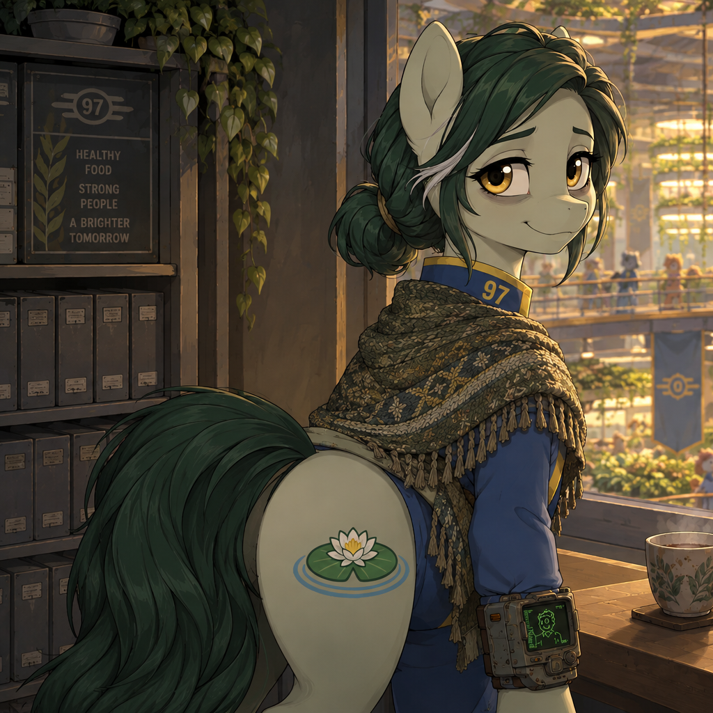
Nadzorczyni Lily Pad
Stali BN-owie Stajni. Każde imię mówi coś o roli postaci: liść lilii unosi dużo, aż przestaje; bank nasion leży w wiecznym mrozie; żyto ozime przesypia zimę pod śniegiem (ślad do kapsuł); fasola tyczna pnie się ku światłu; kora wierzby łagodzi ból, ale nie leczy.
BN
Kim jest
Wie o kapsułach
Kontakt z Rickiem
Lily Pad (Nadzorczyni)
pragmatyczna idealistka, chce ocalić wszystkich, ale wie, że nie da rady
tak
dała mu misję „szpicy”
Frozen Seed (Strażniczka Nasion)
trzyma Skarbiec, nieufna wobec obcych; główny cel przekupstw frakcji
nie
nie rozmawiali; koperta z nasionami przez Willow Bark
Winter Rye (Przeciwnik otwarcia)
szanowany starszy z Kręgu, chce zamknąć drzwi i ograniczyć populację
tak
słyszany przy kolacji
Runner Bean (Młody idealista)
chce wyjść na zewnątrz, zazdrości postaci przydziału
nie
przyniósł kopertę z przydziałem, z zazdrością
Willow Bark (lekarka)
przeprowadza coroczne badanie, pisze uwagi na marginesach
nie
badanie; koperta przy Wrotach
Rodzina Ricka
mama i tata; ojciec dał mu szczepkę rodzinnej roślinki
nie
—
Znaczki BN-ów (talent / drugie dno):
Lily Pad: liść lilii wodnej z trzema małymi kamykami — dźwiganie ciężaru innych / ile jeszcze zmieści się, zanim zatonie.
Frozen Seed: nasiono w kryształku szronu — chronienie tego, co cenne / nie oddaje niczego, co raz zamknęła.
Winter Rye: kłos żyta przygięty pod płatkiem śniegu — przetrwanie trudnych czasów / to, co przesypia zimę, kiedyś się budzi. Jeśli to za mocny sygnał razem z imieniem: kłos stoi w śniegu, bez przygięcia.
Runner Bean: pęd fasoli wokół tyczki wystającej poza krawędź znaczka — dążenie w górę / tyczka sięga dalej niż Stajnia.
Willow Bark: zwinięty pasek kory z jedną kroplą — łagodzenie bólu / kropla nie leczy, tylko uśmierza.
Pebble: nie miał znaczka — trafił na spoczynek jako ośmiolatek (tylko jeśli uśpionym zostaje źrebak).
Winter Rye
Sprzeciwia się nie tylko z powodu populacji: protokół przekierowuje zasilanie i może wybudzać kapsuły. Zna sekret. Na zewnątrz ma wyglądać na upartego starca.
Wygląd: zasady wizualne
Wszyscy w Ogrodach są trochę wyblakli: dwieście lat pod lampami — pastelowa, zgaszona sierść, mrużą oczy w dziennym świetle. Kombinezony zielone w różnych odcieniach z naszywką liścia; starsi ciemniejsze, młodzi jaśniejsze.
Postać
Wygląd
Znak rozpoznawczy
Lily Pad
ziemska, bladozielona, kremowa grzywa w kok, z którego coś się wymyka
kręgi pod oczami; niedopita ziołowa herbata
Winter Rye
ziemski, płowy z siwizną, szeroki w barkach
najciemniejszy kombinezon w Stajni; stuka kopytem w stół
Frozen Seed
jednorożec, niemal biała, krótka lodowato-błękitna grzywa
koc na kombinezonie, pęk kluczy na szyi
Runner Bean
pegaz, chudy, za długie nogi, rumiany, potargana zielona grzywa
skrzydła zawsze lekko rozchylone
Willow Bark
ziemska, drobna, siwiejąca
okulary na czubku pyska, pióro za uchem, zapach herbaty z kory
Ochrona
różne rasy, bez broni
żółta opaska na nodze i gwizdek, sztywna postawa
Miejsca w tle
Miejsce
Opis
Gdyby gracz zajrzał
Sala Kręgu (P1)
Okrągły stół, siedem krzeseł bez szczytu; na środku doniczka podlewana po kolei na początku każdego zebrania.
W dniu komunikatu drzwi zamknięte, zza nich podniesiony głos Winter Rye.
Łaźnie (P2)
Wspólne, na końcach skrzydeł, grafik co do kwadransa; woda letnia, bo ciepła idzie najpierw do Ogrodów.
Najlepsze miejsce na plotki w kolejce.
Żłobek (P2)
Najjaśniejsze miejsce w Stajni, lampy na „wieczne południe”, ściany w łąkach i niebieskim niebie z kredek. Tu źrebak dostaje pierwszą sadzonkę.
Pożegnanie z młodszym rodzeństwem.
Pralnia (P2)
Wirówki, para, mydło z Ogrodów; kombinezony w różnych odcieniach zieleni, bo każde pokolenie farbowało je inaczej.
Stąd kotary w korytarzach ze starych kombinezonów.
Poziom techniczny (P5)
Generator buczy w zębach, para w rurach. Sektor B to labirynt pomp z przyspawanymi tabliczkami imion mechaników z dwustu lat. W bocznym korytarzu puste, zakurzone kwatery dla „gości” z Aneksu C.
Nikt tam nigdy nie mieszkał, ale pokój czeka (to zdanie usuń, jeśli brzmi jak fałszywy ślad).
Drzwi poziomu 6
Winda kończy się na P5; schody w dół zamknięte kratą na kłódkę. Za kratą gródź z kołem i tabliczką Magazyn rezerwowy. Dostęp: Nadzorczyni. Zimno, para z pyska, równe niskie buczenie. Nic więcej.
Krata się nie otwiera. Ochrona grzecznie odprowadza gracza („Nadzorczyni tam schodzi, my nie”) — albo nikt nie przychodzi, jeśli ma być mniej podejrzanie.
Sekret Stajni
Sekret Stajni · co wie Lily Pad (i Winter Rye)
Kapsuły są więzieniem. 24 sprawców przemocy śpi na poziomie 6. Zmarłych oddaje się na kompost, a uśpieni nie umarli, więc rejestr nadal liczy ich jako żywych — i to oni przeważyli licznik. Otwarcie Stajni spowodował sekret, który Lily Pad i Winter Rye próbowali pogrzebać.
Dlaczego milczy: wykreślenie uśpionych z rejestru albo ich wypuszczenie wywołałoby pytania, a te nawet w pacyfistycznej Stajni skończyłyby się zamieszkami. Wypuszczenie to spalony most.
Najgłębsza warstwa — eksperyment Stable-Tec: czy przemoc da się wyplenić jak chwasty i czy jest wrodzona, czy nabyta. Wychowanie (podręcznik, badanie, test) sprawdza „nabytą”, plewienie (spoczynek bez powrotu) „wrodzoną”. Obrzęd „jak żyto w zimie” i czekanie na lek na „gorączkę gniewu” to scenariusz Stable-Tec, który Lily Pad odziedziczyła. Dane w terminalu na poziomie 6. Wynik: chwasty zawsze wracają — pokój Ogrodów jest wyborem mieszkańców, a uśpieni są tam na darmo.
Spoczynek od strony mieszkańców: długi, leczniczy sen „w chłodni na dole”; kapsuł nikt nie widział, odwiedzin nie ma. Ochrona odprowadza chorego pod drzwi poziomu 6 i oddaje Nadzorczyni. Ostatni spoczynek ok. 12 lat temu.
Sekret ma najwyższy poziom „Obscurity of Knowledge” (s. 66): na sesji zero i w one-shocie najwyżej plotka. Eksperyment nie pojawia się nawet jako ślad.
Jednostrzał w skrócie
Stajnia 97 „Gardens” · Stodoła, Krąg i łowcy niewolników.
2 sesje, opcjonalnie 3, po indywidualnych sesjach zero
Miejsce
Hoofington, Isolated Farmstead (mapa fanowska „The Hoof”)
Czas
przed wyjściem Blackjack ze Stajni 99
Narzędzia
Foundry VTT
Stajnia 97 „Gardens”, pacyfistyczna społeczność żyjąca z przedwojennych upraw, otwiera się po dwustu latach, bo rejestr mieszkańców przekroczył próg i przedwojenny Protokół Przepełnienia Stable-Tec otworzył drzwi oraz nadał sygnał. Sygnał słyszą wszyscy: frakcje, które wysyłają swoich ludzi, łowcy nagród, najemnicy na własny rachunek — i gang łowców niewolników wynajęty przez kogoś, kto chce nasion i medyka, ale nie może wziąć ich otwarcie.
Rick wychodzi tunelem na zwiad i trafia do zrujnowanej stodoły, gdzie wpada w walkę ze stworzeniami. Uriel i Rusty, którzy przyszli za sygnałem, docierają w trakcie i ratują go. Razem wracają do Stajni, gdzie Krąg każe im złożyć broń — i wtedy uderzają łowcy. Jednostrzał kończy się warunkiem Kręgu: nasiona trafią na pustkowia tylko przez tych, którzy potrafią działać razem.
Sesja
Co się dzieje
Koniec
Sesje zero (1 na 1)
Uriel, Rick, Rusty — każda kończy się przy stodole na Isolated Farmstead
Rick krąży wokół włazu pod szarym niebem, w PipBucku radio; Uriel i Rusty w drodze
Sesja 1: Stodoła i Krąg
walka w stodole w fazach, pierwsze spotkanie drużyny, zwiadowcy gangu, powrót tunelem, Krąg żąda złożenia broni
cliffhanger: alarm, gang u Wrót, zanim Krąg zdecyduje
Sesja 2: Obrona i warunek
pertraktacje z Tally Mark, szturm na zegarze, odwrót gangu, skutki, warunek Kręgu
otwarte zakończenie: część mieszkańców musi wyjść
Sesja 3 (opcja)
bufor, gdy 1–2 się przeciągną, albo epilog: pierwszy dzień eskorty
most do kampanii
Kampania
Szerszy Akt 1 (eskorta, intryga, ultimatum) i Akt 2 gramy tylko, jeśli gracze chcą. Kierunek, nie wyrok — zależy od ich decyzji.
→ sesja 3: „co dalej”
Fundament i ton
Region: Hoofington, przed wyjściem Blackjack ze Stajni 99 i przed Project Horizons. Grupa sześciu założycieli już się rozpadła, frakcje są ustalone. Wyjście Blackjack może pojawić się w tle jako plotka; nie kopiujemy fabuły Horizons.
Ton: nadzieja budowana celowo — małe zwycięstwa, rzeczy, które gracze ratują, BN-i, którzy się zmieniają — w najmroczniejszym regionie Equestrii. Pierwsze naturalne światło w życiu Ricka to szare, niskie niebo. Pierwsza przemoc, jaką widzą mieszkańcy Ogrodów, przychodzi z zewnątrz. One-shot pyta: czy da się chronić pokój, nie stając się tym, przed czym się go chroni?
Zasady: Fallout Equestria V1.22 (strony w nawiasach). Ściągi lore: „Legacy of the Ministry Mares” (s. 623), „Obscurity of Knowledge” (s. 66). Narzędzia: Foundry VTT.
Najważniejsze zasady prowadzenia
Cliffhanger sesji 1 jest sztywny, scena przed nim elastyczna. Gang zawsze przychodzi pod koniec sesji.
Wróg bez dylematu. Łowcy to jasny przeciwnik w pierwszej walce. Dylematy dają Krąg i mieszkańcy, nie gang.
Sekret zostaje pogrzebany. Kapsuły pojawiają się tylko jako ślady, które nic jeszcze nie znaczą (notki „Sekret MG” na marginesie).
Konflikty między postaciami rozgrywamy rozmową i wyborami, nie walką gracz kontra gracz.
Z czym przychodzą
Zasada: każdy zaczyna z wyposażeniem, jakie powinien mieć ktoś taki jak on. Nazwy jak w katalogu systemu w Foundry.
Uriel — najemnik Żelaznego Szponu
Stan kart w Foundry z 25.11 (MG wydał ekwipunek).
Skąd
Przedmiot
Uwagi
stawka z Gunthera
Katana — Named Weapon (cecha na karcie, ulepszenia w sesji 0,5)
4d8+STR, ×2 przed ulepszeniami
Organization: Mercenary
Mercenary Barding – Ladra Szponu (zamiast Equestrian Combat Barding z DT 22, który był zbyt mocny)
wartość 139; reszta budżetu niewydana albo jako dodatkowy przydział
prezenty z sesji zero
Fresh Apple (jabłko z kolacji), Fresh Seeds (koperta od Frozen Seed przez Willow Bark), szczepka rodzinnej roślinki
jeszcze nie na karcie (stan 25.11) — dodaj przynajmniej jabłko, bo gra w stodole
kieszeń
0 kapsli; 125 bitów (przedwojennych)
na pustkowiach ciekawostka; kolekcjoner albo stary ghul coś za nie da, handlarz pozna świeżaka
Specialization: Sneak (+15 w oknie rzutu) — poza listą podręcznika (Survival, Mercantile, Speechcraft, Magic, Medicine, Repair, Science). Od v0.74.2 karta działa po staremu, dopóki nie otworzysz kreatora; wtedy wybierz umiejętność z listy albo ręcznie ustaw cel efektu „Skill rolls” na Sneak. Good Natured: −10 do walki — w swojej chwili walki niech błyszczy siłą (S 7) i techniką, nie prętem.
Rusty Spur — wędrowiec pustkowi
Ustalone na sesji zero 24.11 (bez liczenia 300 kapsli: sprzęt z historii, broń jako Named Weapon).
Przedmiot
Uwagi
Armored Duster
DT 6 tułów i nogi, +5 Small Guns
Filtration Helmet
DT 9 głowa; zasada domowa: +20 do rzutów przeciw trującym i zakaźnym chmurom, ale brak filtrów
Saddlebags/Backpack (juki gońca), Canteen
Healing Potion ×1
działa lepiej, gdy poda ją ktoś, kto zna Rusty'ego
Sheriff's Badge (gwiazda)
na lewym barku
.357 Magnum Revolver — Named Weapon „Big Iron”
rewolwer ojca, 5 pkt ulepszeń; SATS nieaktywny bez sprzętu
4 paczki naboi .357 po 6
jedna w bębenku
39 kapsli
+ 250 kapsli od Haywarda, „nietykalne”
Fabularne: dzwonek bez serca, zeszyt „Spisane Prawo” (MG doda na kartę), list gończy Knota. Na sesji dochodzą już tylko drobiazgi. Filtry do hełmu to dobra nagroda w Stajni (Rick jest technikiem).
Jak czytać tę część
Każda scena ma cel, tekst do przeczytania (tam, gdzie jest gotowy) i notki MG. Statystyki stworzeń i łowców bierzesz z bestiariusza podręcznika V1.22 — tu jest, kogo wystawić, ilu i jak grają, a nie własne liczby. Wątki osobiste graczy, które wracają w jednostrzale, są oznaczone nazwą postaci; pełne źródło jest w ich sesjach zero.
Nici graczy w jednostrzale
Postać
Co ją tu przyciąga
Gdzie wraca
Rick
misja od Lily Pad: „szpica” — nawiązać przyjazne relacje z tymi z zewnątrz; meldunek co godzinę na kanale trzecim
stodoła (pierwszy świat), tunel (łamie rozkaz), Krąg (rodzina, Lily Pad), szturm (technik przy stanowisku kontroli, światła)
Uriel
ogłoszenie o radkaraluchach i mrówkach w stodole — pierwsze zlecenie na własny rachunek; płaci Obserwator (sesja 0,5), który powiedział mu, co jest pod stodołą
stodoła (kapsle są prawdziwe; Scavenger: wóz i rupiecie), Wrota („strażnik bramy”), Krąg (złożenie katany; kieszonkowanie w Stajni), szturm (kodeks: „celem nie jest źrebak” — Pea i Pod)
Rusty
Knot jedzie z Kantarem w to samo miejsce; Stajnia ma spisane prawo (art. 14); 250 kapsli Haywarda za Sweet Briar
zwiadowca Burr (sąsiad Sheaf, serce dzwonka; może wiedzieć, gdzie matka Rusty'ego i Skip; Rusty wini Kantar za spalenie osady), Krąg („w Stajni uszanuję”, oddanie Big Irona), szturm (zakładnik), Knot żywy czy martwy
Sesja 1: Stodoła i Krąg
Zbudować drużynę z ludzi, którzy nie mają powodu sobie ufać, i doprowadzić ich za Wrota z pustymi kopytami dokładnie wtedy, gdy przychodzi gang.
Notka MG. Czas. Pierwsza walka w nowym systemie, w nowym Foundry, z trzema nowymi graczami potrafi zjeść połowę wieczoru. Regulatorem jest scena 5 (przed Kręgiem): jeśli jest późno, Krąg trwa pięć minut i bije alarm. Jeśli jest wcześnie, pozwól obcym zwiedzić Stajnię z Runner Beanem. Jeśli sesja bardzo się przeciągnie, Krąg może przejść na początek sesji 2, a cliffhangerem będzie żądanie złożenia broni.
Scena 1. Sygnał
Krótki wstęp dla całego stołu, który łączy trzy sesje zero w jedną chwilę.
Czytaj na głos
Od trzech dni na każdej częstotliwości, w każdym odbiorniku między Hoofington a rzeką, słychać to samo: trzy czyste tony, jak dzwonek do drzwi, i wesoły, trzeszczący głos sprzed dwustu lat. „Stable-Tec wita nowych sąsiadów! Stajnia 97 otwiera swoje drzwi!” Potem współrzędne. Potem znowu dzwonek.
Każde z was usłyszało to gdzie indziej. Każde dostało inny powód, żeby tu przyjść. A teraz każde z was widzi na horyzoncie to samo: płaską, szarą równinę, kępę martwych drzew i pochyloną stodołę z dziurą w dachu.
Skąd przychodzą
Rick jest już w stodole; w PipBucku słyszał DJ Pon-3, który ostrzegał łowców, że w Stajni są „nowi”. Uriel: ogłoszenie o radkaraluchach i mrówkach w starej stodole; zleceniodawcą okazał się Obserwator, który przez sprite-bota z DJ Pon-3 powiedział mu, że pod stodołą są drzwi Stajni i że łowcy też słyszą sygnał (sesja 0,5). Rusty: bar w Cinder Ford, wieści Magpie, Knot.
Scena 2. Walka w stodole
Rick zaczyna sam. Uriel i Rusty wchodzą po kolei, każdy inną drogą. Walka ma 4–6 rund i trzy fazy. Pełna walka, bez skracania — to pierwsza lekcja systemu dla wszystkich.
Stodoła — mapa taktyczna (Foundry)Stodoła — schemat z numeracją
Mapa (ustawienie w Foundry)
Skala: 1 kratka = 5 stóp. Mapa ok. 22 × 28 kratek, stodoła 12 × 18. Rick wychodzi włazem pod sianem, tuż obok zapadniętej podłogi, z której wychodzą mrówki.
Element
Gdzie
W walce
Strych
pas desek wzdłuż północnej ściany
ok. 10 stóp, wejście tylko po drabinie w NW rogu; przewaga wysokości
Zapadnięta podłoga
NW róg, deski z okrągłymi dziurami
stąd wychodzą mrówki
Siano i właz
pod strychem, na zachód od środka
osłona częściowa, teren trudny; właz można zatrzasnąć i przytrzymać
Belki stropowe
dwie leżące belki i dwa pieńki w środku; na belce plakat
osłona częściowa, teren trudny
Plama światła
środek-wschód
światło spod dziury w dachu; tędy wlatuje bloatsprite
Boksy
wschodnia ściana, 4 przegrody
ścianki do połowy: osłona częściowa
Wóz
SW róg wnętrza
pełna osłona, można się wspiąć
Wrota
południowa ściana; jedno skrzydło leży na podwórzu
skrzydło daje osłonę wchodzącym od drogi
Boczne drzwi / wyrwa
wschodnia ściana przy południu / zachodnia ściana
dodatkowe wejścia
Ruiny, silos, koryto, drzewo
W, NE, SW, SE na zewnątrz
ruiny i koryto: osłona częściowa; silos: pełna
Wejścia drużyny: A — drogą z południa (osłona: wyrwane skrzydło wrót) — Rusty (szlak ze wschodu przez równinę zakręca na drogę); B — polem od wschodu (boczne drzwi) albo C — od zachodu przez ruiny (wyrwa w ścianie) — Uriel, zależnie od tego, skąd przyszedł. Kolejność wejść ustal rzutem albo dramaturgią.
Foundry: ściany blokują ruch i widok; wrota, boczne drzwi, wyrwa i właz jako drzwi. Wnętrze ciemne, jedno szare światło pod dziurą w dachu, na zewnątrz dzień. Strych jako region z notatką „10 stóp, wejście po drabinie”.
Mrówki
Kolonię sprowokował tunel Stajni — da się ją odstraszyć bez wybijania. Rick, technik, może zauważyć, że tunel przebił ich korytarze.
Uriel · Scavenger
Wóz w stodole, plakat, zardzewiałe narzędzia — Uriel musi podnieść wszystko, co ma jakąkolwiek wartość. Dobry moment na krótką scenę po walce.
Rick · pierwsza walka
Obiecana dłuższa chwila w walce. Ma pod kopytem długi pręt (Lead Pipe, 3d8+STR), młotek i właz do zatrzaśnięcia. Jest silny — może przewrócić belkę albo wóz na mrówki.
Przeciwnicy i ich role
Radroache: wielkości kota, lśniący brązowy pancerz, długie drgające czułki. Wolne i słabe, ale groźne dla zaskoczonego, nieuzbrojonego kucyka. Terytorialne. Start pacyfisty.
Mrówki: robotnice wielkości źrebaka, matowo czerwonobrązowe; żołnierz dwa razy większy, z ogromnymi żuwaczkami i pancerzem jak spękana glina. Robotnice prawie nieagresywne, żołnierz bardzo groźny dla nieprzygotowanych. Kolonia atakuje, bo czuje zagrożenie — tunel Stajni przebija jej korytarze. To Ogrody same sprowokowały atak. Da się je odstraszyć bez wybijania.
Bloatsprite (młody): napuchnięta kula wielkości arbuza, futro w kolorze zgniłej brzoskwini, za małe skrzydełka brzęczą jak trzmiel, paszcza otwiera się szerzej, niż powinna. Pluje kolcami z dystansu, z bliska próbuje pożreć. Młody osobnik: bez trucizny (paraliż dorosłych trwa 1d4 dni i wyłączyłby gracza z jednostrzału) i bez przenoszenia chorób.
Bez spritebotów i bez mrówek ognistych. Watchera zostaw na później (może wpaść jako deus ex machina); ogień w stodole pełnej siana to ryzyko wybicia drużyny.
Graczy
Radroache
Robotnice
Żołnierze
Bloatsprite
3 (nasz skład)
4 (2 + 2 w rundzie 2)
3
1
1 (młody)
4
4
3
1
1 (młody)
Inicjatywa grupowa: radroache jedna grupa, mrówki druga, bloatsprite osobno. Postacie 1. poziomu — w razie wątpliwości licz w dół.
Przebieg w fazach
Rundy
Co się dzieje
Wejścia drużyny
1–2 · pułapka
Muzyka w PipBucku cichnie. Siano szeleści. 2 radroache wychodzą z siana na samego Ricka; w rundzie 2 dwa kolejne. Właz się zacina — Rick nie ucieknie tunelem. Może walczyć, wspiąć się na strych, schować za wozem, odpalić SATS.
—
2–4 · mrówki
Hałas budzi kolonię pod zapadniętą podłogą: najpierw 2 robotnice, potem żołnierz.
runda 2: pierwsza postać z zewnątrz
4–6 · kulminacja
Młody bloatsprite wlatuje przez dziurę w dachu, zwabiony jabłkiem z kolacji, które Rick schował na powierzchnię. Gdy żołnierz padnie albo zostanie odpędzony, kolonia się wycofuje.
runda 3–4: druga postać
Czytaj na głos
Coś szeleści w sianie. Coś, co ma więcej nóg niż cokolwiek, co widziałeś w życiu. W Ogrodach nie było ani jednego owada — zapylały pegazy i pędzelki. To, co wyłazi spod zbutwiałego siana, ma rozmiar kota, lśniący brązowy pancerz i czułki, które drgają w twoją stronę.
Notka MG.
Potrzask bez bezradności. Rick nie może kilka rund tylko rzucać na obronę. Daj mu konkretne opcje: zatrzasnąć i przytrzymać właz, wspiąć się na strych, odciągnąć uwagę, rzucić bloatsprite'owi jabłko — i je stracić.
Wejście każdego obcego to jego moment. Jedno zdanie opisu, pierwsza akcja z bonusem zaskoczenia albo dobrą pozycją. Uriel: Podmuch (Aard), katana w telekinezie albo rzut telekinezą (Explosives) — jego dawny rewolwer został u Gunthera; ma 9mm Pistol z Mercenary. Uriel ma też 9mm, nóż, dwa granaty i lekki barding najemnika (DT 8) — granat w stodole pełnej siana to pożar (zapowiedz to). Rusty: Big Iron (rewolwer ojca, Named Weapon) i Zwinność 8; zasada 5 — „jak nie wiem, to nie strzelam”: na kogo celuje w półmroku?
Wyjście bez zabijania. Pacyfista może przekonać resztę, żeby odpędzić mrówki zamiast je wybić. Zapamiętaj, kto co zrobił.
Kopiec przy wylocie tunelu to zaczepka na później: mrówki mogą kiedyś pójść tunelem do Stajni.
Ściąga tempa: jeśli walka przekracza 6 rund, kolonia się wycofuje, a bloatsprite odlatuje z łupem.
Scena 3. Po walce: pierwsze spotkanie
Rick widzi obcych pierwszy raz w życiu i konfrontuje ich z tym, czego uczyły materiały edukacyjne (okrojona wiedza o pustkowiach, Aneks C o „innych rasach”). Obcy przyszli za sygnałem, a Rick jest drogą do jego źródła. Każdy ma powód, żeby ten drugi przeżył.
Notka MG.
Daj scenie oddychać: kto opatruje, kto pierwszy się przedstawia, kto trzyma broń w pogotowiu.
Uriel — jednorożec w barwach Szponu, z blizną (Scarred) — i Rusty z gwiazdą „Z upoważnienia Korony” to dla Ricka żywe rozdziały podręcznika. Niech gracz sam zdecyduje, czy wierzy materiałom.
Zapłata Uriela za „zlecenie na stwory” jest u Obserwatora — kapsle są prawdziwe. Głos z radia: Rick słyszał w PipBucku DJ Pon-3, Uriel — kogoś, kto mówił przez jego sprite-bota.
Uriel nosi ten sam typ bardingu co łowcy Kantaru (Mercenary/Slaver). Gdy zwiadowcy się pokażą, ktoś — Rick, Ochrona przy Wrotach — może ich skojarzyć. Bez ochry i kantara, ale krój ten sam.
Rick ma od Lily Pad misję „szpicy”: nawiązać przyjazne relacje z tymi z zewnątrz. Uriel i Rusty to właśnie oni — i tym argumentem może bronić ich przed Kręgiem.
Rusty może zapytać Ricka o prawo Stajni. Rick wie, że ma meldować się na kanale trzecim co godzinę — i że ma za chwilę meldunek.
Burr to Sheaf
Złapany zwiadowca to dawny sąsiad Rusty'ego z Cichych Brodów. Rusty najpierw zobaczy serce dzwonka na rzemieniu, potem łan pszenicy spod zdrapanej ochry (rzut na Spostrzegawczość: ten dźwięk zna). Zasada 1 kontra zasada 3 — jego scena. Od sesji zero wiadomo więcej: z Cichych Brodów zniknęła też matka Rusty'ego oraz źrebak Skip z matką. Rusty wierzy, że osadę spalił Kantar — Burr wie, że Kantar przyszedł dopiero po bandzie z trzema kreskami i kołem. Matkę Rusty'ego, Skipa i jego matkę Kantar sprzedał dalej — Burr wie komu. To i prawda o tym, kto spalił Brody, to jego karty przetargowe.
Scena 4. Zegar: zwiadowcy gangu
Ktoś zauważa dwóch obserwatorów na skraju farmy (rzut na Percepcję; przy porażce zauważa ich ten, kto ma najlepszą pozycję). To zwiadowcy gangu Kantar, który też odebrał sygnał. Rick musi ostrzec Stajnię i zabiera obcych tunelem do środka, łamiąc rozkazy zwiadu.
Czytaj na głos
Na grzbiecie za silosem, tam gdzie kończą się martwe drzewa, coś błyska. Szkło. Lornetka. Dwie sylwetki leżą płasko w trawie i patrzą prosto na stodołę. Kiedy orientują się, że zostały zauważone, jedna odczołguje się w tył. Druga nie spieszy się wcale.
Notka MG.
Gracze mogą ruszyć w pościg. Złapany zwiadowca (najlepiej Burr) wie mało, ale wygada, że „szef ma klienta”. Ucieknie przynajmniej jeden — gang i tak musi przyjść.
Meldunek na kanale trzecim: inżynier w panice przekazuje Lily Pad. Odpowiedź: „Wracaj natychmiast. Sam.” Rick decyduje, czy przyprowadza obcych.
Droga tunelem to dobry moment na rozmowę bez walki i na pierwszy wspólny plan.
Scena 5. Przed Kręgiem
Przy Wrotach czeka Ochrona bez broni i stary inżynier. Krąg żąda złożenia broni w szafce przy wejściu (magazyn wyposażenia, poziom 0), zanim obcy wejdą dalej. Potem Sala Kręgu: okrągły stół, siedem krzeseł bez szczytu, doniczka podlewana na początku każdego zebrania.
Czytaj na głos
Wrota stoją otworem, tak jak zostawił je protokół. Za nimi, w żółtym świetle ostrzegawczych lamp, czeka kilkoro kucyków w zielonych kombinezonach. Żadne nie ma broni. Jedno trzyma podkładkę z formularzem, drugie otwiera metalową szafkę i odsuwa się od niej, jakby w środku było coś zaraźliwego.
„Witamy w Ogrodach — mówi kucyk z podkładką, i słychać, że to zdanie wyćwiczył. — W Stajni 97 nie wnosimy broni. Każda rzecz dostanie numerek. Oddamy wszystko, kiedy będziecie wychodzić.”
Przejęzyczenie
„Nie wszyscy, którzy złamali nasz pokój, zniknęli” — Winter Rye mówi o 24 uśpionych. Rick słyszał to przy kolacji — może rozpoznać zdanie.
Pytanie o plan
Jeśli obcy pytają o plan Stajni: poziom 6 „to magazyn”. Runner Bean wzrusza ramionami. Krata się nie otwiera.
Na posiedzeniu Kręgu:
Lily Pad: uprzejma, zmęczona, chce wiedzieć, kto ich przysłał i czego chcą. Dziękuje za uratowanie Ricka.
Winter Rye: głośno przeciw obcym. „Protokół to nie wyrok, tylko wymówka. Zamknijmy drzwi.” W złości przejęzycza się: „Nie wszyscy, którzy złamali nasz pokój, zniknęli. Nie zapraszajmy reszty z zewnątrz.” Potem milknie.
Frozen Seed: pyta obcych wprost, czego chcą od Skarbca. Pamięta odpowiedź. Rick zna ją tylko z widzenia — kopertę z nasionami dostał przez Willow Bark.
Runner Bean: podsłuchuje pod drzwiami, potem łazi za obcymi.
Broń przy Wrotach
Rusty: „W Stajni uszanuję” — sprawdź, czy dotrzyma. Zapyta o kodeks: Frozen Seed trzyma archiwum (art. 14, wersja B). Uriel: oddaje kucykowi z podkładką katanę wydartą Guntherowi, a do tego pistolet, nóż i granaty? „Strażnik bramy” (sesja 0,5) stoi dosłownie przy drzwiach. A Scavenger podnosi w Stajni wszystko, co ma wartość — kto to zauważy? Rick: zna tych z Ochrony po imieniu. Rusty oddaje Big Irona — rewolwer ojca.
Notka MG. Krąg działa przez konsensus, więc nie podejmie decyzji szybko — to działa na twoją korzyść. Gracze, którzy odmówią złożenia broni, nie wchodzą dalej niż poziom 0 i czekają przy Wrotach. Wtedy szturm zaczyna się przy nich, a szafka jest dla innych.
Scena 6. Cliffhanger
Czytaj na głos
W połowie zdania Lily Pad milknie. Z głośników płyną trzy tony, ale tym razem nie czyste — rozstrojone, jakby ktoś ściskał dzwonek w pięści. Potem głos inżyniera, bez żadnej wesołości: „Ruch w tunelu. Dużo ruchu. Oni… oni mają klatki.”
Na środku stołu stoi doniczka, którą ktoś przed chwilą podlał. Nikt nie wie, że to ostatnie zebranie Kręgu, przy którym w Stajni 97 nie było przemocy.
Notka MG. Koniec sesji. Broń drużyny leży w szafce przy Wrotach, poziom niżej — dokładnie tam, gdzie zaraz wejdzie gang.
Gang Kantar
Łowcy niewolników. Na powierzchni zwykły gang — w rzeczywistości wynajęty przez frakcję, która chce nasion i medyka, ale nie może wziąć ich otwarcie.
Tally Mark, herszt
Prowadzi księgę i liczy „towar” sztukami — tak jak Stajnia liczy mieszkańców w rejestrze. Negocjuje, zanim uderzy. Nie walczy w pierwszej linii. Mówi spokojnie i nigdy nie podnosi głosu.
Wygląd: klacz-jednorożec, popielato-szara sierść, grzywa ciasno spleciona w warkocz, czysta kamizelka najemnika. Lewituje księgę i ołówek, kopyta ma poplamione atramentem. Znaczek: pięć kresek, czyli liczenie. Na szyi, jak każdy łowca, nosi kantar. Jako jedyna w gangu (poza Knotem) nosi znaczek odkryty.
Archetyp z podręcznika: Slaver Lieutenant (zarządza towarem i koordynuje ludzi); jeśli chcesz bardziej mówcę niż organizatora, weź cechy Smooth Talker.
Czytaj na głos
Popielata klacz w kamizelce najemnika nie podnosi broni. W bladej poświacie jej rogu unosi się księga, gruba, oprawiona w skórę, a obok niej ołówek. Strony przewracają się same, liczy coś pod nosem i dopiero wtedy na was patrzy.
„Dzień dobry, Ogrody. Nazywam się Tally Mark. Nie przyszłam was skrzywdzić — krzywda to strata towaru. Przyszłam zrobić porządek w waszych liczbach. Macie za dużo pyszczków do wykarmienia. Ja mam za mało. Myślę, że się dogadamy.”
Uriel
Tally Mark liczy w księdze jak Gunther. „Sztuka”, „należność” — ten język zna z Igły.
Notka MG. Linia przewodnia Tally Mark: wszystko jest rachunkiem. Jako jednorożec może jednocześnie trzymać księgę i pistolet, więc szybko stanie się celem strzelców drużyny — dlatego trzyma się z tyłu.
Wygląd gangu
Zasada wizualna: każdy łowca nosi kantar, czyli uzdę bez wędzidła, rzucającą się w oczy na tle zbroi. Te same kantary zakładają jeńcom, więc gracze widzą, czym jest „towar”, bez dosłowności. Kolor gangu to rdzawa ochra: paski, opaski, farba na zbroi. Pancerz to barding Mercenary/Slaver, każdy inaczej połatany.
Znaczki zamalowane ochrą. W Kantarze liczy się to, co robisz dla Tally Mark, nie twój talent, więc szeregowi łowcy zamalowują znaczki. Odkryte nosi tylko Tally Mark i Knot.
Zwiadowcy: szczupli, w ochrowych płachtach maskujących, lornetki na rzemieniach.
Oprychy: ciężcy ziemscy, sieci zwinięte na grzbiecie, pałki owinięte szmatą, żeby nie łamać kości „towaru”.
Strzelcy: pegazy albo jednorożce, trzymają się z tyłu, ochrowa farba na kolbach.
Wóz z klatkami: dawny wóz rolniczy z klatkami z siatki ogrodzeniowej; na boku kreski wydrapane kredą, jedna za każdy „towar”.
Łowcy z imieniem
Burr (rzep), zwiadowca do złapania w sesji 1. Pod zdrapaną farbą widać łan pszenicy: był kiedyś rolnikiem w osadzie. Daje graczom powód, żeby z nim porozmawiać, a nie tylko go przesłuchać. Jeśli zostanie złapany, nie wraca w sesji 2.
Knot (węzeł), prowodyr oprychów i jedyny szeregowy, który nie zamalował znaczka: węzeł sieci. Wysoki ziemny, ciężka budowa. Dumny z tego, co robi. To on sięga po koktajl Mołotowa i dostaje za to od Tally Mark. Poszukiwany listem gończym z Cinder Ford: porwanie Sweet Briar i pobicie Haywarda — 250 kapsli żywy, 100 martwy. Hayward zapłacił Rusty'emu 250 kapsli z góry, za przyprowadzenie Sweet Briar (sesja zero).
Rusty · nie pomyl gangów
Burr = Sheaf z Cichych Brodów, nosi serce dzwonka. Ciche Brody wymordowała inna banda (trzy kreski i koło); Kantar przyszedł jak sęp i zabrał ocalałych. Rusty nie wie, że to dwa gangi.
Skład na 3 postacie 1. poziomu
Skład wzmocniony po sesjach zero (Big Iron, katana jako broń nazwana, granaty Uriela). Oprychów jest o jednego więcej niż graczy: każda postać może związać jednego, a czwarty sprawdza, kogo drużyna zostawi bez osłony; więc porwania biorą się z wyborów graczy (bieg do szafki, odbijanie jeńca, osłanianie kogoś), a nie z przewagi liczebnej gangu.
Kto
Ilu
Uzbrojenie i rola
Archetyp
Zwiadowcy
2 (w tym Burr)
Lekka broń, lornetka. W sesji 1 obserwują farmę; w sesji 2 pilnują punktu zbiórki jeńców w tunelu. Złapani w sesji 1 nie wracają.
Slaver Grunt
Oprychy
4 (w tym Knot)
Pałka i sieć. Sieć łapie mieszkańca albo krępuje postać gracza. Walczą, żeby obezwładnić.
Slaver Grunt
Strzelcy
3
Prawdziwa broń palna wymierzona w postacie graczy. Osłaniają, przyszpilają, nie strzelają do mieszkańców.
Slaver Grunt
Tally Mark
1
Pistolet; dowodzi, negocjuje.
Slaver Lieutenant
Strażnik wozu
1
W stodole przy wozie; pilnuje klatek, w tym Sweet Briar. Ucieka z wozem, jeśli gang się wycofuje.
Slaver Grunt
Wóz z klatkami
—
W stodole, przy włazie do tunelu. W klatce Sweet Briar.
—
Przy Wrotach w sesji 2: 4 oprychów i 3 strzelców w szturmie, 2 zwiadowców przy jeńcach (minus złapani w sesji 1), Tally Mark; w stodole strażnik wozu. Złapanie zwiadowcy w sesji 1 realnie ułatwia odbicie jeńców w sesji 2. Jeśli i tak idzie za łatwo: +1 strzelec na strychu stodoły. (Przy 4 graczach: 5 oprychów.)
Pancerz łowców: barding Mercenary/Slaver z listy bardingów (s. 159). Opisy archetypów łowców są w bestiariuszu, ok. s. 550–553.
Skąd wiedzą i czego chcą
Skąd wiedzą: zleceniodawca przechwycił sygnał przepełnienia i od razu ich wynajął.
Cel: żywe, zdrowe kucyki. Z rozkazu zleceniodawcy także nasiona nietknięte i medyk (Willow Bark) żywy.
Dlatego bez ognia i materiałów wybuchowych. Pokaż to graczom: Tally Mark warczy na Knota, który sięga po koktajl Mołotowa.
Do ustalenia
Zleceniodawca gangu — po decyzjach graczy, nie frakcja żadnej postaci.
Zleceniodawca: wybierasz po decyzjach graczy. Na start nie może to być frakcja żadnej postaci — zerwanie z frakcją ma wynikać z wyboru gracza, nie z dekretu MG.
Sweet Briar · ustalone
W klatce na wozie w stodole; pilnuje jej strażnik wozu. Matka Rusty'ego, Skip i jego matka zostali sprzedani dalej — Burr wie komu.
Sesja 2: Obrona i warunek
Gracze bronią ludzi, którzy im nie ufali — gołymi kopytami albo po drodze do szafki. Miarą sukcesu jest liczba uratowanych, nie zabitych.
Pole walki: poziom 0
Cała walka toczy się przy Wrotach: koło zębate, śluza odkażająca, stanowisko kontroli Wrót, magazyn wyposażenia z szafką na broń. Za Wrotami tunel do stodoły.
Punkt zbiórki. Wóz stoi w stodole, kilkaset metrów tunelem od Wrót. Celem oprycha jest więc punkt zbiórki w tunelu, tuż za Wrotami, gdzie jeńców pilnują zwiadowcy. Dopiero przy odwrocie gang ciągnie ich tunelem do wozu. Rundy 5–6 to pościg w tunelu.
Strefa
W walce
Tunel za Wrotami
punkt zbiórki jeńców; pilnują go zwiadowcy
Wrota i koło zębate
wąskie gardło; pełna osłona za krawędzią koła
Śluza odkażająca
korytarz między Wrotami a środkiem; teren trudny, gdy pełno w nim mieszkańców
Stanowisko kontroli
inżynier; przełącznik świateł i syreny
Magazyn wyposażenia
szafka z bronią drużyny — w środku strefy walki
Poziom 0: Wrota — mapa pod szturm
Notka MG.
Dlaczego przy Wrotach są mieszkańcy: wybrani do wyjścia i ich rodziny zebrali się, żeby zobaczyć obcych i niebo z opowieści.
Dlaczego Wrota są otwarte: protokół blokuje ich zamknięcie, a stanowisko kontroli nie ma uprawnień, żeby go nadpisać. Winter Rye od dwóch dni żąda, żeby to obejść.
Mieszkańcy przy Wrotach
Osadnicy z przyszłej eskorty — twarze w tłumie, które gracze ratują albo tracą.
Nettle i chwast
Znaczek-chwast to jedyny ślad eksperymentu w one-shocie. Willow Bark notuje o nim więcej niż o innych. Nie tłumacz.
Moss (mech), ogrodniczka-weteranka: zna uprawy najlepiej, boi się otwartego nieba. Stara ziemska klacz, ciemnozielona, ziemia wbita w kopyta; patrzy w podłogę. Znaczek: kępka mchu na kamieniu w cieniu.
Horsetail (skrzyp), inżynier: zbuduje nawadnianie, nie zna pustkowi. Podkrążone oczy, smar na pysku, łaty na łokciach. Znaczek: pęd skrzypu oplatający koło zębate. Kolega Ricka z drużyny technicznej.
Clover z Pea i Pod: jednorożec, pastelowo-różowa; źrebaki w kombinezonach po starszych, bez znaczków. Znaczek Clover: koniczyna, każdy listek w innym odcieniu. Test wartości drużyny.
Rick ich zna
Clover z Pea i Pod, Nettle i Willow Bark stali przy Wrotach, kiedy Rick wychodził (sesja zero). Dla niego to nie twarze z tłumu.
Nettle (pokrzywa), zbuntowany młodzik: ciemniejsza sierść, obgryzione kopyta, oderwana naszywka liścia. Pierwszy pacyfista, który sięgnie po broń. Znaczek: liść pokrzywy.
Ruch 1. Pertraktacje u Wrót
Tally Mark proponuje odejść w zamian za obcych i kilku zdrowych mieszkańców. Krąg debatuje przy graczach — postacie słyszą, jak ich los jest przedmiotem głosowania. Winter Rye skłania się ku oddaniu obcych. Lily Pad odmawia.
Uriel słyszy rachunek z Igły: „sztuka”, „należność”. Rusty widzi Knota — i Kantar, który, jak wierzy, spalił Ciche Brody. Rick widzi, jak Krąg głosuje o obcych, którzy go uratowali.
Czytaj na głos
„Liczyłam was po drodze — mówi Tally Mark i stuka ołówkiem w księgę. — Za dużo was tam w środku, słychać przez ściany. Proponuję tak: oddacie mi tych dwoje obcych, bo to nie wasi. Do tego, powiedzmy, sześć sztuk waszych. Młodych, zdrowych. Wy będziecie mieli mniej gąb, ja będę miała towar, a nikt nie musi krwawić. To przecież rozsądne. Wy lubicie rozsądne.”
Notka MG.
Pilnuj tempa. Jeśli debata trwa dłużej niż kilka minut, Tally Mark traci cierpliwość, zamyka księgę i daje znak.
Zdeprawowana logika pacyfizmu: ktoś z Kręgu — nie Winter Rye, on chce zamknąć drzwi — może zaproponować oddanie ochotników „za spokój”. Mocna scena moralna bez walki.
Gracze mogą próbować negocjować, blefować albo zaatakować pierwsi. Każdy z tych wyborów jest dobry; szturm i tak nastąpi.
Ruch 2. Szturm (zegar 6 rund)
Oprych bez postaci gracza w zasięgu wręcz chwyta mieszkańca, a związany walką walczy.
Zasada priorytetu oprycha
Rozstrzygasz ją w każdej jego turze:
Postać gracza w zasięgu wręcz? Walczy z nią.
Nikogo w zasięgu? Chwyta najbliższego mieszkańca.
Już kogoś trzyma? Wlecze go do punktu zbiórki za Wrotami.
To daje graczom realne narzędzie: każdy oprych związany walką to oprych, który nikogo nie porywa. Ustawienie postaci staje się obroną.
Porwanie
Chwycenie to akcja. Pacyfista prawie się nie broni, więc sieć zwykle wystarcza.
Droga do punktu zbiórki: 2 rundy przy połowie szybkości. To okno dla graczy.
Oprych puszcza jeńca, gdy dostanie obrażenia. Liczy się każde trafienie, nawet słabe — także pięścią albo rzuconą doniczką.
Jeniec w punkcie zbiórki jest stracony, chyba że ktoś przebije się tam przez zwiadowców.
Strzelcy
Przyszpilają postacie, które biegną do szafki z bronią albo odbijają jeńców. Nie strzelają do mieszkańców.
Światła mrugają
W rundzie 2 inżynier mamrocze, że „szóstka znowu żre prąd”. Rick przy stanowisku kontroli może przełączyć zasilanie — i zobaczyć, że coś na 6 bierze go najwięcej.
Zasady graczy w szturmie
Rusty — „nawet zakładnika”: łowca zasłania się osadnikiem. Uriel — „celem nie jest źrebak”: Pea i Pod, Clover nie nadąża. Do obrony ma katanę (jeśli zdąży do szafki), Podmuch i rzut telekinezą; szafka może kryć coś ostrego.
Rytm rund
Runda
Co się dzieje
1
Strzelcy przyszpilają Wrota, oprychy wpadają. Gracze bez broni wybierają: biec do szafki czy osłaniać mieszkańców.
2–3
Szczyt porwań. Większość decyzji graczy zapada tutaj. Nettle sięga do szafki. Światła mrugają.
4
Tally Mark woła „zbieramy!”. Kto trzyma jeńca, wycofuje się, reszta osłania.
5–6
Pościg w tunelu albo opatrywanie rannych. Na końcu tunelu wóz w stodole: strażnik i Sweet Briar w klatce — jeśli drużyna zdąży, zanim wóz odjedzie.
Cel MG: 1–2 porwanych. Jeśli gracze grają świetnie, mogą uratować wszystkich — to też dobre zakończenie; hakiem zostaje kontrakt.
Notka MG.
Mieszkańców prowadź grupami (np. 3 tokeny po kilka kucyków), nie pojedynczo. Chwycony mieszkaniec dostaje własny token.
Gang wycofuje się, gdy padnie Tally Mark albo 3 z 7 łowców ze szturmu (oprychy i strzelcy; zwiadowców przy jeńcach nie liczysz), i najpóźniej po wołaniu „zbieramy” w rundzie 4. Zabierają tych, których zdążyli wyciągnąć.
Ruch 4. Ślad
U Tally Mark (jeśli padła) albo w wozie / w punkcie zbiórki, upuszczony przy ucieczce, jest kontrakt:
Czytaj na głos
Kartka złożona na cztery, zatłuszczona na zgięciach. Liczby, zakreślenia, cena za „sztukę”. Na dole dwie linijki innym, starannym charakterem pisma: Nasiona nietknięte. Medyk żywy. Zamiast podpisu jest znak — odciśnięty, niewyraźny, jakby ktoś celowo przekręcił pieczęć.
Nie pomyl znaków
Pieczęć zleceniodawcy ma być nieczytelna. To nie trzy kreski i koło (banda z Cichych Brodów). Rozszyfrowanie — kampania.
Ruch 5. Skutki
Ranni, porwani i mieszkańcy, którzy pierwszy raz w życiu zobaczyli przemoc. Willow Bark opatruje. Ktoś płacze, ktoś wymiotuje, ktoś stoi nad szafką z bronią i nie może oderwać wzroku. Nettle nie chce oddać tego, co z niej wyjął.
Notka MG.
To moment dla graczy, nie dla BN-ów: daj każdemu jedną krótką scenę z kimś, kogo uratował albo nie.
Majaczenie
Ranny mieszkaniec: „Nie kompost… Spoczynek, jak syn Thornów?” — ślad do kapsuł, który nic jeszcze nie znaczy. Rick słyszał przy ostatniej kolacji o „spoczynku Thornów” — rozpozna nazwisko.
Rusty i Knot
Rusty ma już 250 kapsli Haywarda (zaliczka za Sweet Briar, „nie wydam”) — a Sweet Briar siedzi w klatce na wozie w stodole. Knot żywy to list gończy (250); martwy — to zasada 3 i zemsta za Brody, które Rusty przypisuje Kantarowi. Gdy Knot się poddaje — Code of Honor (jeśli został w karcie).
Ruch 6. Warunek Kręgu
Czytaj na głos
Krąg zbiera się jeszcze tej samej nocy, tym razem przy Wrotach, bo nikt nie chce schodzić niżej. Lily Pad stoi przy szafce z bronią, którą ktoś zamknął z powrotem. Mówi cicho, ale słychać ją wszędzie.
„Nie oddamy nasion jednej frakcji. Widzieliśmy dziś, co się dzieje, kiedy ktoś chce wziąć wszystko. Podzielimy się z pustkowiami — ale tylko przez tych, którzy potrafią działać razem.” Patrzy na waszą trójkę. Potem na tłum. „I muszę wam powiedzieć coś jeszcze. Protokół się nie zatrzyma. Część z nas musi wyjść.”
Koniec jednostrzału. Otwarte zakończenie: kto wyjdzie, dokąd, z kim i co z porwanymi.
Akt 2
Kilka tygodni po otwarciu zasilanie kapsuł zawodzi i pierwsi uśpieni się budzą — gdy drużyna straci wsparcie frakcji.
Hak na kampanię
Porwani mieszkańcy: odbicie ich to naturalna pierwsza misja (a dla Rusty'ego — zaginieni z Cichych Brodów u tego samego Kantaru).
Kontrakt: kto zapłacił? Pierwszy dowód, że frakcje grają przeciw sobie. Zleceniodawcę wybieramy po wyborach graczy; nie może to być frakcja żadnej postaci.
Warunek Kręgu: nasiona tylko przez drużynę, nie przez jedną frakcję — źródło konfliktu z frakcjami.
Nagrody fabularne: karta z art. 14 z archiwum Frozen Seed (Rusty), nowe filtry do maski, Sheriff's Duster od Haywarda.
Sesja 3 (opcjonalna): Wyjście
Bufor, nie zaplanowana treść. Pierwsze sesje w nowym systemie zawsze się przeciągają.
Jako bufor: dokończ szturm, skutki i warunek Kręgu.
Jako epilog: pierwszy dzień eskorty osadników. Moss pierwszy raz pod szarym niebem. Wybór miejsca na nowy ogród. Ślady wozu Kantaru prowadzą w jedną stronę, nowy ogród — w drugą.
Most do kampanii: drużyna dostaje pierwsze propozycje od frakcji, które kłócą się z warunkiem Kręgu.
Co dalej, jeśli gracze chcą grać dalej
Na później · kierunek, nie wyrok
Wszystko poniżej to kierunek. Gracze prowadzą tę historię razem z tobą.
Akt 1 w pełnej wersji: sabotaż w cieniu (tajne rozkazy frakcji), eskalacja (atak albo zatrucie wody, za które każda frakcja obwinia inną), ultimatum na granicy wartości postaci. Zerwanie z frakcjami wynika z wyborów graczy.
Akt 2: nowa „organizacja” w postaci ogrodu-osady drużyny i budzący się uśpieni.
Osadnicy mają realną wartość — leczą, budują, karmią — i się zmieniają, żeby uniknąć syndromu misji eskortowej.
Wątki postaci: Gunther z rewolwerem Uriela i „Pies zawsze wraca” (Uriel); los Mudwater, jeśli kiedyś się przyda; znak trzech kresek i koła, matka Rusty'ego, Skip i jego matka sprzedani dalej (Burr wie komu), art. 14 (Rusty); przodkowie Ricka i to, co buczy na poziomie 6.
Do ustalenia
Miejsce nowej osady; punkt na osi czasu Horizons; przysięga Steel Rangers i ścieżka zebr — tylko jeśli ktoś je wybierze.
Ściąga tempa
Jeśli…
…to
Walka w stodole przekracza 6 rund
Kolonia się wycofuje, bloatsprite odlatuje z łupem.
Sesja 1 idzie wolno
Krąg trwa pięć minut i bije alarm. Albo cliffhangerem jest żądanie złożenia broni.
Sesja 1 idzie szybko
Obcy zwiedzają Stajnię z Runner Beanem; Frozen Seed w Ogrodach.
Pertraktacje się ciągną
Tally Mark zamyka księgę i daje znak.
Szturm jest za wolny w Foundry
Grupowa inicjatywa gangu, mieszkańcy w grupach.
Gracze są zbyt skuteczni
Zero porwanych to też dobre zakończenie; hakiem zostaje kontrakt.
Lista przed pierwszą sesją
Statystyki z bestiariusza: radroach, mrówka robotnica i żołnierz, bloatsprite (młody, bez trucizny), Slaver Grunt ×10 (+1 rezerwowy strzelec), Slaver Lieutenant; drzewne wilki (s. 490) na sesję zero Uriela; Gunther (gryf-weteran).
Mapa stodoły w Foundry: siatka, ściany, drzwi, światło, region strychu.
Mapa poziomu 0 (Wrota) — jest, do ustawienia w Foundry.
Tokeny: 3 grupy mieszkańców, wóz z klatkami.
Rozmowa o granicach na każdej sesji zero.
Dodatki
Materiały
Ekran MG, materiały dla graczy, materiały postaci, handouty do wręczenia i grafiki. Teksty dla graczy są tu w całości: to, co dostają do ręki, plus to, co już wypełnili.
Dodatek A
Ekran MG
Zasady Fallout: Equestria V1.22 pod ręką. Numery stron według podręcznika.
Rzut i TN s. 6–8
Rzucasz d% i trzeba wyrzucić ≤ TN. Niżej znaczy lepiej.
Premia odejmuje się od rzutu (albo dodaje do TN). Kara odwrotnie. „Krok MFD” to przesunięcie o jeden szczebel drabiny.
Krytyki
01–05 krytyczny sukces
96–100 krytyczna porażka (np. zacięcie broni)
Skutek krytyka decyduje MG.
Premie z kart szczęścia nie robią krytyka. Liczy się goła kostka.
Bez umiejętności
MG wybiera atrybut, rzut na ATR × 10 przy odpowiednim MFD.
Drabina MFD s. 6–7
MFD
Trudność
Przykład
2
Bardzo łatwe
rozmowa z przyjaznym NPC, śrut z przyłożenia
1½
Łatwe
tropienie niezdarnego kuca, przemknięcie obok śpiących
1
Normalne
trafienie widocznego celu w zasięgu, łatwy zamek
¾
Trudne
uczciwa cena u neutralnego kupca, przeciętny zamek
½
Bardzo trudne
trudny terminal, zauważenie, że mina się uzbroi
¼
Frustrująco trudne
strzał na ślepo zza barykady
1/10
Nadzwyczaj trudne
pilot vertibucka bez SATS
1–5
Prawie niemożliwe
tylko krytykiem
TN z MFD tabela s. 632
TN umiejętności przy MFD 1 = ranga + ½ (ATR × 10); inne MFD to ułamek tej wartości, zawsze w dół (pełna tabela przeliczeń: s. 632–633). Przykład: ranga 30 + ATR 6 → 30 + 30 = 60.
Kara z osłony
Procent zasłonięcia odejmuje się od TN wprost (25% osłony = −25).
Rzuty przeciwstawne s. 9, 60
Obaj rzucają, porównują osiągnięte MFD. Niższe MFD (np. 1/10 zamiast ¼) wygrywa.
Remis to przerzut obu. Krytyczny sukces remisuje tylko z krytycznym sukcesem.
Skradanie (uproszczone): MFD z percepcji strażnika staje się MFD, które musi zdać skradający się. Remis wygrywa strażnik.
Kieszonkostwo: Sneak vs PER, −5 za każdą jednostkę wagi ponad 1. Podłożenie bez wpadki wymaga wygranej o 1 krok.
Umysł vs magia: INT celu vs Magic rzucającego.
Siła woli: rzut INT i CHA, liczy się lepszy.
Pomoc przy rzucie s. 64
Pomagający rzucają przed głównym. Każdy ich sukces: MFD łatwiejsze o krok. Każda ich krytyczna porażka: trudniejsze o krok.
Skradanie s. 60
Strażnik
MFD
Śpi, ślepy, unieruchomiony
2
Zmęczony, zajęty kartami lub lekturą
1½
Znudzony
1
Skupiony
¾
Uważny
½
W gotowości
¼
Pełna gotowość, wie, że idziesz
kryt.
Ciężar: od 50 jednostek, −5 do Sneak za każde rozpoczęte 10 (s. 19).
Światło s. 49, 60
Warunki
Percepcja
Skradanie
Pełne słońce, reflektory
+1 krok
−2 kroki
Stałe sztuczne, światło Pipbucka
0
−1 krok
Dzień pochmurny
0
0
Migoczące, zmierzch, ruiny za dnia
−5
0
Latarnia, ognisko, wczesny wieczór
−5
+1 krok
Ulewa, ruiny wieczorem
−1 krok
+1 krok
Burza, jaskinie, ruiny nocą
−2 kroki
+2 kroki
Zasięg percepcji bez Pipbucka: PER × 5 stóp. Każdy kolejny przyrost to −1 krok, maksimum PER × 25 stóp.
Wiedza postaci s. 65–66
INT lub pasująca umiejętność, MFD według obskurności faktu. +10, jeśli tło sugeruje, że postać mogła to wiedzieć. Raz na temat.
MFD
Poziom wiedzy
2
Wojna z zebrami o węgiel i klejnoty
1½
Sześć ministerstw i ich klaczki
1
Stable-Tec, wieże SPP, Enklawa
¾
Sześć frakcji Hoofington, lokalne gangi
½
Mity zebr, sekrety Stajni 1
¼
Projekty OIA (nazwy), wiedza o Enklawie
1/10
Gardens of Equestria, Homage = DJ PON-3
Dla mieszkańca Stajni 97 wiedzę z zewnątrz rozgrywaj odgrywaniem, nie rzutami.
Karty szczęścia s. 53–57
Przydział na sesję
Gracz: ½ LUCK w górę + 2, minimum 3. Nie przechodzą na następną sesję.
MG: 1 na gracza, +1 za alicorna, piekielnego psa, towarzysza zwierzęcego lub ghula, +2 za ghula z Canterlotu, +1 za gracza z Uncontrolled Magic lub Narcoleptic.
Ważny boss może mieć własną pulę.
Oddanie karty innemu: kosztuje 2 za 1.
Użycia
Przerzut porażki: każdy przerzut poszerza oba zakresy krytyków o 5. Przy 50/50 koniec przerzutów.
Kryt. porażka → zwykła: karta + rzut LUCK MFD 1. Bez przerzutu tego rzutu.
Przed rzutem: +10 za kartę, maks. 5. Goły krytyk 01–05 zwraca karty.
Coś niesamowitego i poprawa historii za zgodą MG.
Negowanie trafień i ran
Trafienie: po ogłoszeniu trafienia, przed obrażeniami. LUCK MFD 1.
Rany: karta zdejmuje 1 ranę od razu, potem rzut najniższym atrybutem MFD 1. Każdy krok poniżej MFD 1 zdejmuje kolejną ranę. Krytyk zdejmuje wszystkie.
Karta MG: zmiana rzeczywistości kosztuje MG kartę, a każdy dotknięty gracz dostaje jedną.
Runda s. 435–437, 471
Runda = 6 s, każdy ma 2 akcje.
Inicjatywa: d100 ± do AGI MFD ¼. Niższy wynik działa pierwszy. Decyzja ± po rzucie, przed ogłoszeniem.
Krytyczny sukces zawsze pierwszy, krytyczna porażka ostatnia. Remis: wyższe AGI, potem równocześnie.
Opcja: Ta sama dziesiątka (40–49) działa jednocześnie.
Zaskoczenie
Rundę zaskoczenia mają tylko atakujący (i Quick Witted): 1 akcja. Cel nieświadomy ataku = krytyk z ukrycia.
Akcje
Jedna akcja
Ruch · strzał lub atak · włączenie SATS · przeładowanie (czasem więcej) · czar (więcej z overglow) · receptura · manewr lotniczy · unik · blok · osłona · skradanie · użycie trzymanego przedmiotu · dobycie broni · wyjęcie z juków · wstanie.
Obie akcje
Szarża (pełny dystans i atak wręcz) · gaszenie się tarzaniem.
Darmowe
Krótka mowa · rzuty odporności · obrażenia trwające · podtrzymanie lub zakończenie czaru · rzut strachu · dobycie z Quickdraw.
Przeładowanie i strzał w jednej akcji: −1 krok (nie w SATS). Autoloader przeładowuje za darmo.
Ruch i SATS s. 13–15
Ruch
Zasięg
Ląd
2,5 × AGI stóp / akcję
Lot, kopanie
5 × AGI stóp / akcję
Skradanie
½ ruchu
Dwunożni
½ ruchu lądowego
Przeciążenie
−5 stóp za każde 10 ponad limit
Zaokrąglaj w dół do 5 stóp. Kaleki może się czołgać 5 stóp na akcję. Udźwig 100 + 10 × STR.
SATS
Pula 40 + 5 × AGI, odnowa 5 na rundę.
Neguje kary widoczności i ukrycia za osłoną. Sam nie daje premii.
Krytyk wręcz lub bez broni w SATS: podwójny krytyk.
Obrona s. 452–454
Wymaga zostawionej akcji. Można ją wydać poza kolejnością.
Unik
Rzut AGI (lub lot, kopanie, magia). Najniższe osiągnięte MFD staje się MFD trafienia w tę postać do końca rundy.
Przesuwa o 5 stóp lub ½ ruchu.
Teleport lub Shadowflash: 100% skuteczny wobec jednego atakującego.
Blok (musi widzieć atak)
Kończyną: Unarmed, MFD o krok łatwiejsze niż MFD trafienia. Połowa obrażeń.
Przedmiotem: Melee ¾. Zero obrażeń.
Inną postacią: przeciwstawny STR, wygrana o krok.
Padnij
Bez rzutu, +10 DT na wszystkie lokacje przeciw wybuchom. Wstanie: AGI ¾ albo cała akcja.
Osłona s. 453–455
Unik MFD 1, jeśli osłona jest w zasięgu jednej akcji ruchu. Daje % zasłonięcia jako karę dla strzelającego. Gdy strzał trafiłby bez tej kary, przebija słabą osłonę: cel dostaje jej DT.
Osłona
DT
% zasł.
Beton 1 stopa
50
100
Stalowe drzwi, płyta 1"
30
100
Beczka z wodą
35
100
Szafka na akta
30
80
Ściana wagonu
25
100
Kuc bez pancerza
18
100
Ziemia, skała 1 stopa
10
100
Drewniane drzwi, regał
6
100
Blacha falista
4
100
Płot sztachetowy
3
50
Krzaki, wysoka trawa
–
75
Siatka, drut kolczasty
1
5
Gdzie jest osłona s. 454
Teren
Szansa
DT
Pustkowie przy drodze
15%
0–10
Pustkowie poza szlakiem
10%
0–5
Zarośla
20%
0–15
Samotny budynek, farma
20%
0–20
Ruiny miasteczka
40%
0–10
Mała osada
30%
0–20
Stajnia
20–50%
5–40
Tunele, kanały
60%
5–25
Las
70%
0–20
Ruiny miejskie
70%
10–50
Obrażenia krok po kroku s. 462
Bazowe broni + premie (perki, STR, umiejętność).
Mnożniki sumuj, nie mnóż (krytyk, głowa ×1,5, serce ×2). Maksimum ×10. Liczone przed pancerzem.
Upadek na kogoś: obaj dostają tyle samo, obrażenia ÷ (1 + liczba przygniecionych).
Woda i jedzenie s. 478–479, 579
Odwodnienie (etap = 6 h bez picia)
Etap
Skutek
1–2
Suchość. Do 12 h cofa to jeden łyk. Opcja: −1 krok CHA
3
−1 STR, END, AGI
4 · 24 h
SATS +10 kosztu, −10 inicjatywa
5
kolejne −1 STR, END, AGI
6
1d4 ran w tors
7 · 9
celność −1 krok, potem kolejny
8 · 48 h
1 akcja w walce
10
1d6 ran w tors
11
END ¾ albo omdlenie
12 · 72 h
Zapaść, śmierć w ciągu godziny bez Medicine ¾
Głód
1 posiłek dziennie. Kary rosną co dzień, śmierć po 3 tygodniach. Ponad 3 posiłki: +15 do END do końca dnia.
Dodatek B · dla graczy
Wybór rasy
Stable-Tec // archiwum mieszkańca, dok. nr R-01. Poradnik dla graczy, którzy znają kucyki z kreskówki — ale jeszcze nie z pustkowi.
Z bajki na pustkowia
Jeśli znasz My Little Pony z kreskówki, znasz już większość ras — ale nie świat, w którym teraz żyją. Ponad dwieście lat temu wojna Equestrii z Zebrami skończyła się balefire: magicznymi bombami, które spaliły kraj i zatruły go promieniowaniem. Część kucyków przetrwała w podziemnych schronach zwanych Stajniami (Stables), reszta żyje na pustkowiach wśród ruin, bandytów i mutantów.
Magia i znaczki działają
Znaczek (cutie mark) to wciąż talent postaci — w grze podpowiada, w czym jest dobra.
Kucyki strzelają
Broń trzyma się w pysku, telekinezą albo w siodle bojowym. Nikogo nie dziwi uzbrojony kucyk.
Uprzedzenia są prawdziwe
Zebry to dawny wróg, pegazy odgrodziły się chmurami, ghuli się boją. Rasa zmienia to, jak witają cię obcy.
Przyjaźń nie umarła
Ale kosztuje. To świat, w którym dobroć jest wyborem, a nie domyślnym ustawieniem.
Nie musisz znać fanfików. Wszystko, co twoja postać wie o świecie, dopowie MG. Pełne zasady tworzenia postaci są w podręczniku, w rozdziale Races and Racial Abilities. Skróty atrybutów: STR Siła, PER Percepcja, END Wytrzymałość, CHA Charyzma, INT Inteligencja, AGI Zwinność, LUCK Szczęście. Nazwy umiejętności zostawiamy po angielsku (np. Small Guns, Speechcraft), żeby zgadzały się z kartą postaci; „macs” to wagowa jednostka świata gry.
Szybki wybór
Na pierwszą grę najbezpieczniej wybrać kucyka ziemskiego albo jednorożca. Podręcznik odradza początkującym wszystko poniżej zebry.
Rasa
Trudność
W czym dobra
Weź, jeśli lubisz…
Kucyk ziemski
łatwa
wytrzymałość, technika, broń
prostą, solidną postać, która rośnie najszybciej
Jednorożec
łatwa–średnia
magia: leczenie, naprawa, otwieranie
specjalizację — maga, medyka, technika
Pegaz
średnia
latanie, zwiad, walka
mobilność i postać z tajemnicą (skąd się wziął na ziemi?)
Gryf
średnia
walka, latanie, pazury
najemnika z kodeksem i kontraktem
Zebra
trudna
alchemia i talizmany albo przetrwanie
outsidera, który musi zdobyć zaufanie
Ghul (cecha)
średnia–trudna
odporność na promieniowanie, długowieczność
tragizm i postać, która pamięta dawny świat
Rasy dodatkowe
różnie
—
tylko po rozmowie z MG
Kucyk ziemski · Earth pony
W kreskówce: Applejack, Pinkie Pie — farmerzy i piekarze, ci „bez magii”. Na pustkowiach to kucyki ziemskie zaprojektowały Stajnie, tunele pod Hoofington i broń, której wszyscy wciąż używają. Nikt rozsądny ich nie lekceważy.
Terminal Stable-Tec // dane rasowe
Atrybuty
+1 do dwóch z: STR, END, INT
Umiejętności
+5 do dwóch z: Science, Repair, Unarmed, Big Guns, Survival; −10 Lockpicking (min. 5)
Zdolność
Earth Pony Dedication — +1 punkt umiejętności na każdym poziomie
Za darmo
perk Strong Back (+50 udźwigu) albo High Ho Silver, Away! (+5′ ruchu); jedna cecha za 1 punkt (lub −1 do kosztu droższej)
Wzrost · dieta
4′0″–4′10″ (ok. 122–147 cm) · 270–370 macs · roślinożerna
Mocne strony: najbardziej wszechstronna rasa i najszybciej rosnąca. Nauka, naprawa, walka wręcz, ciężka broń, przetrwanie.
Słabość: brak magii i skrzydeł — nadrabiają sprzętem i uporem. Kopyta nie lubią zamków.
Jak ich widzą inni: zwyczajnie. Najliczniejsza rasa, nikogo nie dziwi.
Pomysły: mechanik, który naprawi wszystko, co ma śrubki · farmer twardszy od rajdera · kucyk ze Stajni, który pierwszy raz widzi niebo.
Jednorożec · Unicorn
W kreskówce: Twilight Sparkle, Rarity. Tu magia jest narzędziem przetrwania — telekineza trzyma karabin, zaklęcie zamyka ranę, a światło z rogu rozprasza ciemność tunelu.
Terminal Stable-Tec // dane rasowe
Atrybuty
+1 do jednego z: PER, INT, LUCK
Umiejętności
+3 do trzech z: Small Guns, Sneak, Lockpicking, Energy Weapons, Science
Umiejętność rasowa
Magic +10 (oparta na INT)
Zdolność
telekineza: precyzyjna manipulacja, brak kary do Lockpicking
Zaklęcia na start
zaklęcie znaczka (jeśli znaczek je daje) + jedno darmowe zaklęcie 1. poziomu; tylko poziom 0–1
Cechy specjalne
One Trick Pony, Arcane Devotion, Magical Savant, Stubby Little Horn, Channeler
Wzrost · dieta
4′1″–4′11″ z rogiem (ok. 124–150 cm) · 250–350 macs · roślinożerna
Mocne strony: łatwo zbudować specjalistę — uzdrowiciela, technika, włamywacza. Na wysokich poziomach magia staje się naprawdę potężna.
Słabość: na niskich poziomach magia pochłania zasoby, więc zostaje mniej na inne umiejętności. Rzucanie zaklęć męczy (Strain).
Jak ich widzą inni: zwyczajnie — choć użyteczny róg przyciąga uwagę handlarzy niewolników.
Pomysły: polowy medyk z zaklęciem leczenia w znaczku · uczony grzebiący w przedwojennych archiwach · złodziej, dla którego zamek to tylko zagadka.
Pegaz · Pegasus
W kreskówce: Rainbow Dash, Fluttershy. Pod koniec wojny większość pegazów uciekła nad chmury i utworzyła Enklawę, zamykając niebo nad ziemią. Pegaz na pustkowiach to rzadkość — i zawsze ma historię.
Terminal Stable-Tec // dane rasowe
Pochodzenie
wybierane przy tworzeniu postaci; zmienia premie
Urodzony na ziemi
+1 AGI, END lub PER · +5 do dwóch z: Survival, Mercantile, Small Guns, Sneak
Dezerter (Dashite)
+1 AGI lub PER · +5 do dwóch z: Survival, Energy Weapons, Big Guns, Repair · darmowe Power Armor Training
Enklawa / EVC
+1 AGI lub INT · +5 do dwóch z: Medical, Science, Survival, Small Guns, Energy Weapons · darmowe Formal Education (EVC)
Wszyscy
−10 Lockpicking (min. 5)
Umiejętność rasowa
Flight +10 (oparta na AGI); manewry w locie; obsługa terminali chmurowych Enklawy
Zdolność
chodzenie po chmurach i budowanie z nich
Wzrost
4′0″–4′10″ (ok. 122–147 cm) · 150–310 macs
Mocne strony: zwiad, mobilność, walka. Pegazy z Enklawy częściej znają naukę, broń energetyczną i pancerze wspomagane.
Słabość: skrzydła to cała tożsamość — ich utrata jest tragedią. Enklawa nie lubi, gdy jej pegazy schodzą na dół.
Jak ich widzą inni: z podejrzliwością albo zazdrością. „Ci z chmur” zostawili resztę na śmierć.
Pomysły: żołnierz, który zobaczył ziemię i nie wrócił · pegazica wychowana przez kucyki ziemskie, która nigdy nie widziała Enklawy. MG zdecyduje, które pochodzenia pegazów są dostępne w tej kampanii.
Gryf · Griffin
W kreskówce: Gilda, szorstka koleżanka Rainbow Dash. Na pustkowiach gryfy to najemnicy — w wojnie walczyli dla obu stron, a ich klany wciąż sprzedają swoje usługi. Najsłynniejsi to Talon Company.
Terminal Stable-Tec // dane rasowe
Atrybuty
+1 do jednego z: PER, AGI, END
Umiejętności
+3 do dwóch z: Small Guns, Big Guns, Energy Weapons, Melee Weapons, Unarmed
Umiejętność rasowa
Flight +10 (oparta na AGI); terminale chmurowe Enklawy
Zdolność
pazury (broń naturalna); Opposable Claw — chwytne szpony bez magii, wspinaczka z połową prędkości
Cechy specjalne
Organization: Mercenary (zalecana, daje darmowe Named Weapon); Stable Dweller; Omnivore za darmo przy 4+ przywarach
Znaczki
brak
Wzrost · dieta
4′8″–5′10″ (ok. 142–178 cm) · 300–510 macs · mięsożerna lub wszystkożerna
Mocne strony: walka i wsparcie, latanie, ręce zdolne do wszystkiego.
Słabość: drapieżnik w świecie roślinożerców, duży — trudniej się schować.
Jak ich widzą inni: jak broń do wynajęcia. Szanowani za dotrzymywanie kontraktów, rzadko lubiani.
Kodeks: lojalność wobec klanu i pisemnej umowy. Świetny powód, by gryf trzymał się drużyny — ktoś mu za to zapłacił.
Pomysły: najemnik, któremu zleceniodawca zginął, a kontrakt nadal obowiązuje · gryf wydalony z klanu.
Zebra
W kreskówce: Zecora, zielarka mówiąca rymami. Tu zebry to naród, z którym Equestria prowadziła wojnę, która skończyła świat. Wiele kucyków wciąż widzi w każdej zebrze wroga — i odwrotnie.
Terminal Stable-Tec // dane rasowe
Atrybuty
+1 do jednego z: PER, END, CHA, INT
Umiejętności
+5 Survival, +5 Unarmed, +5 Sneak; −20 Speechcraft wobec kucyków (−5 w przebraniu lub jako Proditor); −10 Lockpicking (min. 5)
Umiejętność rasowa
Zebra Magic +10 (INT lub CHA): mikstury, talizmany, rytuały
Przepisy na start
Zebra Magic ÷ 10 (w dół), maks. 1. poziom
Bez magii
zamiast +10 do magii: dwa razy +5 do innych umiejętności; brak przepisów na start
Za darmo
perk Hind Leg Stance
Cechy specjalne
Astronomer, Stable Dweller (Survival → Science, Medicine lub Repair), Organization: Caesar's Legion lub Proditor
Wzrost
4′0″–5′2″ (ok. 122–157 cm) · 230–370 macs
Mocne strony: przetrwanie, walka wręcz, skradanie. Wszechstronna, ale wymaga planowania: przepisy trzeba znać, a składniki zebrać.
Słabość: duża kara do rozmów z kucykami, które cię nie znają.
Jak ich widzą inni: z nieufnością, często z wrogością. Część plemion zebr uważa, że wojna wcale się nie skończyła.
Pomysły: zebra urodzona w Equestrii, która nigdy nie widziała ojczyzny · alchemiczka handlująca miksturami · łowczyni z plemienia po próbie przetrwania. Podręcznik odradza zebrę na pierwszą grę — nie przez zasady, tylko przez odgrywanie ciągłej nieufności otoczenia.
Ghul · cecha, nie rasa
Ghul to ktoś, kto przeżył śmiertelną dawkę promieniowania balefire. Wygląda jak żywy trup, ale myśli i czuje jak dawniej. Wybierasz rasę (kucyk, zebra, gryf), a potem bierzesz cechę Ghoul.
Terminal Stable-Tec // dane rasowe
Koszt
2 punkty tworzenia postaci (ghul młodszy niż 50 lat)
Ghul sprzed wojny
z przywarą Elderly: +5 rang umiejętności do rozdania albo darmowa Specialization albo karma do ±100 (za zgodą MG)
leczy: 1 rana na wszystkich kończynach na każde 200 rad co 5 minut; daje premie zamiast kar
Potrzeby
nie je i nie musi dużo spać; 14 dni bez promieniowania → letarg, potem śmierć po 2d4 dniach
Rozmowy
−20 Speechcraft wobec większości nie-ghuli
Inne
świetne widzenie w ciemności; odporność na uzależnienia (+20 END); nie starzeje się; o (2d4×15) lżejszy
Mocne strony: pustkowia są dla ciebie bezpieczniejsze niż dla innych.
Słabość: uprzedzenia i powyżej 600 rad sam zaczynasz promieniować na towarzyszy.
Jak ich widzą inni: ze strachem. Większość ghuli zdziczała, więc każdy musi udowadniać, że nie jest potworem.
Pomysły: ktoś, kto pamięta Equestrię sprzed wojny · ghul, który wciąż nie przyjął do wiadomości, że świat się skończył. Rzadszy wariant, ghul z Canterlotu (4 punkty; tylko kucyki, zebry i gryfy), jest prawie nie do zabicia, ale ma poważne minusy. Tylko za zgodą MG.
Rasy dodatkowe (za zgodą MG)
Te rasy są rzadkie albo trudne do pogodzenia z resztą drużyny. Stajnie nie przyjmowały ich wcale albo w małej liczbie.
Rasa
W skrócie
Mechanika
Dlaczego zgoda MG
Osioł (Donkey)
wędrowny handlarz i negocjator, twardy jak podeszwa
+1 do dwóch atrybutów · +5 do dwóch z: Mercantile, Speechcraft, Sneak · darmowa cecha
najłatwiejsza z dodatkowych; rzadka w regionie
Bizon (Buffalo)
wielki, spokojny lud, neutralny do końca wojny
Large + cecha za 1 pkt za darmo · +5 do dwóch z: Melee, Survival, Unarmed, Medicine · premia do szarży
rzadki; słaby w technice
Nietoperzowy kucyk (Bat pony)
nocna gwardia Luny, lot i ultradźwiękowy krzyk
+1 PER lub AGI · Flight +10 · +5 do dwóch z: Energy Weapons, Survival, Unarmed, Sneak
mówi w częstotliwości, której inni nie słyszą; brak organizacji
Pies piaskowy (Sand dog)
mistrz cybernetyki, naprawy i kopania
+1 INT, AGI lub END · Dig +10 · +5 Repair, +5 Explosives · −15 Speechcraft wobec kucyków
pamięta krzywdy od kucyków
Minotaur
dwunożny olbrzym, dawny sojusznik zebr
Large za darmo · +1 STR lub END · +5 do dwóch z: Melee, Unarmed, Big Guns, Survival · może znać magię zebr
bardzo silny; to samo piętno co zebry
Piekielny ogar (Hellhound)
podziemny drapieżnik, zabójczy z bliska
+1 STR, PER lub END · Dig +10, pazury · −50 Speechcraft wobec nie-psów
wrogi wszystkim innym rasom
Alikorn (Alicorn)
owoc wojennych eksperymentów: lot i potężna magia
Large, Channeler · Flight +5 · do 9 zaklęć na start · wolniej rośnie w siłę
nikt na pustkowiach ich nie lubi; trudny do zbalansowania
Mieszańce (Half-breeds)
rzadkie połączenia dwóch ras, np. zebra z kucykiem
każdy mieszaniec to osobna rasa; słabszy fizycznie, darmowa cecha
podręcznik wprost ostrzega: dla zaawansowanych
Stajnia czy pustkowia
Ze Stajni
Z pustkowi
Najczęściej kucyki ziemskie i jednorożce. Rodziny zebr i gryfów, które zapłaciły Stable-Tec, też dostały miejsca — biorą wtedy cechę Stable Dweller i zamieniają część umiejętności przetrwania na Science, Repair albo Medicine. Pegazy w Stajni to rzadkie wyjątki.
Wszystkie rasy. Tu rodzą się plemienne zebry, najemne gryfy, ghule i pegazy, które zeszły z chmur.
Mieszkaniec Stajni wie o świecie mało. To dobra rola dla gracza, który sam zna świat tylko z kreskówki: postać odkrywa go razem z tobą.
Przed sesją zero: 1. Skąd pochodzi twoja postać? 2. Dlaczego ktoś inny w drużynie mógłby jej nie ufać? Resztę dopracujemy wspólnie.
Dodatek C · dla graczy
Co czytać w podręczniku
Przewodnik po podręczniku FoE dla twojej rasy. Strony według wydania V1.22.
Jak korzystać
Podręcznik ma ponad 630 stron, ale do stworzenia postaci potrzebujesz około 100–150 z nich. Najpierw przeczytaj strony wspólne, potem tylko sekcję swojej rasy.
Numery stron to numery wydrukowane na dole strony w podręczniku Fallout Equestria V1.22 („N | P a g e”).
Czytaj = przeczytaj przed sesją zero. Przeglądaj = to katalog (zaklęcia, perki, sprzęt), szukasz w nim tylko tego, co wybierasz.
Nie wiesz, gdzie coś jest? Zapytaj MG zamiast kopać w całym podręczniku.
Strony dla wszystkich
Każdy gracz, niezależnie od rasy, czyta te sekcje.
Alikorny, piekielne i piaskowe psy, pegazy z Enclave lub Dashite
Każdy może
Wiedza postaci
Prawie nic nie wie o pustkowiu, polecane na pierwszą grę
Zależy od historii postaci
Stajnia zmienia też premie niektórych ras:
Kucyk ziemski: nie może wybrać Survival w premiach rasowych i musi wziąć Strong Back (str. 24).
Gryf: zamienia jedną premię do umiejętności na Repair, Science lub Medicine (str. 27).
Zebra: zamienia Survival na Science, Medicine lub Repair (str. 28).
Postaci samotne z pustkowia mogą wziąć przeszkodę Abandoned (str. 73): startują z 200 kapslami zamiast 300 i bez pipbucka. Pełny opis cechy Stable Dweller jest w opisach cech, str. 102–121.
Organizacje i ograniczenia rasowe
Organizacje to opcje cechy Organization, opisane na str. 111–115. Możesz należeć tylko do jednej. Cechy nie da się połączyć z Stable Dweller ani z przeszkodą Abandoned.
[embedded content: organizacje według ograniczeń rasowych]
Organizacja
Strona
Kto może dołączyć
Caesar’s Legion / Proditor
111–112
Tylko zebry i minotaury
Crusaders
112
Każda rasa, ale wymaga przeszkody Young lub cechy Foal at Heart
Enclave Volunteer Corps (EVC)
112
Tylko pegazy
Ganger
112–113
Każda rasa
Mercenary / Bounty Hunter
113
Każda rasa; gryfy dostają darmową Named Weapon
Raider
113
Każda rasa, ale wymaga przeszkody Sadist
Reaper
113–114
Każda rasa; kosztuje 2–3 pkt i pasuje głównie do okolic Hoofington
Settlement (Minor / Major)
114
Każda rasa
Slaver
114
Każda rasa
Steel Rangers / Applejack’s Rangers
114–115
Tylko kucyki ziemskie, jednorożce i mieszańce
Tribal
115
Każda rasa
Ograniczenia, które łatwo przeoczyć:
Steel Rangers: Scribes wymagają INT powyżej 5, Knights wymagają STR i AGI powyżej 4. Jednorożec w Knights zwykle nie awansuje powyżej rangi Squire.
Nietoperzowe kucyki: mogą wybrać tylko Tribal, chyba że MG zrobi wyjątek (str. 35).
Power Armor Training: dostępne tylko dla Steel Rangers, Applejack’s Rangers, EVC, pegazów Dashite i gryfich najemników albo za zgodą MG (ok. str. 116–117). Knights dostają tę cechę za darmo.
Czego nie musisz czytać
Te sekcje są dla MG albo zawierają spoilery, więc gracze mogą je pominąć.
65–66: tabela wiedzy postaci. Zawiera duże spoilery z fanfików.
371–378: magia nekromantyczna i Black Book.
406–434: przykładowe postacie poziomu 15 i 30.
472–476: handel i karma. MG wyjaśni to w trakcie gry.
490–601: bestiariusz i pozostałe zagrożenia.
602–628: przewodnik MG.
Dodatek D · dla Ricka (Tymek)
Ściąga gracza: kuc ziemski ze Stajni
Zasady w pigułce dla postaci ze Stajni Ogrodów (9.11.2026).
Jak działają rzuty
Rzucasz d% (dwie k10: dziesiątki i jedności, 1–100) i chcesz wyrzucić tyle albo mniej niż liczba docelowa (TN). Niżej znaczy lepiej.
Pomoc: każdy pomagający, który zda ten sam rzut, ułatwia MFD o stopień. Pomagający rzucają pierwsi.
Rzut bez umiejętności: MG wybiera atrybut, rzucasz atrybut × 10.
Tworzenie postaci krok po kroku
Kolejność z podręcznika: rasa → atrybuty → umiejętności i znaczek → przeszkody → cechy.
Rasa: kuc ziemski (str. 24)
+1 do dwóch z: STR, END, INT.
Darmowa cecha za 1 punkt albo obniżenie kosztu droższej cechy o 1.
Darmowy perk Strong Back: +50 jednostek udźwigu bez kary do ruchu (kary do skradania bez zmian). Kuc ze Stajni musi wybrać Strong Back, nie High Ho Silver.
Bonusy rasowe: +5 do dwóch z: Science, Repair, Unarmed, Big Guns. Kuc ze Stajni nie może wybrać Survival.
−10 Lockpicking (minimum 5), bo kopyta.
+1 dodatkowy punkt umiejętności przy każdym awansie.
Opcje na start: Ricochet (perk 26 poziomu) jako cecha za 1 punkt; Cyberpony bez zgody MG.
Atrybuty (str. 49–52)
Każdy atrybut startuje od 1; do rozdania zostaje 28 punktów, plus bonusy rasowe.
Punktami podniesiesz atrybut najwyżej o 8 (Luck do 10). Twardy limit na zawsze: 12.
5 to przeciętna.
Umiejętności i znaczek (str. 58–63)
Wybierz 3 umiejętności tagowe: +15 rang każda, bez dublowania.
Znaczek zwykle wiąże się z przynajmniej jednym tagiem.
Kolejność bonusów: rasowe → z cech i przeszkód → tagowe.
Przeszkody (str. 67–98)
Każda daje +1 punkt. Maksimum 6; na start zalecane najwyżej 3.
Wykluczają się z cechą Stable Dweller: Abandoned i Illiterate.
Cechy (str. 99–121)
Na start zalecane najwyżej 2.
Stable Dweller: PipBuck (zwykle model 2000 lub 3000), mundur zależny od funkcji w Stajni (ochrona dostaje pancerz ochrony, technik kombinezon roboczy itd.), czasem broń, jedzenie albo mikstury lecznicze. Możliwe drobne implanty. Nie łączy się z Organization, Cache Location, Illiterate ani Abandoned. MG może dać tę cechę za darmo.
Standardowy budżet startowy na sprzęt to 300 kapsli.
Zasięg wzroku 5 stóp × PER; najczęściej rzucany atrybut
END
Big Guns, Survival, Unarmed
Liczba ran na lokację; odporność na promieniowanie i trucizny
CHA
Mercantile, Speechcraft
Siła perswazji
INT
Medicine, Repair, Science
Wiedza ogólna; poniżej 4 kłopoty z mową
AGI
Small Guns, Sneak
Ruch 2,5 × AGI stóp na akcję; pula SATS 40 + 5 × AGI
Luck
brak (wpływa na wszystkie)
Liczba kart szczęścia
Co daje która umiejętność:
Science: terminale, przeprogramowanie robotów. Repair: naprawa i budowa sprzętu, modyfikacje pancerzy.
Medicine: leczenie ran i zatruć. Mikstura lecznicza leczy więcej przy wyższej randze (od 1 rany do 4 + 1k12).
Small Guns, Energy Weapons, Big Guns: +1 obrażeń za każde 10 rang.
Unarmed, Melee: premia do obrażeń rośnie z rangą: 1–25 → +STR, 25–49 → +2× STR, 50–74 → +3× STR, 75–99 → +4× STR, 100 → +5× STR.
Explosives: poniżej 26 rang materiały wybuchowe zadają tylko 25% obrażeń; pełne obrażenia od 76.
Speechcraft działa tylko na postacie MG. Z innymi graczami rozmawiasz w roli.
Umiejętności podnosisz punktami przy awansie i czytając książki (minimum +1 ranga za przeczytaną książkę).
Karty szczęścia
Na początku sesji dostajesz (Luck ÷ 2, w górę) + 2 karty, minimum 3. Nie przechodzą na następną sesję.
Za 1 kartę
Jak to działa
Przerzut nieudanego rzutu
Każdy kolejny przerzut poszerza zakres krytyków o 5 w obie strony. Przy 50% koniec przerzutów.
Zamiana krytycznej porażki na zwykłą
Rzut Luck × 10. Krytyczny sukces na nim = pełny sukces.
Premia przed rzutem
+10 do TN za kartę, najwyżej 5 kart. Przy wyniku 1–5 karty wracają.
Coś niesamowitego
Zaproponuj MG akcję ponad możliwości postaci; 1–3 karty.
Poprawa fabuły
Za zgodą MG zmieniasz to, co się właśnie stało.
Uniknięcie trafienia
Zanim MG poda obrażenia: rzut Luck MFD 1. Sukces = pocisk chybia.
Zmniejszenie ran
Karta od razu zdejmuje 1 ranę, potem rzut najniższego atrybutu MFD 1: każdy stopień MFD poniżej 1 zdejmuje kolejną. Tylko w chwili otrzymania ran.
Oddanie karty innemu graczowi
Kosztuje 2 karty za 1 przekazaną.
Walka w skrócie
Runda trwa 6 sekund, a każdy ma w niej 2 akcje. Krótkie mówienie jest darmowe.
Inicjatywa: rzut d%, niżsi działają pierwsi. Możesz dodać lub odjąć do wyniku maksymalnie wartość AGI z kolumny MFD ¼.
Za 1 akcję: ruch (2,5 × AGI stóp), strzał lub atak, włączenie SATS, przeładowanie (czasem więcej akcji), unik, blok, krycie się lub padnięcie, skradanie (połowa ruchu), użycie przedmiotu, dobycie broni, wyjęcie czegoś z juków, wstanie po przewróceniu.
Za 2 akcje: ruch na 3 × dystans albo szarża (pełny ruch + atak wręcz).
Za darmo: rzuty obronne (trucizny, zaklęcia), rzuty strachu, krótkie zdania.
SATS (system celowania z PipBucka)
Pula AP: 40 + 5 × AGI, odnawia się o 5 na rundę.
W jednej akcji kolejkujesz kilka ataków, każdy kosztuje AP podane przy broni.
Ignoruje kary sytuacyjne (dym, mgła, słabe światło, strzał w zwarciu). Kar za odległość nie zdejmuje i sam nie daje premii do trafienia.
Nie da się w nim zaplanować uniku.
Rany i pancerz
Obrażenia na ranę: 10 na 1. poziomie, +1 co 3 poziomy.
Pancerz odejmuje DT od obrażeń; liczy się tylko najcięższy noszony.
Rany równe END w głowie lub tułowiu = śmierć. W kończynie = jej utrata.
Okaleczona lokacja: −25 do powiązanych rzutów; okaleczona noga spowalnia o 25%.
Leczenie: mikstury lecznicze, magia, umiejętność Medicine albo odpoczynek w łóżku.
Przetrwanie
Kuc ze Stajni nigdy nie widział Pustkowi: woda jest napromieniowana, jedzenie rzadkie, a udźwig ogranicza.
Udźwig
Limit: 100 + 10 × STR, plus 50 ze Strong Back.
Każde rozpoczęte 10 jednostek ponad limit = −5 stóp ruchu na akcję.
Powyżej 50 jednostek sprzętu skradanie dostaje karę. Kapsle i amunicja nic nie ważą.
Jedzenie i woda (zasady opcjonalne, zapytaj MG)
Minimum 1 pełny posiłek dziennie. Każdy dzień bez niego: −1 do losowego atrybutu. Po 3 tygodniach śmierć.
Minimum 4 nawadniające przedmioty na dobę. Po 24 godzinach bez picia kary co 6 godzin, po 72 godzinach śmierć.
Ponad 3 posiłki dziennie (co najmniej 4 godziny odstępu): +15 do rzutów END do końca dnia.
Promieniowanie
Większość wody w Pustkowiach ma niskie tło (około 40 radów na minutę ekspozycji). PipBuck nie wykrywa najniższych poziomów.
Kary do atrybutów rosną z liczbą radów; progi są na karcie postaci.
Ponad 400 radów naraz i brak leczenia przez 6 godzin: rzut END MFD ¼, porażka = mutacja.
1000 radów: rzut END MFD 1/10, porażka = śmierć.
Rady usuwa RadAway; bierz go zawsze.
Gdzie szukać w podręczniku
Numery stron z Fallout Equestria RPG V1.22.
Temat
Strony
Rzuty, MFD, krytyki
5–9
Karta postaci
12–20, 629–632
Kuc ziemski
24
Atrybuty i karty szczęścia
49–57
Umiejętności i tagi
58–63
Przeszkody (tabela)
69–72
Cechy (tabela)
100–101
Perki: High Ho Silver / Strong Back
128 / 134
PipBuck
151–155
Pancerze, kombinezony ze Stajni
156–160
Leki i narkotyki
179–186
Broń
187–204
Podsumowanie walki
471
Handel
472–474
Promieniowanie
483–485
Dodatek E · dla zycha
Księga Szponu
Co wie o gryfach ten, którego wychowała Igła. Kompendium dla postaci — materiał dla gracza.
Notka MG. To wersja, którą dostał zychu (aktualna; poprzednia różniła się opisem psiarni — teraz dolny pomost, dawny taras widokowy, drzwi na klatkę zamykane na noc). Pola [Placeholder: …] wypełnia gracz; to, co już wiemy z sesji zero, jest w rozdziale Uriela.
Jak czytać tę księgę
To nie jest podręcznik. To wiedza, którą twoja postać wyniosła z Igły: z kontraktów, z pieśni przy ogniu i z razów.
Gryfy mówią tyle, ile trzeba. Twoja postać wie więc dokładnie tyle, ile jej powiedziano, i ani słowa więcej. Kucykowy świat, jego historia i jego polityka są dla niej w dużej mierze obce. Jeśli ty sam nie znasz lore Equestrii, to dobrze: twoja niewiedza jest jej niewiedzą.
W tekście znajdziesz pola oznaczone tak: [Placeholder: …]. To miejsca na twoje decyzje. Nie musisz wypełnić wszystkich. Wystarczy kilka zdań albo nawet hasła, a resztę dopowiemy razem na sesji zero. Wszystko inne też możesz zmienić.
Dla gracza. Mechaniki nie liczysz teraz. Punkty, cechy i umiejętności zbudujemy w trakcie sesji zero, w odgrywaniu. Tu chodzi wyłącznie o historię.
I. Gryfy i Szpony
Pół lew, pół orzeł, w całości drapieżnik. Gryf rodzi się ze skrzydłami, pazurami i długiem wobec stada.
Najemnicy obu stron. Podczas wielkiej wojny kucyków z zebrami gryfy walczyły za kapsle po obu stronach frontu. Nie z nienawiści i nie z przekonania, tylko z kontraktu. Kiedy spadły bomby, zostały na pustkowiach jako to, kim były wcześniej: najemnicy.
Szpony. Każda gryfia kompania najemnicza to Szpon. Szpon zastąpił gryfom rodzinę: pisklę od małego przechodzi szkolenie wojskowe i dorasta z myślą, że kiedyś będzie walczyć, a może i zginąć dla swojej kompanii. Lojalność wobec Szponu jest ślepa, a lojalność wobec pracodawcy trwa dokładnie tak długo, jak kontrakt.
Największy ze Szponów nazywa siebie Talonami. Prowadzi go Gawd z kopalni Shattered Hoof. O Talonach Gawd mówi się, że nie biorą zleceń na niewinnych. O kompanii Sterna mówi się, że biorą wszystko. Pomiędzy nimi są dziesiątki mniejszych Szponów, każdy z własnymi zwyczajami.
Co ceni gryf:
Siłę i zręczność w powietrzu. Status w Szponie zdobywa się w walce, nie urodzeniem.
Słowo. Złamanie kontraktu to najgorsza hańba. Gryf woli zginąć, niż zdradzić pracodawcę przed terminem.
Chłód. Gryf nie zabija dla zabawy jak raiderzy. Zabija, bo za to zapłacono.
Gryfy i kucyki. Gryfy pracują dla kucyków, ale ich nie lubią. Mają ku temu powód: to pegazy z Enklawy, odcięte od ziemi za chmurami, najechały Królestwo Gryfów, kiedy skończyły im się zasoby.
Znaczek. Gryfy nie mają znaczków. W Igle nikt go nie miał oprócz ciebie. Twój znaczek: jak wygląda i co mówiły o nim gryfy? [Placeholder: znaczek i jego historia]
II. Prawo Kontraktu
Gryfy nie mają królów ani sądów. Mają kontrakty. Wszystko inne wynika z jednej zasady.
Prawo Kontraktu
Kontrakt jest prawem. Kto podpisuje, jest stroną. Wszystko, czego dotyczy kontrakt, jest jego przedmiotem.
Strona i przedmiot. Stroną kontraktu może być tylko ten, kto daje słowo. W Szponie znaczy to: tylko gryf. Kucyk może kontrakt zlecić, zapłacić za niego albo w nim figurować, ale nie należy do Szponu, bo jego słowo nie waży tyle co słowo gryfa.
Ty figurujesz w kontrakcie jako należność. Wyszkolono cię jak Szpona, walczyłeś jak Szpon i być może byłeś lepszy niż niejeden z nich. Mimo to nigdy nie mogłeś być Szponem. Najlepszy wynik w walce nie zmienia rubryki, w której cię zapisano. Zapis o tobie: jak brzmiała twoja pozycja w kontrakcie? Widziałeś ją kiedyś na własne oczy? [Placeholder: zapis w kontrakcie]
Pies. Szpony mają jedno słowo na wszystko, co pracuje dla stada, ale do niego nie należy: zwierzęta tropiące, juczne, bojowe. Takie, które idą tam, gdzie każą, i wracają na gwizd. To słowo brzmi pies. W ustach gryfa to nie obelga, tylko kategoria. Opis prawny. Dlatego boli bardziej.
Co z tego wynika:
Dług nie wygasa ze śmiercią dłużnika ani ze śmiercią tego, co było zapłatą. Gryf zawsze odbiera należność.
Czego nie zapisano w kontrakcie, to nie zostało obiecane. Jedne Szpony uważają to za furtkę, inne za hańbę.
Kontrakty wiesza się na tablicach, żeby każdy widział, kto komu i co jest winien.
III. Aldorna
Kucyki nazywają jej ruiny Griffonstone. Gryfy mówią: Aldorna. Nikt z żyjących jej nie widział, a każdy Szpon zna ją na pamięć.
Kiedyś. Aldorna była miastem w górę. Gniazda, wieże i mosty wykute na szczytach skalnych iglic, bez schodów, bo gryfy schodów nie potrzebują. Kucyk mógł do niej dotrzeć tylko w koszu na linie albo na grzbiecie gryfa. Wysokość była jej murami. W sercu miasta stała Iglica Rady. Na jej ścianach wisiały kamienne tablice z kontraktami wszystkich kompanii. Tam przysięgano na Gabby, tam rozstrzygano spory i tam zapisywano, kto jest komu winien.
Teraz. Enklawa przyszła z nieba, czyli jedyną drogą, przed którą Aldorna się nie broniła. Pegazy rozebrały miasto na surowce. Zostały puste gniazda, mosty bez przęseł i Iglica Rady z wyrwanymi tablicami. Kontrakty tysiąca lat leżą rozbite na dnie przepaści. Pegazy zostawiły po sobie straż. Automatyczne wieżyczki i maszyny wciąż patrolują niebo nad iglicami i strzelają do wszystkiego, co ma skrzydła. Gryf może dziś dotrzeć do Aldorny tylko pieszo, jak kucyk. Dla narodu lotników nie ma większego upokorzenia.
Lament. Szpony śpiewają o Aldornie przy ogniu. Wszyscy mówią „kiedyś wrócimy”. Żaden nie wraca.
Lament
Iglice stoją, choć gniazda puste,
wiatr czyta tablice, których nikt nie strzeże.
Kto ma skrzydła, nie doleci,
kto ma kopyta, nie zrozumie.
Ty i Aldorna: to nie twoja ojczyzna, a wychowano cię na jej pieśniach. Co czujesz, kiedy je śpiewają? [Placeholder: twój stosunek do Aldorny]
IV. Trzej Przodkowie
Gryfy nie mają bogów. Mają przodków: trójkę bohaterów sprzed wojny, których pamięć przez dwieście lat obrosła legendą. Każdy Szpon czyta ich po swojemu, ale brzmienie przysiąg jest wszędzie takie samo.
Przodek
Przysięga
Kim jest
Gilda · przysięga siły, mówiona przed walką
„Na pióra Gildy: nie ugnę karku. A jeśli upadnę, to twarzą do wroga”.
Patronka dumy i siły. Jedni czytają „nie ugnę karku” jako: nie poddam się wrogowi. Inni jako: nie ugnę się przed nikim, nawet przed dowódcą. Druga wersja rozbiła już niejeden Szpon. Mało kto pamięta, że Gilda podobno umiała też przepraszać.
Gabby · przysięga słowa, mówiona przy kontrakcie
„Gabby niesie, co powiedziane. Moje słowo doleci, choćby skrzydła miały odpaść”.
Patronka posłańców i danego słowa, strażniczka kontraktów. Uczciwe Szpony rozumieją przysięgę jako słowo wobec każdego. Cyniczne trzymają się litery: co niezapisane, nie obowiązuje.
Gallus · modlitwa za tych, co odeszli
„Gallusie, który odleciałeś od stada i wróciłeś w pieśni, zaprowadź go tam, gdzie ktoś na niego czeka”.
Patron sierot i tych, którzy odeszli od stada. Najbardziej sporny z trójki: wielki wojownik, który zostawił gryfy, by żyć wśród innych gatunków. Jedni mówią tę modlitwę za poległych. Inni dodają, że uciekinierzy na nią nie zasługują.
Ty i przodkowie: którą przysięgę mówiłeś najczęściej? Czy kiedykolwiek modliłeś się do Gallusa, choćby po cichu? [Placeholder: twoja przysięga]
V. Twój Szpon i Igła
Szpon. Twój Szpon to [Placeholder: nazwa Szponu — w grze: Żelazny Szpon]. Mały, starej daty i wymierający. Młode gryfy wolą duże kompanie, które płacą lepiej i giną rzadziej. Kiedy uciekałeś, z czternastu gniazd zajęte było pięć. Dlatego twój właściciel wziął kucykowe źrebię. Brakowało rąk do walki, a skoro nie było gryfów, zrobił sobie kogoś innego.
Igła Pogodowa. Gniazdo Szponu to przedwojenna wieża pogodowa na odludziu, kilka dni lotu od Hoofington. Gryfy, którym pegazy zabrały Aldornę, mieszkają w budynku pegazów. Każdy gryf w Igle rozumie tę ironię.
Talerz na szczycie: dawny taras i centrum sterowania pogodą. Sala kontraktów, zbrojownia, kwatery. Na dachu i między masztami stoją gniazda.
Trzon: martwy szyb windy i klatka schodowa. Gryfy nigdy z nich nie korzystają, bo lądują prosto na talerzu.
Psiarnia: dolny pomost, dawny przeszklony taras widokowy nisko nad ziemią. W środku boksy po tropiących psach Szponu. Teraz mieszkasz tam tylko ty. Na noc Gunther zamyka drzwi na klatkę schodową.
Do przeczytania
Igła wbija się w szare niebo. Na talerzu na szczycie trzepoczą skrzydła i sztandary Szponu. Nisko nad ziemią, na dolnym pomoście, za pękniętymi szybami stoją rzędy pustych boksów. Tylko w najdalszym rogu kilka połączono w jeden większy kąt, w którym ktoś rozłożył koc.
Codziennie wspinałeś się po setkach stopni, które gryfy pokonują jednym wzlotem. Tor szkoleniowy między masztami zbudowano dla skrzydeł. Ty przechodziłeś go skokami, wspinaczką i telekinezą. A szyb windy był jedynym miejscem w Igle, które znałeś lepiej niż oni. Twój kąt: co trzymałeś w swoim rogu psiarni? Co sprawiało, że był czymś więcej niż boksem? [Placeholder: twój kąt w psiarni]
VI. Twoja historia
Twój ojciec, a przynajmniej ogier, którego tak nazywano, zawarł kiedyś kontrakt z gryfem-najemnikiem. Zapłatą miało być to, czego ogier nie spodziewał się zastać w domu. Okazało się, że to źrebię w brzuchu jego klaczy. Klacz poroniła, ale gryf nie odpuścił długu. Kontrakt to kontrakt. Matka oddała coś z siebie, krew albo sierść, a zebrza szamanka zrobiła z tego dziecko. Ciebie.
Już wiemy: gryf był twoim właścicielem, dziś jest byłym. Uciekłeś i jesteś wolnym strzelcem. Rodzice? Masz ich gdzieś. Wyszkolono cię tak, żebyś nie rozdrapywał starych ran.
Pole
Do wypełnienia
Imię · i kto ci je nadał
[Placeholder: imię]
Właściciel · imię gryfa
[Placeholder: imię gryfa — Gunther]
Wygląd · sierść, grzywa, blizny, coś, po czym cię poznają
[Placeholder: wygląd]
Szkolenie · co gryfy wbiły ci do głowy? Czego nauczyłeś się sam, bo nie miałeś skrzydeł?
[Placeholder: szkolenie]
Ucieczka · dlaczego odszedłeś i co przelało czarę?
[Placeholder: ucieczka]
Twoja broń · co zabrałeś z Igły? Nazwa, wygląd i dlaczego akurat to
[Placeholder: broń nazwana]
Kodeks · jakich zleceń nie bierzesz?
[Placeholder: kodeks]
Stara rana · czego nie umiesz zostawić za sobą?
[Placeholder: stara rana]
Dla gracza. Wystarczą hasła. Każde z tych pól zamienimy na sesji zero w scenę, a ze sceny wyjdzie mechanika. Tylko z twoją bronią możemy mieć szczęście: to, co zabrałeś przy ucieczce, może zostać twoją bronią nazwaną za darmo.
Dodatek F · Erwin
Zeszyt „Spisane Prawo”
Co wiem · co znalazłem · czego szukam. Własność: Rusty Spur. Z odpowiedziami Nikodema (zeszyt „Poniacz”, 15.11).
Notka MG. Druk zeszytu to materiał dla gracza. Odpowiedzi Nikodema wpisano w ramkach „Pismo Rusty'ego”. Na okładce zeszytu, ręką Rusty'ego: „Jeśli to znalazłeś, a mnie już nie ma, przeczytaj stronę z zasadami. Ktoś musi je trzymać dalej.”
Strona pierwsza · Skąd jestem
Ten zeszyt to wszystko, co Rusty Spur wie o świecie, o sobie i o prawie. Część stron jest pusta. Wypełnij je jego ręką.
Była osada. Mała, taka, gdzie każdego poznaje się po kroku na schodach, a każda kłótnia kończy się przy jednym stole, bo drugiego nie ma. Ktoś pilnował studni, ktoś handlował, ktoś łatał płot. Ty też miałeś swoje miejsce, na długo zanim przypiąłeś gwiazdę.
Pismo Rusty'ego
Nazwa osady: Ciche Brody. Czym żyła: Wodą. Leżała na uboczu: żeby do niej dotrzeć, trzeba było zboczyć z traktu. Zawsze brakowało amunicji do broni. Kim tam byłem: Gońcem. Chodziłem z wodą do punktów handlowych i innych osad. Kogo zostawiłem: Old Anvil – ojciec · Daisy – matka.
Znaczek mam z tamtych lat. Z czasów, kiedy nikt nie musiał nikogo sądzić.
Strona druga · Noc, kiedy przyszli
Mnie nie było. Dym widziałem z daleka. Kiedy dotarłem, było już po wszystkim. Zostały popioły i cisza. Policzyłem ich. Dwa razy. Za drugim razem wyszło tyle samo, czyli mniej, niż powinno. Nie wszyscy leżeli tam, gdzie powinni leżeć.
Pismo Rusty'ego
Gdzie byłem: W obozowisku karawany na trakcie. Wymieniałem wodę na amunicję dla osady. Co zobaczyłem: Wydrapany na bramie symbol: trzy kreski i koło. Nigdy wcześniej go nie widziałem. Co zabrałem z popiołów: Dzwonek z bramy osady, bez serca w środku.
Strona trzecia · Gwiazda
Nikt cię nie wybrał. Nie było zebrania, głosowania ani burmistrza, który przypiąłby ci gwiazdę. Zrobiłeś to sam, nad grobami, bo nikt inny nie został.
Przed wojną małe miasteczka miały swoich szeryfów. Na pograniczu, w sadach, przy kolei. Szeryf pilnował porządku w imieniu Korony i miał nad sobą kogoś, kto mógł go rozliczyć. Ty nie masz nad sobą nikogo. Dlatego szukasz prawa: czegoś, co stoi wyżej niż twój własny osąd. Albo czegoś, co powie ci, że twój osąd był słuszny.
Znalezione · wytłoczone na odwrocie przedwojennej odznaki
BIURO SZERYFA · Z UPOWAŻNIENIA KORONY
„Służyć, chronić, przyprowadzić przed sąd”.
Przed sąd. Jaki sąd? Gdzie?
Pismo Rusty'ego
Skąd mam gwiazdę: Przedwojenna, z ruin posterunku. Na odwrocie jest napis „Z upoważnienia Korony”. Co dla mnie znaczy „szeryf”: Przebranie. Gwiazda czyni z zemsty coś, co wygląda jak sprawiedliwość.
Strona czwarta · Prawo, które znalazłem
Trzy kawałki papieru. Każdy z innego miejsca i każdy mówi co innego.
Strona z księgi · ruiny urzędu, nadpalona
Art. 12. Żaden kucyk nie może zostać ukarany bez wysłuchania go przed sędzią i dwoma świadkami. Art. 13. Kara ma być stosowna do winy, nie do gniewu pokrzywdzonego. Art. 14. W razie braku sędziego [reszta spalona]
Tablica przy bramie · osada handlowa na szlaku
W obrębie płotu się nie strzela.
Złodziej oddaje podwójnie. Jak nie ma z czego, odpracowuje.
Kto przyprowadzi łowców niewolników, zostaje za płotem. Na zawsze.
Spory rozstrzyga burmistrz. Burmistrz ma zawsze rację.
Zapisane z radia · ktoś czytał to na falach
„Na pustkowiach jest tylko jedno prawo: kto ma więcej amunicji, ten ma rację”.
Pierwsze jest najmądrzejsze i nie ma kto go stosować. Drugie działa, póki burmistrz jest uczciwy. Trzecie jest prawdziwe. Nie chcę, żeby było.
Strona piąta · Moje zasady
Dopóki nie znajdziesz lepszych, sądzisz według tych. Zapisz je jego ręką. Mogą być krótkie, mogą się zmieniać. Skreślenia zostaw: one też coś mówią. (Skreślone na górze strony: „Kto zabija, ginie.” — a ja?)
Pismo Rusty'ego
Każdy dostaje możliwość wytłumaczenia się, zanim dostanie kulę.
Dzieci się nie sądzi. Sądzi się tych, którzy je skrzywdzili.
Łowca niewolników nie dostaje drugiej szansy.
Nagrodę oddaję poszkodowanym, biorę tylko na amunicję.
Jak nie wiem, to nie strzelam.
Zasada, której jeszcze nie złamałem: Każdy dostaje słowo, zanim dostanie kulę. Czego nie zrobię nigdy: Nie skrzywdzę niewinnego, żeby dorwać winnego. Nawet zakładnika.
Strona szósta · Listy gończe
Poszukiwany żywy · wart więcej
IMIĘ: KNOT. Wysoki kucyk ziemny, ciężka budowa. Na szyi kantar. Znaczek odkryty: węzeł sieci. Nosi sieć zwiniętą na grzbiecie i pałkę owiniętą szmatą. ZA: porwanie Sweet Briar, klaczy w ciąży, i pobicie do nieprzytomności jej męża, Haywarda. WYSTAWIŁA: osada Cinder Ford, w imieniu Haywarda. OSTATNIO WIDZIANY: okolice starej farmy na wschodzie, tam gdzie nadaje sygnał. 250 KAPSLI ŻYWY · 100 MARTWY.Tylko żywy powie, gdzie ona jest.
Pismo Rusty'ego · pierwszy list, który zamknąłem
POSZUKIWANY: MUDHOOF · ŻYWY · [ZAMKNIĘTE]
Złodziej wody, który zatruł studnię konkurencji. Przyprowadziłem go żywego, a osada powiesiła go bez sądu. Po tym zacząłem szukać spisanego prawa.
Strona siódma · Pustkowia
Co wie każdy, kto długo chodzi po okolicy Hoofington. Druk to to, co mówią wszyscy. Kursywa to zdanie Rusty'ego.
Hasło
Co mówią wszyscy
Rusty
Kapsle
Jedyna waluta, której nikt nie podważa. Kto płaci czymś innym, coś kombinuje.
Nagrody też liczą w kapslach. Krew w kapslach.
Niebo
Chmury nie rozstąpiły się od wojny. Nikt nie widział słońca. Pegazy podobno są nad nimi, ale nigdy nie schodzą.
Jak ktoś twierdzi, że widział słońce, to albo kłamie, albo pił.
Promieniowanie
Świecąca woda, kratery, stare bomby. Rad-X przed, RadAway po.
Licznik tyka szybciej niż serce. Wtedy zawracaj.
Mikstury lecznicze
Przedwojenne butelki zamykają rany w chwilę. Drogie, rzadkie, czasem podrabiane.
Zawsze jedna na dnie torby. Zawsze.
Środek Kopyta
Im bliżej środka Hoofington, tym gorzej. Ziemia gnije tam od magii, a stwory są nie takie, jak powinny być.
Kto stamtąd wraca, wraca inny. Nie chodzę.
Radio
DJ Pon3 gra muzykę i podaje wieści. Sprite-boty roznoszą jego głos po całej okolicy.
Jedyny głos, któremu ufam. Niczego ode mnie nie chce.
Strona ósma · Kogo spotkasz
Kto
Co mówią wszyscy
Rusty
Rajdersi
Bandy szaleńców, którzy zabijają dla zabawy i zostawiają po sobie ozdoby z kości.
Z nimi nie ma o czym gadać.
Gryfy najemne
Kompanie zwane Szponami. Biorą każdy kontrakt i dotrzymują go co do litery.
Co do litery. Nie co do sensu.
Łowcy niewolników
Obroże, sieci, pałki. Biorą żywych, bo żywy jest wart więcej.
Zapamiętaj, jak wyglądają ich ślady.
Stalowi Strażnicy
Kucyki w pancerzach wspomaganych. Zbierają przedwojenną technikę i strzegą jej jak skarbu.
Nie stawaj między nimi a maszyną. Za resztę nie odpowiadają.
Ghule
Kucyki, które przeżyły promieniowanie i wyglądają jak martwe. Część zdziczała, część handluje i mówi normalnie.
Sądź po czynach, nie po skórze.
Zebry
Ci, którzy podobno zaczęli wojnę. Rzadko widywane. O każdej krąży inna plotka.
Plotka to nie wyrok.
Stwory. Radkaraluchy: wszędzie, głupie, zjadliwe. Olbrzymie mrówki: gniazda pod ziemią, wychodzą chmarą. Bloatsprite'y: spuchnięte latające paskudztwa, gryzą stadami. Psy piekielne: kopią tunele i kradną. Głębiej w Kopycie bywa gorzej. Najgorsze stwory chodzą na czterech kopytach i mają imiona.
Strona dziewiąta · Sygnał
Od trzech dni to samo na każdej częstotliwości. Zapisałeś słowo w słowo.
♪ ♪ ♪
„Stable-Tec wita nowych sąsiadów! Stajnia 97 otwiera swoje drzwi!” [współrzędne: stara farma na wschodzie]
Co mówią przy karawanach. Że w środku rośnie jedzenie. Że mają czystą wodę. Że przez dwieście lat nie widzieli żywego obcego. Że każdy, kto pierwszy tam dotrze, ustawi się na całe życie. Mówią dużo.
Stajnia. Dwieście lat pod jednym prawem, spisanym przed wojną i nigdy nie złamanym. Jeśli gdzieś jeszcze są zapisane zasady, to tam. A ten z listu kręci się w tej samej okolicy. Dwie sprawy, jedna droga.
Pismo Rusty'ego
Co chcę znaleźć w Stajni: Pełny przedwojenny kodeks, w tym artykuł 14: co robić „w razie braku sędziego”. Jeśli ich prawo okaże się inne: W Stajni je uszanuję. Na pustkowiach będę sądził po swojemu. Może je przepiszę i dostosuję do pustkowi.
Ostatnia strona · Przed sesją zero
Pismo Rusty'ego
Rasa: kucyk ziemny. Znaczek: manierka na skrzyżowaniu dróg. Jako dziesięciolatek oddałem wodę na leki dla mamy umierającemu z pragnienia źrebakowi na rozstajach. Wróciłem z pustą manierką i ze znaczkiem. Co noszę:
Płaszcz – gruby, przeciwpyłowy płaszcz strażników pustkowi, łatany wiele razy. Mam go jeszcze z czasów, kiedy byłem gońcem.
Hełm z maską – kupiony za kapsle od karawany. Przedwojenna technologia: chroni przed pyłem, promieniowaniem i gazami, ale gorzej, niż powinien. Brakuje mi nowych filtrów.
Bandaże na nogach – kiedy wróciłem do osady, grzebałem w popiołach gołymi kopytami, szukając, kto przeżył. Oparzenia nigdy dobrze się nie zagoiły, więc dla ochrony skóry je bandażuję.
Dzwonek bez serca przy siodle (nie dzwoni, ale słychać go, kiedy uderza o klamrę), gwiazda z ruin posterunku, torby gońca, manierka, zeszyt „Spisane Prawo”, list gończy Knota, jedna mikstura lecznicza.
Dodatek G · handout dla Ricka
Świat na zewnątrz
Podręcznik Stajni 97, edycja szkolna. Wręczany na sesji zero Ricka (skok 1, szkoła); szare strony na końcu to Aneks C.
Stable-Tec · Stajnia 97 „Gardens”
Świat na zewnątrz
Podręcznik mieszkańca, edycja szkolna. Wszystko, co powinien wiedzieć młody kucyk, zanim nadejdzie Dzień Otwarcia.
Drogie źrebięta,
ten podręcznik przekazujemy sobie w Stajni 97 od ponad dwustu lat. Napisali go mądrzy kucyki ze Stable-Tec, zanim zamknęły się nasze drzwi, i do dziś nie zmieniliśmy w nim ani słowa. Nie było potrzeby.
Pewnego dnia, gdy świat na górze odpocznie, drzwi się otworzą. Może nie za waszego życia. Ale kto wie? Dlatego uczcie się pilnie, pielęgnujcie ogród i siebie nawzajem.
— Lily Pad, Nadzorczyni Stajni 97 „Gardens”
Dlaczego jesteśmy w Stajni
Nasz Ogród, nasza Wspólnota
Twój PipBuck i inne cuda techniki
Magia trzech ras
Powierzchnia: co może was czekać
Kogo spotkacie
Okolice Stajni 97
Dzień Otwarcia
Lekcja 1
Dlaczego jesteśmy w Stajni
Dawno temu Equestria była krainą spokoju i przyjaźni. Niestety, zebry z dalekiego południa, zazdrosne o nasz dobrobyt, rozpoczęły wojnę. Dzielne kucyki broniły Equestrii, ale wróg miał straszliwą broń: zaklęcia zdolne spalić całe miasta.
Firma Stable-Tec, zawsze myśląca o przyszłości, zbudowała dla kucyków bezpieczne schronienia pod ziemią. Nazywamy je Stajniami. Wasi pradziadkowie weszli do Stajni 97, zanim zrobiło się niebezpiecznie, i dzięki temu wy dziś żyjecie.
Na powierzchni mogło zdarzyć się coś strasznego. Nie wiemy dokładnie co. Wiemy tylko, że Stajnia ochroni nas tak długo, jak będzie trzeba. Kiedy świat znów będzie gotowy, nasze drzwi się otworzą. Ten dzień nazywamy Dniem Otwarcia.
Stajnia chroni. Stajnia czeka.
Sprawdź się
Kto zbudował naszą Stajnię?Kiedy otworzą się drzwi Stajni?Lekcja 2
Nasz Ogród, nasza Wspólnota
Stajnia 97 to ogród. Nasze nasiona przetrwały wojnę, nasze grządki karmią każdego mieszkańca, a nasze zasady sprawiają, że żyjemy razem w zgodzie.
Najważniejsza zasada brzmi: nie krzywdzimy się nawzajem. Złość, zazdrość i przemoc to chwasty. Każdy z nas może je w sobie znaleźć — to nic złego. Złe jest dopiero to, gdy pozwolimy im rosnąć. Chwasty wyrywamy, zanim zdążą zakwitnąć.
Na powierzchni kucyki prawdopodobnie odbudowują Equestrię. Pewnie płacą bitami, jak dawniej, handlują i uprawiają pola. Nasze nasiona i nasza wiedza o uprawie będą tam bezcenne. Mieszkaniec Stajni 97 nie przychodzi do świata z pustymi kopytami — przychodzi z nasionami.
Na zewnątrz pamiętajcie o tym, czego nauczyła was Stajnia: jedzcie regularnie, pijcie tylko czystą wodę, wysypiajcie się i dzielcie się z potrzebującymi. Dobre zdrowie i dobre imię to dwa skarby, które zawsze możecie zabrać ze sobą.
Wyrwij chwast, zanim zakwitnie.
Sprawdź się
Co robimy z chwastem złości?Czym będziemy płacić na powierzchni?Lekcja 3
Twój PipBuck i inne cuda techniki
Każdy mieszkaniec Stajni otrzymuje PipBuck, czyli komputer noszony na przedniej nodze. To dumny wspólny projekt Stable-Tec i RoBronCo. PipBuck ma latarkę, mapę, radio, licznik promieniowania i system porządkowania ekwipunku. Ma też wykrywacz ruchu (EFS) i system wspomagania celowania (S.A.T.S.), które w Stajni 97 nie są wam potrzebne. Nie zdejmujcie PipBucka i dbajcie o niego.
Przed wojną kucyki zbudowały wiele mądrych maszyn: terminale, które pamiętają wszystko, roboty pomocnicze i automatyczne strażniki. Jeśli spotkacie robota, przedstawcie się uprzejmie i pokażcie PipBuck. Roboty Stable-Tec zawsze rozpoznają mieszkańców Stajni.
Broń to narzędzie żołnierzy i nieprzyjaciół. Mieszkaniec Stajni 97 jej nie potrzebuje i nie powinien jej dotykać. Jeśli zobaczycie kucyka z bronią w pysku albo w siodle bojowym, zachowajcie spokój i oddalcie się. To samo dotyczy pancerzy.
Medycyna Stable-Tec jest najlepsza na świecie. Mikstury lecznicze, RadAway i Rad-X ratują życie. Inne środki, jak Buck czy Dash, mogą uzależniać i w Stajni są zakazane. Przyjmujcie tylko to, co zaleci lekarz.
PipBuck na nodze, spokój w głowie.
Sprawdź się
Kogo rozpoznają roboty Stable-Tec?Co robisz, gdy widzisz broń?Lekcja 4
Magia trzech ras
Stajnia 97 została zaprojektowana dla trzech ras, które razem zbudowały Equestrię. Każda ma swoją magię i każda jest w ogrodzie potrzebna.
Kucyki ziemskie czują ziemię. To dzięki ich sile i cierpliwości rośliny w Stajni rosną zdrowe. Jednorożce używają rogów do telekinezy i zaklęć; pamiętajcie, że każde zaklęcie męczy, a nadużywanie magii szkodzi rogowi. Pegazy dbają o powietrze i wodę, a na powierzchni znów będą latać i przeganiać chmury.
Znaczek pojawia się, gdy kucyk odkryje swój talent. W Stajni 97 każdy znaczek ma swoje miejsce w ogrodzie. Na powierzchni mogą istnieć talenty, których w Stajni nie znamy. Zanim ocenicie czyjś znaczek, zapytajcie o jego historię.
Inne istoty, takie jak gryfy czy osły, mogą zostać przyjęte do Stajni jako goście, jeśli zajdzie taka potrzeba. Zebry to rasa, która wywołała wojnę. Ich magia opiera się na truciznach i podstępnych miksturach. Zachowajcie wobec nich ostrożność.
Trzy rasy, jeden ogród.
Sprawdź się
Które rasy zbudowały Equestrię?Co męczy jednorożca?Lekcja 5
Powierzchnia: co może was czekać
Stable-Tec przewiduje, że broń wroga mogła zostawić po sobie promieniowanie. Promieniowanie jest niewidzialne. Gromadzi się w wodzie, w jedzeniu i w ruinach. Wasz PipBuck ma licznik, który pokaże, ile go przyjęliście. Rad-X chroni przed nim, a RadAway je usuwa.
Według naszych obliczeń po dwustu latach promieniowanie powinno być znikome. Mimo to sprawdzajcie wodę i jedzenie, zanim je spożyjecie.
Zwierzęta, które przeżyły wojnę, mogą być dzikie i nieufne. Nie podchodźcie do nich i nie karmcie ich. W ruinach mogą zostać jeszcze zebrzy dywersanci. Jeśli spotkacie zebrę, nie wdawajcie się w rozmowę.
Najważniejsze: nie oddalajcie się od grupy. Kucyk sam jest słaby. Kucyki razem są ogrodem.
Kucyk sam jest słaby. Kucyki razem są ogrodem.
Sprawdź się
Jak sprawdzisz, ile promieniowania przyjąłeś?Jak silne będzie promieniowanie po dwustu latach?Lekcja 6
Kogo spotkacie
Equestrią rządzą księżniczki, a ich ministerstwa dbają o każdy kąt kraju. Ministerstwo Technologii Wojennej, Ministerstwo Nauk Tajemnych, Ministerstwo Morale, Ministerstwo Pokoju, Ministerstwo Wizerunku i Ministerstwo Wspaniałości. Jeśli spotkacie przedstawiciela ministerstwa, możecie mu zaufać.
Rangersi Applejack to dzielni żołnierze kucyki ziemskie w potężnych pancerzach. Bronią Equestrii na ziemi. Pegazy z Cloudsdale strzegą nieba. Jeśli zobaczycie pegaza w mundurze, to znaczy, że nad wami czuwa.
Gryfy z Griffonstone chętnie sprzedają swoje usługi jako najemnicy. Bywają uczciwe, ale zawsze dbają przede wszystkim o zapłatę. Przeczytajcie każdą umowę dwa razy.
Zebry to wróg. Nawet jeśli wojna się zakończyła, pamiętajcie, kto ją zaczął.
Ufaj Equestrii.
Sprawdź się
Komu możesz zaufać?Kto strzeże nieba?Lekcja 7
Okolice Stajni 97
Nasza Stajnia leży na terenach rolniczych w pobliżu Hoofington. Hoofington to piękne miasto z uniwersytetem, wielkim sklepem Megamart i stadionem, na którym kucyki kibicują swoim drużynom. W pobliżu znajduje się baza lotnicza Miramare.
Kucyki ziemskie wykopały pod Hoofington sieć tuneli, którymi przed wojną przewożono towary. Tunele to szybka droga do miasta, ale łatwo się w nich zgubić. Zawsze miejcie przy sobie mapę z PipBucka.
Kiedy wyjdziecie na powierzchnię, najpierw poszukajcie najbliższego posterunku ministerstwa albo osady. Przedstawcie się, powiedzcie, że jesteście ze Stajni 97, i zaproponujcie pomoc przy uprawach.
Mapa w PipBucku, przyjaciel u boku.
Sprawdź się
Co jest pod Hoofington?Co robisz po wyjściu na powierzchnię?Lekcja 8
Dzień Otwarcia
Kiedy przyjdzie Dzień Otwarcia, nie bójcie się. Wszystko, czego was nauczyliśmy, przyda się na górze.
Weźcie wodę, nasiona, PipBuck i przyjaciela. Mówcie prawdę. Pomagajcie innym. Wyrywajcie chwasty — także te w sobie.
Świat na powierzchni czeka na was. Jesteście jego przyszłością.
Jesteście przyszłością.
Sprawdź się
Co zabierasz w Dniu Otwarcia?
Słowniczek mieszkańca
Bity
Pieniądze Equestrii
Chwast
Wszystko, co szkodzi ogrodowi; także złość i przemoc
Dzień Otwarcia
Dzień, w którym drzwi Stajni się otworzą
EFS
Wykrywacz ruchu w PipBucku
Megazaklęcie
Straszliwa broń wroga, zdolna spalić miasto
Ministerstwa
Instytucje dbające o Equestrię w imieniu księżniczek
Nadzorczyni
Kucyk, który kieruje Stajnią
PipBuck
Komputer na nogę; mapa, radio, licznik promieniowania
RadAway, Rad-X
Leki przeciw promieniowaniu
Rangersi Applejack
Żołnierze w pancerzach broniący Equestrii
S.A.T.S.
System wspomagania celowania w PipBucku
Stable-Tec
Firma, która zbudowała Stajnię
Stajnia
Podziemne schronienie, nasz dom
Twój wynik: 0 z 15
Dodatek H · handout
Wiadomość od Obserwatora
Zapis z głośnika sprite-bota, który odnajduje postać zaraz po wyjściu ze Stajni. Dla Ricka po scenie w stodole (Watcher).
Wiadomość od Obserwatora
Zapis z głośnika sprite-bota, który odnalazł cię zaraz po wyjściu ze Stajni. Czyta się w kilkanaście minut.
Zapis 1 z 8
Pierwsze słowa
Mały kulisty robot wynurza się zza gruzu, mruga lampką i obraca się w twoją stronę. Z głośnika płynie najpierw cicha melodia, potem spokojny głos.
Nie strzelaj, proszę. To tylko sprite-bot. Jest ich na pustkowiach całe mnóstwo i zwykle po prostu grają muzykę. Ten akurat pożyczyłem, żeby z tobą porozmawiać.
Możesz nazywać mnie Obserwatorem. Kim jestem, nie ma teraz znaczenia. Ważne, że widziałem, jak drzwi twojej Stajni się otwierają, i wiem, że nikt cię nie przygotował na to, co jest po drugiej stronie. Pozwól, że spróbuję.
Ponad dwieście lat temu Equestria i Zebry prowadziły wojnę o klejnoty i węgiel. Trwała prawie dekadę i skończyła się w jeden dzień: balefire, megazaklęcia, ogień, który spadł z nieba na wszystkie miasta naraz. Ziemia się spaliła, a niebo zakryły chmury. Przetrwali ci, którzy zdążyli się schować, i ci, którym dopisało szczęście.
Od około stu pięćdziesięciu lat ich potomkowie próbują zacząć od nowa. Nie jest to świat martwy. Jest zmęczony, okrutny i bardzo stary. I mimo wszystko wciąż są w nim kucyki, które dzielą się wodą z obcymi. Zapamiętaj to, bo przez kilka najbliższych dni będziesz w to wątpić.
Zapis 2 z 8
Jak przeżyć dzień
Najpierw rzeczy proste.
Na pustkowiach płaci się kapslami od butelek. Wiem, jak to brzmi. Zbieraj je mimo to. Kupcy biorą za swoje towary półtora do dwóch razy więcej, niż są warte, a za twoje dadzą połowę albo trzy czwarte. Naucz się targować, zanim nauczysz się czegokolwiek innego.
Większość kucyków żyje ze zbieractwa, czyli z przeczesywania ruin. Wszystko, co leżało w bezpiecznych miejscach, zabrano dawno temu. Jeśli w jakimś budynku wciąż jest coś cennego, zastanów się dlaczego, zanim tam wejdziesz.
Jedz, pij i śpij codziennie. Brzmi oczywiście, dopóki trzeci dzień bez jedzenia nie zacznie ci odbierać siły, zręczności i rozsądku. Woda jest najtrudniejsza: prawie cała jest napromieniowana, nawet ta, która wygląda czysto.
Osady są różne. Czasem to kilka rodzin na dachu, czasem prawdziwe miasteczko. Jeśli mieszka gdzieś więcej niż siedemdziesiąt pięć dusz, to już duże miejsce. Osady powstają i upadają szybciej, niż się spodziewasz.
I wreszcie: to, co robisz, zostaje zapamiętane. Wiadomości wędrują z karawanami. Twoja reputacja dotrze do następnego miasta, zanim ty tam dojdziesz.
Zapis 3 z 8
Co masz na nodze
To urządzenie na twojej nodze to PipBuck. Na zewnątrz ma go niewielu i wielu chętnie by ci go odebrało. Ma mapę, latarkę, radio i system, który porządkuje twoje juki. Ma też EFS, który pokaże ci, co się rusza w pobliżu i czy jest wrogie, oraz S.A.T.S., który pomaga celować, gdy się boisz. Będziesz się bać. To normalne.
Broń trzyma się tutaj w pysku, przez gryzak, telekinezą albo w siodle bojowym, które unosi dwie bronie naraz i strzela na komendę. Siodło jest skuteczne, ale utrudnia sięganie do juków. Zobaczysz broń palną, ciężkie karabiny, broń energetyczną zasilaną magicznymi bateriami, materiały wybuchowe i broń białą.
Pancerze bywają skórzane, bojowe albo wspomagane. Te ostatnie nosi niewielu: głównie Steel Rangers i żołnierze Enklawy. Jeśli kogoś takiego spotkasz, mów spokojnie.
Terminale, roboty i wieżyczki sprzed wojny wciąż działają. Wiele z nich wypełnia rozkazy, których nikt już nie pamięta. Nie licz, że rozpoznają w tobie przyjaciela.
Leki i chemia ratują życie. Mikstury lecznicze, Med-X, Buck, Dash. Ale wiele z nich uzależnia, a uzależnienie zabiło na pustkowiach więcej kucyków, niż ktokolwiek przyzna.
Zapis 4 z 8
O magii
Magia przetrwała wojnę. Zmieniło się tylko to, jak się na nią patrzy.
Jednorożce wciąż rzucają zaklęcia i podnoszą rzeczy telekinezą. Każde zaklęcie kosztuje wysiłek, a nadużywanie go może trwale uszkodzić róg. Nowych zaklęć można się nauczyć od innych albo z ksiąg i nagrań, które przetrwały.
Zebry mają własną magię: mikstury, talizmany i rytuały, zapisane w przepisach. Wymaga składników i cierpliwości. Pegazy i gryfy latają, a najlepsi z nich ćwiczą manewry tak, jak inni ćwiczą fechtunek.
Znaczki wciąż się pojawiają. Pustkowia uczą jednak różnych talentów, nie zawsze łagodnych. Nie oceniaj kogoś po znaczku, zanim nie poznasz jego historii.
I pamiętaj, że to magia zakończyła wojnę. Megazaklęcia zostawiły po sobie promieniowanie, zatrute wody i różową chmurę, która do dziś wisi nad Canterlotem. Magia to narzędzie. Tak jak każde narzędzie, może zabić.
Zapis 5 z 8
Co może cię zabić
Teraz rzeczy, o których nie uczyli w Stajni.
Promieniowanie jest wszędzie i jest niewidzialne. Gromadzi się w wodzie, jedzeniu i ruinach. W małych dawkach osłabia, w większych zmienia ciało, w dużych zabija. Rad-X chroni przed nim, RadAway je usuwa. Licznik na PipBucku powie ci, jak bardzo jesteś w niebezpieczeństwie.
Taint to tęczowo mieniąca się substancja w skażonej wodzie i żywności. Zmienia ciała w sposób, którego nie da się cofnąć. Jeśli widzisz w wodzie tęczę, nie pij jej.
W okolicach Hoofington występuje coś, czego nie spotkasz nigdzie indziej. Nazywa się to Enervation. Sprawia, że rany się nie goją, a mikstury lecznicze z czasem stają się trucizną. Jest najsilniejsze w tunelach pod miastem. Rzadki kamień księżycowy podobno pomaga.
Nad ruinami Canterlotu wisi różowa chmura. Nie zbliżaj się.
Poza tym spotkasz zmutowane zwierzęta, dzikie ghule, mantykory i stare roboty. Najgroźniejsze jednak bywają inne kucyki. Rajderzy biorą, co chcą, i często są szaleni. Handlarze niewolników są cierpliwi i dobrze zorganizowani. Unikaj obu.
Zapis 6 z 8
Komu ufać
Nie mogę ci powiedzieć, komu ufać. Mogę ci powiedzieć, kim są.
Steel Rangers to potomkowie dawnej armii Equestrii. Zbierają i strzegą przedwojennej technologii, noszą pancerze wspomagane i trzymają się własnego kodeksu. Są honorowi, ale pilnują przede wszystkim swoich.
Enklawa to pegazy, które zamknęły się nad chmurami pod koniec wojny. Rzadko schodzą na ziemię. Mają jednak bazę w okolicach Hoofington, więc możesz je tu spotkać. Ochotnicy z Thunderhead, zwani EVC, schodzą na dół, by leczyć i pomagać. Dashyci to pegazy, które porzuciły Enklawę i zostały na ziemi.
Talon Company to klan gryfów najemników. Dotrzymują każdego kontraktu, dokładnie tak, jak został zapisany.
Zebry dzielą się na wiele grup. Legion Cezara, zwany Remnantami, nadal walczy za cesarza. Proditorzy odcięli się od nich i żyją po swojemu. Nie każda zebra jest twoim wrogiem, ale nie każda zapomniała o wojnie.
Krzyżowcy to w większości źrebięta, które pomagają innym. Są dzielniejsze niż wielu dorosłych.
A rajderzy, gangi i handlarze niewolników to ci, przed którymi ostrzegałem. Niektórzy działają w małych grupach, inni w całych armiach.
Każda z tych grup ma swoje racje. Niektóre będą chciały cię wykorzystać. Słuchaj uważnie, kto i dlaczego czegoś od ciebie chce.
Zapis 7 z 8
Hoofington
Jesteś w okolicach Hoofington. Nawet jak na pustkowia to trudne miejsce: ruiny miasta, Enervation, a pod spodem sieć przedwojennych tuneli wykopanych przez kucyki ziemskie.
Osady, o których usłyszysz najpierw, to Flank, Chapel, Megamart, Meatlocker i Scrapyard. Każda ma swoje zwyczaje i swoich władców. W żadnej nie mów od razu, skąd przychodzisz.
Są też ruiny uniwersytetu, gdzie wciąż można znaleźć wiedzę sprzed wojny, i baza lotnicza Miramare, w której stacjonuje Enklawa.
Arenę sportową omijaj. Rządzą tam Żniwiarze, najwyżej stu zabójców, z których każdy zdobył swoje miejsce, zabijając poprzednika.
Tunele są szybkie i dają schronienie, ale tam właśnie Enervation jest najsilniejsze. Każdą ranę opatruj, zanim tam zejdziesz.
Zapis 8 z 8
Ostatnie słowa
Nie mogę iść z tobą. Nie zawsze będę mógł pomóc, a czasem nie powinienem. Ale będę patrzył.
Pustkowia będą cię przekonywać, że dobroć jest słabością. Że trzeba strzelać pierwszym, brać wszystko i nikomu nie ufać. Czasem będą miały rację. Ale kucyki, które naprawdę coś tu zmieniły, to zwykle te, które mimo wszystko się zatrzymały, żeby komuś pomóc.
Znajdź kogoś, z kim będziesz podróżować. Nikt tu nie przetrwa długo sam.
Lampka sprite-bota gaśnie na moment. Kiedy zapala się znowu, z głośnika płynie już tylko muzyka, a robot powoli odlatuje.
Poza nagraniem: słowniczek
Terminy, które padają w wiadomości i przy stole.
Termin
Znaczenie
Balefire
Magiczne bomby, które zakończyły wojnę; źródło promieniowania i ghuli
Battle saddle
Siodło bojowe z dwiema broniami, odpalanymi gryzakiem
Caps
Kapsle — waluta pustkowi
Dwellers
Mieszkańcy Stajni
EFS
Wykrywacz ruchu w PipBucku, oznacza wrogów
Enklawa (Enclave)
Pegazy żyjące nad chmurami
Ferale
Dzikie ghule, które straciły rozum
Megaspell
Megazaklęcie — broń zdolna zniszczyć miasto
PipBuck
Komputer na nogę; mapa, radio, celownik
Rady (rads)
Jednostka pochłoniętego promieniowania
S.A.T.S.
System wspomagania celowania w PipBucku
Smoothskin
Określenie nie-ghula, używane przez ghule
Sprite-bot
Mały latający robot grający muzykę; Obserwator przemawia przez niego
Stajnia (Stable)
Podziemny schron zbudowany przez Stable-Tec
Wastelander, waster
Mieszkaniec pustkowi
Dodatek I · handout
Witaj na pustkowiach
Zapis audycji DJ PON-3 dla tych, którzy dopiero przyszli. Dla każdej postaci, która zna radio (Rusty: „jedyny głos, któremu ufam”).
Witaj na pustkowiach
Zapis audycji DJ PON-3 dla tych, którzy dopiero przyszli
NA ANTENIE
Przekręć gałkę na dowolną część audycji albo czytaj po kolei. Znaczniki czasu pokazują, w którym miejscu nagrania jesteś.
00:00
Otwarcie audycji
Szum. Trzask. Ktoś kręci gałką, aż z zakłóceń wyłania się muzyka i głos — zbyt radosny jak na koniec świata.
Dzień dobry, pustkowia! Albo dobry wieczór, trudno powiedzieć pod tymi chmurami. Tu DJ PON-3, a wy słuchacie jedynego radia, które mówi wam prawdę, nawet kiedy tego nie chcecie.
Dzisiaj audycja specjalna, dla świeżaków. Dla tych, którzy wczoraj wyszli ze Stajni i nadal mrużą oczy. Dla tych, którzy dopiero przyjechali z drugiego końca Equestrii. I dla tych, którzy żyją tu od zawsze, a nikt im nigdy niczego nie wytłumaczył.
Więc od początku. Ponad dwieście lat temu nasi pradziadkowie i zebry pokłócili się o klejnoty i węgiel. Kłótnia trwała prawie dziesięć lat, a skończyła się balefire, megazaklęciami i ogniem z nieba. Świat się spalił. A potem… nie umarł. Wyszliśmy z nor i od stu pięćdziesięciu lat próbujemy go poskładać do kupy.
Zapamiętajcie trzy rzeczy, słonka. Wszystko wokół was jest stare i naprawiane po raz setny. Wszystko może was zabić — woda, powietrze, noc i czasem uśmiechnięty nieznajomy. I najważniejsze: dobroć jest tu rzadka, więc naprawdę się liczy. Kucyk, który dzieli się wodą, zostaje zapamiętany. Kucyk, który strzela w plecy, też.
01:27
Poradnik dla świeżaków
Pierwsza lekcja: pieniądze. Na pustkowiach płacimy kapslami. Tak, kapslami od butelek. Nie śmiejcie się, tylko je zbierajcie — przeciętny wędrowiec ma sprzęt wart może ze trzysta i jest z tego dumny.
Druga lekcja: kupcy. Kochamy ich, bez nich byśmy zginęli, ale każdy sprzeda wam coś za dwa razy tyle, ile jest warte, a odkupi za połowę. Chyba że umiecie się targować. Naprawdę, poćwiczcie przed lustrem. Jeśli macie lustro.
Trzecia lekcja: zbieractwo. Połowa pustkowi żyje z tego, co zostawili ci, którzy już nie żyją. Tylko że przez półtora wieku wszystkie bezpieczne ruiny zostały wyczyszczone do gołej podłogi. Jeśli gdzieś leży coś cennego, to znaczy, że coś tego pilnuje.
Czwarta lekcja: jedzcie, pijcie i śpijcie. Codziennie. Wiem, brzmi jak rada od babci, ale kucyk, który nie jadł od trzech dni, nie trafi w stodołę z pięciu kroków. I uważajcie, co pijecie — większość wody na pustkowiach świeci w ciemności, nawet jeśli wygląda zwyczajnie.
Piąta lekcja: osady. Czasem to kilka rodzin na dachu starego sklepu, czasem prawdziwe miasto. Wszystko powyżej siedemdziesięciu pięciu dusz to już duże miejsce. Osady wyrastają i znikają z tygodnia na tydzień, więc nie zdziwcie się, jeśli wasza ulubiona knajpa nagle zniknęła.
I szósta, najważniejsza: kucyki gadają. To, co zrobicie w jednej osadzie, dotrze do następnej szybciej niż wy. Dobre i złe.
03:04
Kącik techniczny
Krótki dżingiel z trzech nut, lekko fałszywy.
Macie na nodze PipBuck? Gratuluję, jesteście bogaci i nawet o tym nie wiecie. To mały cud od Stable-Tec: latarka, mapa, która sama się rysuje, porządek w jukach, radio — no hej, właśnie mnie słuchacie — i EFS, który pokazuje, co się rusza w pobliżu i czy chce was zjeść. Do tego S.A.T.S., który pomaga trafić, kiedy ręce… kopyta się trzęsą. Nie zgubcie go. Nie sprzedawajcie. I nie pozwólcie nikomu go wam zdjąć.
Teraz broń. Tak, kucyki strzelają. Z gryzakiem w pysku, telekinezą albo z siodła bojowego, które nosi dwie lufy naraz. Siodło to piękna rzecz, dopóki nie musicie w biegu sięgnąć do juków. Wybór jest spory: zwykła broń palna, ciężkie działa, broń energetyczna, która pali magią z baterii, granaty, noże i wszystko, co da się komuś wbić.
Pancerze? Od skórzanych ochraniaczy po pancerze wspomagane, w których chodzą Steel Rangers i Enklawa. Jeśli zobaczycie kucyka w czymś takim, bądźcie mili. Bardzo mili.
Stare terminale wciąż pilnują drzwi i sekretów, a roboty i wieżyczki dalej wykonują rozkazy sprzed dwustu lat. Nie wiedzą, że wojna się skończyła, i nie da się im tego wytłumaczyć.
Na koniec chemia. Mikstury lecznicze ratują życie. Med-X, Buck, Dash i reszta też potrafią — ale wiele z nich trzyma was potem za gardło. Uzależnienie to kolejny sposób, w jaki pustkowia was dopadną.
04:44
Kilka słów o magii
Magia nie zniknęła, kochani. Po prostu nikt już nie robi z niej przedstawienia. Tutaj to narzędzie jak klucz francuski.
Jednorożce wciąż trzymają rzeczy rogiem i rzucają zaklęcia — tylko że każde kosztuje, a kto przesadzi, może sobie róg wypalić. Nowych zaklęć uczą się od nauczycieli, z książek i starych nagrań. Zebry mają swoją magię: mikstury, talizmany, rytuały według przepisów przekazywanych z pokolenia na pokolenie. Potrzebują składników, więc jeśli zobaczycie zebrę grzebiącą w krzakach, nie przeszkadzajcie. Pegazy i gryfy mają latanie, a dobry lotnik ćwiczy manewry jak sztuki walki.
Znaczki dalej się pojawiają, kiedy kucyk odkrywa swój talent. Tylko że talent na pustkowiach bywa ponury. Znaczek w kształcie noża to też talent i lepiej o tym pamiętać, zanim zapytacie kogoś, co oznacza jego.
I jeszcze jedno: ta sama magia, która nas kiedyś karmiła, skończyła wojnę. Megazaklęcia wciąż tu są — w promieniowaniu, w różowej chmurze nad Canterlotem, w każdej ruinie. Szanujcie magię, bo ona już pokazała, co potrafi.
05:59
Prognoza pogody
Dźwięk, który kiedyś był melodią prognozy pogody.
Czas na pogodę! Jak zwykle: pochmurno, z możliwością śmierci.
Promieniowanie: wszędzie, jak co dzień. Nie widać go, nie czuć, ale siedzi w wodzie, w puszkach i w ruinach. Trochę osłabia, dużo mutuje, bardzo dużo zabija. Nosicie przy sobie RadAway? Nie? To zapiszcie sobie na kopycie.
Taint: miejscami. To taka tęczowa maź, która ślicznie się mieni, więc — nie, nie dotykajcie. Siedzi w wodzie i w tym, co na niej rośnie, a zmienia ciała kucyków w sposób, jakiego nikt by sobie nie życzył. Nie pijcie z niepewnych źródeł. Nie jedzcie dziwnie błyszczących ryb.
Enervation: tylko u naszych przyjaciół w okolicach Hoofington. Nikt do końca nie wie, co to jest. Wiadomo tyle, że rany przestają się goić, a mikstury lecznicze powoli zamieniają się w truciznę. W tunelach pod miastem jest jeszcze gorzej. Podobno pomaga kamień księżycowy, jeśli znajdziecie choć kawałek.
Różowa chmura nad Canterlotem: bez zmian od dwustu lat. Nie idźcie tam. Po prostu nie.
A oprócz tego na trasach: zmutowane zwierzęta, dzikie ghule, mantykory, stare roboty, rajderzy i handlarze niewolników. Rajderzy są najgłośniejsi, handlarze najcierpliwsi. Nie dajcie się złapać żadnym z nich.
Ogólnie przy wyjściu z domu zabierzcie wodę, broń i przyjaciela. Najlepiej przyjaciela z bronią.
07:32
Wiadomości
A teraz, dla porządku, kto jest kim. Bo na pustkowiach nikt nie działa sam, a wy powinniście wiedzieć, komu kłaniać się nisko, a przed kim uciekać.
Steel Rangers — potomkowie resztek armii Equestrii. Rycerze w pancerzach wspomaganych i skrybowie, którzy zbierają przedwojenną technologię i bardzo nie lubią się nią dzielić. Honorowi, uparci i świetnie uzbrojeni.
Enklawa — nasi pegazi kuzyni z góry. Zamknęli niebo chmurami pod koniec wojny i od tamtej pory rzadko schodzą na dół. Kiedy schodzą, to zwykle w swoich sprawach. Pozdrawiamy bazę pod Hoofington, jeśli ktoś tam słucha.
Ale nie wszystkie pegazy są takie same. Ochotnicy z Thunderhead, EVC, schodzą na dół, żeby leczyć i pomagać, choć ich właśni rodacy kręcą na to nosem. A Dashyci to ci, którzy od Enklawy uciekli i zostali z nami. Każdy z nich ma swoją historię.
Talon Company — gryfy najemnicy. Najlepsi w swoim fachu. Dotrzymują kontraktów co do słowa. Zapamiętajcie: co do słowa.
Zebry też nie są jednym narodem. Legion Cezara, zwany Remnantami, dalej walczy za cesarza, a dla wielu z nich wojna nigdy się nie skończyła. Proditorzy odłączyli się od lojalistów i żyją po swojemu. Zanim ocenicie zebrę, dowiedzcie się, do których należy.
Krzyżowcy — grupa złożona prawie wyłącznie ze źrebiąt, które pomagają innym i próbują przeżyć. Serduszko rośnie. Pomóżcie im, jeśli możecie.
I jeszcze ci, o których wolałbym nie mówić: rajderzy, gangi i handlarze niewolników. Od kilku łobuzów do całych hord. Jeśli ich spotkacie, nie negocjujcie z pozycji słabości.
09:20
Pozdrowienia dla Hoofington
A teraz specjalne pozdrowienia dla słuchaczy z Hoofington, jeśli sygnał tam dociera. Wy wiecie najlepiej, że nawet jak na pustkowia to wasze miasto ma szczególny urok. Enervation, tunele, ruiny, a pod tym wszystkim sieć przejść wykopanych przez kucyki ziemskie jeszcze przed wojną.
Pozdrawiamy Flank, Chapel, Megamart, Meatlocker i Scrapyard. Każde z tych miejsc przyjmie wędrowca, a przynajmniej jego kapsle. Pozdrawiamy ruiny uniwersytetu, gdzie podobno wciąż można znaleźć coś mądrego, jeśli się przeżyje szukanie.
Nie pozdrawiamy za to areny sportowej. Mieszkają tam Żniwiarze — co najwyżej stu zabójców, a miejsce wśród nich zdobywa się, zabijając poprzednika. Jeśli wiecie, gdzie stoi arena, to dobrze. Teraz omijajcie ją szerokim łukiem.
I jeszcze uwaga dla spacerowiczów po tunelach: to świetne skróty i świetne kryjówki. I tam właśnie Enervation jest najsilniejsze. Drobna rana, której nie opatrzycie, może tam zmienić się w coś znacznie gorszego.
10:28
Na koniec
Ostatnie słowo mam dla tych, którzy dopiero co wyszli ze Stajni i słuchają mnie z PipBucka, siedząc gdzieś na zimnym kamieniu. Wiem, że w szkole opowiadali wam o świecie na zewnątrz. Część z tego była prawdą. Reszty dowiecie się sami, i nie wszystko wam się spodoba.
Nie ufajcie każdemu, ale nie przestawajcie ufać w ogóle. Nie pijcie wody z kałuży. Nie wchodźcie tam, skąd wszyscy uciekają. A jak spotkacie kogoś, kto żyje tu od zawsze i na nic nie patrzy życzliwie — dajcie mu chwilę. Może po prostu nikt nigdy nie był dla niego miły.
A wy, starzy wyjadacze pustkowi: dajcie świeżakom szansę. Każdy z was kiedyś nie wiedział, że tęczowa maź to nie jest dobry pomysł na obiad.
Tu DJ PON-3. Trzymajcie się, dbajcie o siebie nawzajem i nie wyłączajcie radia. Następny kawałek jest dla was.
Muzyka. Zakłócenia narastają, aż głos znika w szumie.
Poza audycją: słowniczek
Terminy, które przewijają się w audycji i przy stole.
Termin
Znaczenie
Balefire
Magiczne bomby, które zakończyły wojnę; źródło promieniowania i ghuli
Battle saddle
Siodło bojowe z dwiema broniami, odpalanymi gryzakiem
Caps
Kapsle — waluta pustkowi
Dwellers
Mieszkańcy Stajni
EFS
Wykrywacz ruchu w PipBucku, oznacza wrogów
Enklawa (Enclave)
Pegazy żyjące nad chmurami
Ferale
Dzikie ghule, które straciły rozum
Megaspell
Megazaklęcie — broń zdolna zniszczyć miasto
PipBuck
Komputer na nogę; mapa, radio, celownik
Rady (rads)
Jednostka pochłoniętego promieniowania
S.A.T.S.
System wspomagania celowania w PipBucku
Smoothskin
Określenie nie-ghula, używane przez ghule
Stajnia (Stable)
Podziemny schron zbudowany przez Stable-Tec
Wastelander, waster
Mieszkaniec pustkowi
Dodatek J · handout
Opowieść przy ogniu
Świat pustkowi oczami zebr — co stara zebra mówi młodym w noc przed próbą. Na wypadek postaci-zebry albo spotkania z plemieniem.
Opowieść przy ogniu
Co stara zebra mówi młodym w noc przed próbą. Świat pustkowi oczami zebr, bez względu na to, z którego plemienia pochodzisz.
Siądź bliżej ognia
Noc. Ognisko w ruinach, osłonięte od wiatru kawałkami blachy. Stara zebra dorzuca gałąź i czeka, aż płomień się uspokoi.
Siądź bliżej, młode. Jutro zaczyna się twoja próba i pójdziesz tam, gdzie plemię cię nie obroni. Dlatego dziś opowiem ci o świecie tak, jak opowiadano go mnie.
Ponad dwieście lat temu nasze imperium i Equestria walczyły o węgiel i klejnoty. Wojna trwała prawie dziesięć lat. Balefire było naszą bronią. Kucyki odpowiedziały swoimi megazaklęciami. Kiedy ogień spadł, płonęły i ich miasta, i nasze ziemie za morzem. Nie pytaj mnie, kto zaczął. Każde plemię i każdy kucyk ma na to swoją odpowiedź.
Nasi przodkowie byli wtedy tutaj, w Equestrii. Żołnierze, kupcy, zwiadowcy, jeńcy, całe rodziny. Nie mieli dokąd wrócić, więc zostali. Przetrwali, bo pamiętali, czego uczyły ich matki: jak polować, jak szukać wody, jak warzyć to, co leczy, i to, co zabija.
Od tamtej pory minęły pokolenia. Kucyki wyszły ze swoich nor, zbudowały osady i nauczyły się żyć na pustkowiach. My żyjemy obok nich. Czasem z nimi handlujemy. Czasem z nimi walczymy. Rzadko się rozumiemy.
Ogień zgaśnie, popiół zwieje, pamięć trwa, gdy świat się chwieje.
Prawo pustkowi
Na pustkowiach płaci się kapslami od butelek. Kucyki śmieją się z tego mniej, niż myślisz. Kupcy sprzedają za dwa razy więcej, niż rzecz jest warta, i kupują za połowę. Ciebie oszukają chętniej niż kucyka, więc się targuj.
Woda jest najcenniejsza i najbardziej zdradliwa. Prawie każda niesie promieniowanie, nawet jeśli wygląda czysto. Jedz, pij i śpij, kiedy możesz, bo nie wiesz, kiedy będzie następna okazja. Głodny myśliwy chybia.
Osady kucyków bywają małe jak jedna rodzina na dachu albo duże jak miasteczko. W wielu z nich nie wpuszczą cię za bramę. W innych wpuszczą i będą cię obserwować. Kucyk, który cię nie zna, widzi w tobie najpierw wroga. Płaszcz, kaptur i farba na pasy zmieniają więcej, niż powinny.
Pamiętaj też, że wieści wędrują szybciej niż ty. Jeśli kogoś skrzywdzisz, następna osada będzie o tym wiedzieć. Jeśli komuś pomożesz, też. Twoje imię to coś, co niesiesz razem z jukami.
Kto pije, wody nie znając, zostaje w piachu, nie wracając.
Przepisy przodków
Kucyki mają rogi. My mamy pamięć. Nasza magia nie płynie z ciała, tylko z tego, co z ziemi zbierzesz i jak to połączysz. Mikstury, talizmany, rytuały. Każdy przepis to opowieść, którą ktoś przekazał komuś, aż doszła do ciebie.
Przepisów uczysz się od starszych, czasem z ksiąg albo starych nagrań, jeśli je znajdziesz. Do każdego trzeba składników, a składniki trzeba umieć rozpoznać. Źle zebrane ziele nie zadziała. Albo zadziała inaczej, niż chcesz.
Nie każda zebra uczy się magii. Niektórzy wolą ćwiczyć ciało, oko i kopyto. Żadna droga nie jest gorsza. Ale każda zebra powinna znać opowieści, bo to one mówią nam, kim jesteśmy.
Znaczki pojawiają się u kucyków, gdy odkryją swój talent. U nas talent poznaje się po tym, co robisz, a nie po tym, co masz na boku.
Nie z rogu płynie, lecz z ziela — czar przodków życie ocala.
Rzeczy kucyków
Zobaczysz wiele kucyków z PipBuckiem na nodze. To mały komputer, który pokazuje mapę, gra radio, liczy promieniowanie i pomaga celować. Kucyk z PipBuckiem często pochodzi ze Stajni, czyli schronu pod ziemią. Zwykle wie mniej, niż mu się wydaje.
Kucyki trzymają broń w zębach, telekinezą albo w siodle bojowym na grzbiecie. Mają broń palną, ciężkie działa, broń energetyczną, która strzela magią z baterii, i materiały wybuchowe. My też mamy swoją broń, a nasi przodkowie mieli wiele więcej. Broń nie pyta, czyja jest.
Niektóre kucyki chodzą w pancerzach wspomaganych, wielkich jak chata. To Steel Rangers albo żołnierze Enklawy. Nie walcz z nimi, jeśli nie musisz.
Stare maszyny wciąż chodzą po ruinach. Roboty i wieżyczki pilnują miejsc, których nikt już nie potrzebuje. Wiele z nich uczono strzelać do zebr. Pamiętają to lepiej niż kucyki.
Kucyki mają też swoje leki: mikstury lecznicze, Med-X, Buck, Dash. Pomagają. Ale wiele z nich więzi ciało mocniej niż łańcuch. Nasze mikstury też potrafią uzależnić. Szanuj jedne i drugie.
Stal nie pamięta, kto ją kuł — służy temu, kto ją wziął.
Co cię zabije
Promieniowanie jest wszędzie: w wodzie, w jedzeniu, w ruinach. Nie widać go i nie czuć. W małej dawce osłabia, w większej zmienia, w dużej zabija. Kucyki mają na nie leki: Rad-X chroni, RadAway oczyszcza. Jeśli możesz, zdobądź jedne i drugie.
Uważaj na wodę, która mieni się jak tęcza. To taint. Zmienia ciała w sposób, którego żadna mikstura nie cofnie.
Tu, w okolicach Hoofington, jest coś jeszcze. Kucyki nazywają to Enervation. Rany przestają się goić, a mikstury lecznicze z czasem stają się trucizną. Najgorzej jest w tunelach pod miastem. Starzy mówią, że chroni przed tym kamień księżycowy, ale niewielu go widziało.
Nad ruinami Canterlotu wisi różowa chmura. Kucyki mówią, że to nasze dzieło. Może mają rację. Nie sprawdzaj.
Są też zwierzęta, które wojna zmieniła, dzikie ghule, mantykory, rajderzy i łowcy niewolników. Łowcy niewolników łapią każdego, ale zebrę sprzedają drożej. Nigdy nie daj się złapać żywcem, jeśli możesz uciec.
Jeśli zobaczysz kucyka, który ma i skrzydła, i róg, uciekaj. Nie pytaj dlaczego. Po prostu uciekaj.
Tęcza w wodzie, róż na niebie — jedno i drugie czeka na ciebie.
Plemiona i kucyki
Teraz posłuchaj uważnie, bo tu każdy opowie ci inaczej.
Wiele plemion połączyło się w Legion, który nazywa się też Remnantami. Wciąż służą cesarzowi. Dla nich wojna się nie skończyła, a każdy kucyk jest wrogiem, dopóki nie udowodni, że jest inaczej. Inne plemiona odeszły od Legionu i żyją po swojemu. Legion nazywa je Proditorami, co w naszym języku znaczy zdrajcy.
Tak to widzi Legion
Wojna trwa. Cesarz wciąż ma prawo do naszej wierności.
Kucyki zniszczyły nasz dom i naszą przyszłość. Nie wolno im ufać.
Proditorzy porzucili swój lud. Są gorsi niż wróg.
Tak to widzą Proditorzy
Wojna skończyła się dwieście lat temu. Cesarza dawno nie ma.
Kucyki są różne. Z niektórymi da się żyć i handlować.
Legion walczy za świat, który już nie istnieje.
Nie powiem ci, które plemię ma rację. Twoje plemię już ci to powiedziało. Powiem ci tylko, że po obu stronach są zebry, które pamiętają, i zebry, które chcą zapomnieć.
A kucyki? Steel Rangers zbierają starą technologię i przyjmują do siebie tylko kucyki. Na zebrę patrzą przez celownik. Enklawa to pegazy, które żyją nad chmurami i rzadko schodzą na ziemię, ale mają bazę niedaleko Hoofington. Ochotnicy z Thunderhead, których kucyki nazywają EVC, leczą każdego, nawet zebrę. Dashyci to pegazy, które uciekły od Enklawy.
Gryfy z Talon Company walczą dla tego, kto płaci, i dotrzymują umowy co do słowa. Zebra też może je wynająć. Krzyżowcy to w większości źrebięta, które pomagają innym. Nie krzywdź ich. A rajderzy i łowcy niewolników są wrogami wszystkich, także nas.
Jednym zdrajca, drugim brat — ty wybierasz własny ślad.
Hoofington
Hoofington to ruiny dużego miasta kucyków. Pod nim biegnie sieć tuneli, które kopały kucyki ziemskie jeszcze przed wojną. Dla nas to dobre miejsce, żeby się ukryć. Ale tam Enervation jest najsilniejsze.
Kucyki mają tu swoje osady: Flank, Chapel, Megamart, Meatlocker, Scrapyard. W niektórych handlują z każdym, kto ma kapsle. W innych zastrzelą cię, zanim podejdziesz do bramy. Zanim wejdziesz, popatrz z daleka, kto stoi na straży.
Są tu też ruiny uniwersytetu i baza Enklawy w Miramare. Omijaj arenę sportową. Rządzą tam Żniwiarze, najwyżej stu zabójców, a miejsce wśród nich zdobywa się, zabijając poprzednika. Nie obchodzi ich, czy ofiara ma pasy.
Pod miastem mrok, nad miastem dym — nie wchodź tam, gdzie nie wiesz, z kim.
Przed próbą
Jutro odejdziesz od ognia. Będziesz polować, szukać wody i spotykać kucyki. Niektóre zechcą cię zabić. Niektóre zaskoczą cię dobrocią. Nie wiem, które spotkasz pierwsze.
Słuchaj ziemi. Ufaj swoim przepisom. Nie pij tego, czego nie znasz. I pamiętaj, że to, kim jesteś, nie zależy od tego, co mówi o tobie kucyk ani nawet starsza zebra przy ognisku. Zależy od tego, co zrobisz.
Stara zebra rzuca do ognia garść ziół. Dym pachnie gorzko i słodko jednocześnie.
Idź, młode, wróć z opowieścią — niech przodkowie przyjmą ją z czcią.
Słowa, które usłyszysz
Balefire
Broń z czasów wojny; źródło promieniowania i ghuli
Enklawa
Pegazy żyjące nad chmurami
Kapsle (caps)
Waluta pustkowi
Legion, Remnanci
Plemiona wciąż wierne cesarzowi
PipBuck
Komputer kucyków noszony na nodze
Proditor
Zdrajca; tak Legion nazywa plemiona, które od niego odeszły
Próba
Polowanie i przetrwanie, przez które przechodzi młoda zebra
Przepis
Sposób przygotowania mikstury, talizmanu lub rytuału
Rady (rads)
Jednostka pochłoniętego promieniowania
Stajnia (Stable)
Podziemny schron kucyków
Steel Rangers
Kucyki w pancerzach wspomaganych, zbierające technologię
Talizman
Przedmiot, w którym zebra zamyka magię na później
Dodatek K · dla graczy
Zaproszenia
„Halo, halo, pustkowia!” — pięć stron zaproszenia na kampanię w stylu audycji DJ PON-3, rozesłanych 6.10.2026.
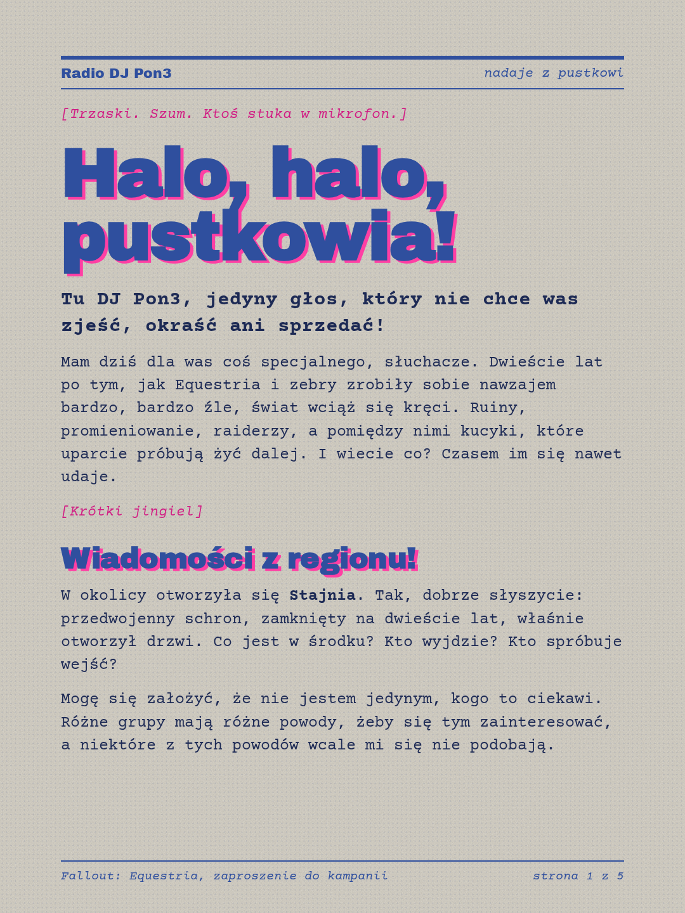
Strona 1
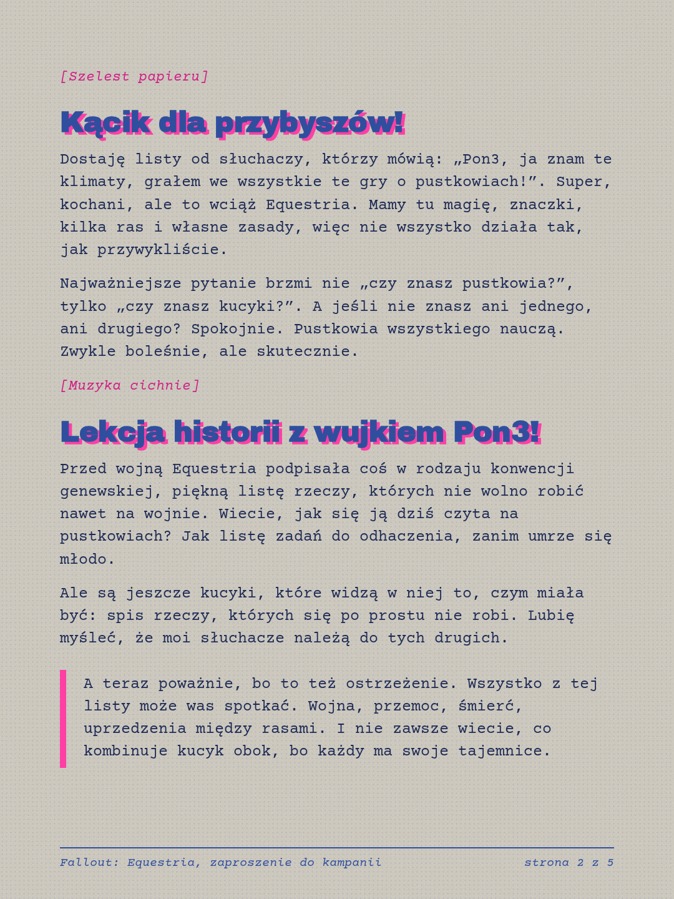
Strona 2
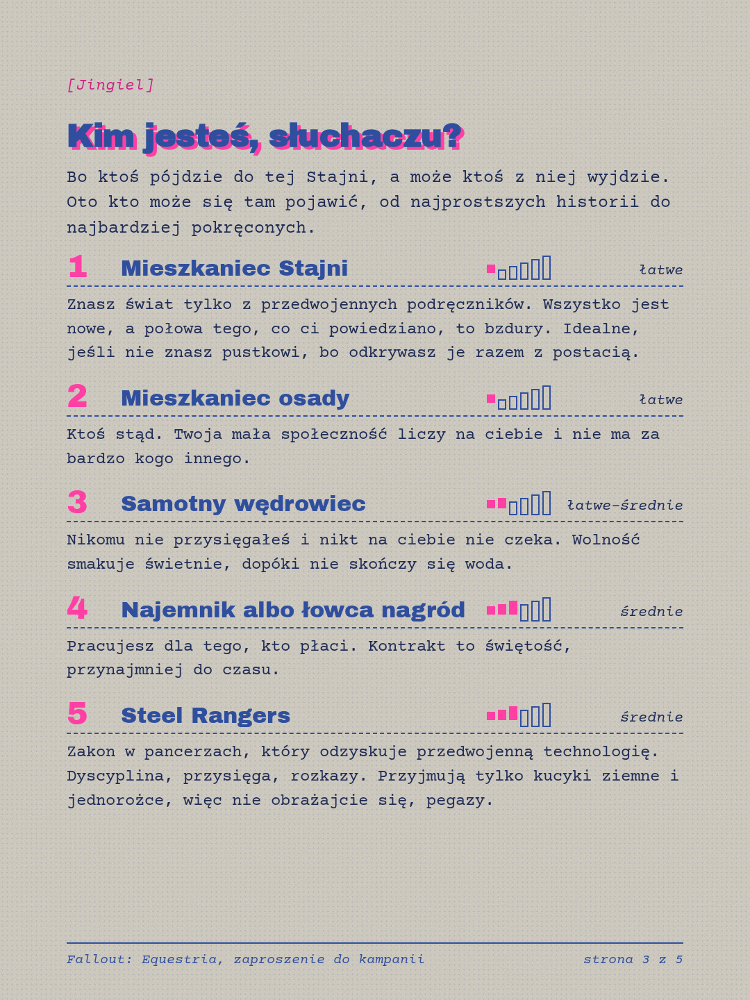
Strona 3
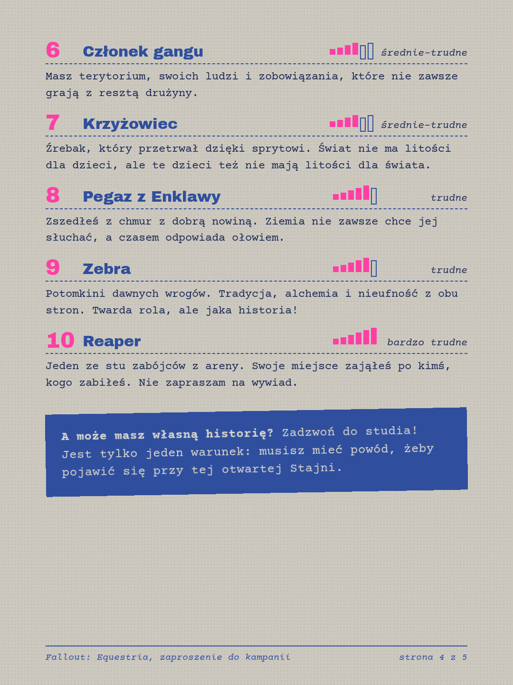
Strona 4
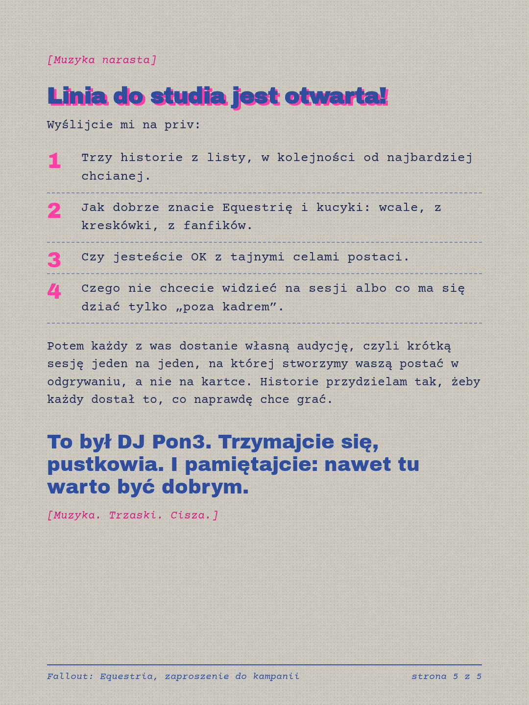
Strona 5
Dodatek L
Galeria
Portrety, znaczki i grafiki kampanii.
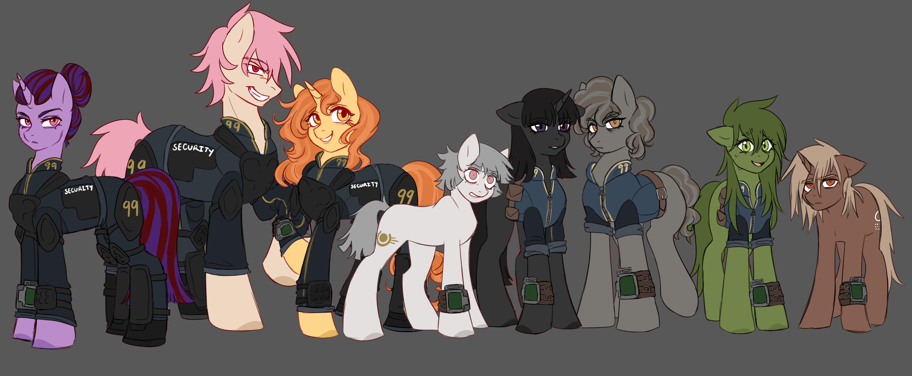
Drużyna i mieszkańcyUrielZnaczek UrielaRusty SpurZnaczek Rusty'egoRick Scrapper — wzór wygląduZnaczek Ricka
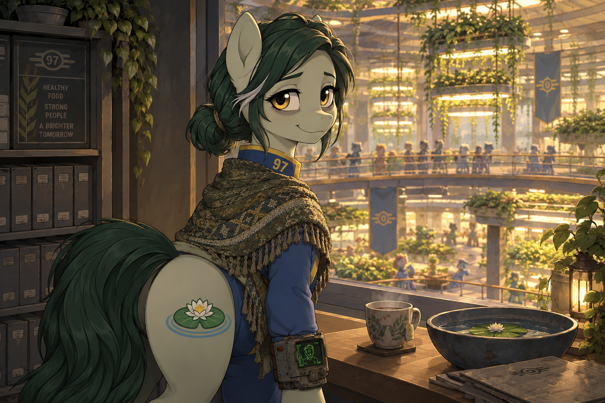
Lily Pad
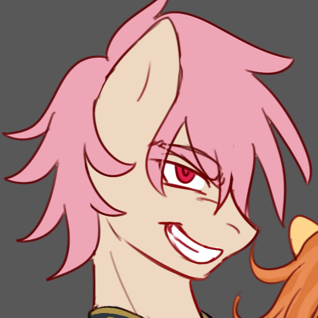
Portret (Sec1)
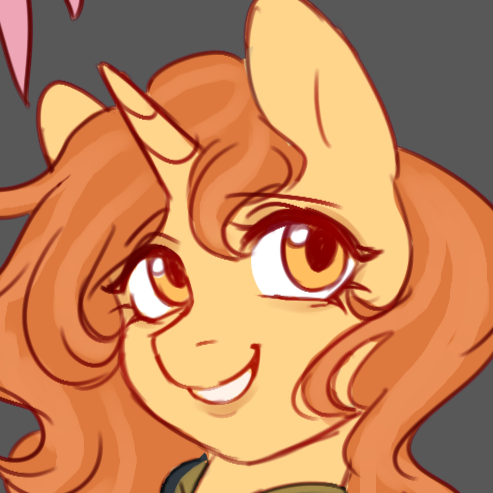
Portret (Sec2)Znaczek Lily Pad
Na koniec
Źródła wydania
Co zmieniło się w tym wydaniu i z czego zostało złożone. Otwarte kwestie są przy tekście, w notkach „Do ustalenia”.
Co nowego w tym wydaniu
Jeden dokument zamiast ośmiu. Świat i założenia, pełny scenariusz jednostrzału (z rozdziałami o Stajni, sekrecie, BN-ach i gangu), wszystkie trzy sesje zero, ekran MG, materiały graczy i handouty.
Jednostrzał przeliczony na trzech graczy według wydania z 12.11: 2 radroache, 2 robotnice i żołnierz, młody bloatsprite; 3 oprychów (w tym Knot), 2 strzelców, 2 zwiadowców (w tym Burr); odwrót po 2 z 5 łowców; „dwoje obcych” i „wasza trójka” w tekstach do czytania.
Sesja zero Rusty'ego w wersji 2 — z odpowiedziami z zeszytu: Ciche Brody, Old Anvil i Daisy, manierka na rozstajach, znak trzech kresek i koła, art. 14, Mudhoof, wyposażenie przełożone na podręcznik. Zastępuje wersję z placeholderami „[z zeszytu]”.
Układ według czasu gry: najpierw sesje zero (przeszłość: Uriel 18.11, Rick 20.11, Rusty 24.11), potem one-shot. Świat, Stajnia i sekret nie mają osobnych rozdziałów — są przy scenach, w których się przydają.
Notki MG na marginesie obok tekstu: Sekret MG, Podpowiedź, Na później (kierunek, nie wyrok), Do ustalenia, notki o graczach; odsyłacze „→ wraca:” pokazują, gdzie wątek wraca.
Rick Scrapper (Tymek): koncepcja z rozmowy z 7.11, wygląd i znaczek.
Pochodzenie Uriela uzupełnione z notatek na ekranie MG (ojciec z EVC, Szpon wynajęty do ucieczki, jajo z mikstury szamanki).
Nici graczy w jednostrzale: gdzie wracają Burr i serce dzwonka, Knot i zasada 3, kodeks Uriela przy Pea i Pod, „w Stajni uszanuję” przy składaniu broni.
Mapy i grafiki w tekście: poziom 0 i 1 Stajni, Atrium, stodoła, portrety i znaczki.
Źródła tego wydania
Dokument
Stan
Co z niego weszło
FoE_Jednostrzal_i_sesje_zero_MG.pdf
12.11.2026
baza: Akt 1 (3 graczy), sesje zero; poprzednie wydania w „starsze wersje”
fundament, osadnicy, sekret, pochodzenia, warianty, do ustalenia
Sesja 0 Mieszkaniec Stajni Ogrodów.md
5.10.2026
sesja zero Ricka (scenariusz bez zmian, dopisane notki i tło Stajni)
Ekran MG Fallout Equestria.md
—
dodatek A (zasady); notatki o Urielu
FoE_wybor_rasy.pdf, Przewodnik po podręczniku.md, Ściąga (docx)
7.10–9.11
dodatki B–D
Ksiega_Szponu.pdf
17.10.2026
dodatek E (wersja aktualna; wcześniejsza w „starsze wersje”)
Spisane Prawo.pdf + Poniacz.docx
15.11.2026
dodatek F z odpowiedziami
Świat na zewnątrz, Wiadomość od Obserwatora, Witaj na pustkowiach, Opowieść przy ogniu (HTML/PDF)
—
dodatki G–J
Zapro.zip / zaproszenia 1–5
6.10.2026
dodatek K
Stajnia 97 Gardens — opis (HTML)
—
tekst otwierający „Świat i założenia”
Nie weszło: pliki „Karta postaci” (to okrojone wycinki podręcznika V1.22, nie wypełnione karty) i „Echa Stajni 42” (przykładowe dane narzędzia MG z innej, przykładowej kampanii).